Теорвер и матстат
Вопросы по теории вероятностей и математической статистике.
Перед вопросами
Видео, которые помогут разобраться в математике для ML
Посмотрите их целиком или возвращайтесь к нужным темам, когда встречаете незнакомое понятие в вопросах ниже.
-
 Математика для ML: теория вероятностей, математическая
статистика и оптимизация ↗
Разбор трёх разделов, без которых не обойтись ML-инженеру:
теорвер, матстат и оптимизация — что именно спрашивают и зачем
это нужно на практике.
Математика для ML: теория вероятностей, математическая
статистика и оптимизация ↗
Разбор трёх разделов, без которых не обойтись ML-инженеру:
теорвер, матстат и оптимизация — что именно спрашивают и зачем
это нужно на практике.
-
 Популярные вопросы по математике для ML и DS ↗
Линейная алгебра, матанализ, векторы и матрицы, нормы,
косинусная близость, ранг, базис, производная, градиент и
экстремумы, аппроксимация, интерполяция и экстраполяция.
Популярные вопросы по математике для ML и DS ↗
Линейная алгебра, матанализ, векторы и матрицы, нормы,
косинусная близость, ранг, базис, производная, градиент и
экстремумы, аппроксимация, интерполяция и экстраполяция.
-
Типы случайных величин
Случайная величина — это правило, которое каждому исходу случайного опыта ставит в соответствие число. До опыта мы не знаем, какой исход произойдёт, но само правило уже задано.
Бросок, измерение, выбор человека — это опыт. Случайная величина превращает его результат в число, с которым можно работать математически.
Бросаем кубик. Возможные исходы — грани от 1 до 6. Пусть X — число на выпавшей грани.
Правило X известно до броска. Если выпала четвёрка, полученное значение обозначаем x = 4.
Обозначение Что означает В примере с кубиком X Случайная величина — правило «Посмотреть, какая грань выпала» x Значение после опыта Выпала четвёрка: x = 4 Не путай случайную величину X с её конкретным значением x.
Тип случайной величины определяется тем, как появляются её возможные значения: мы их считаем или измеряем.
Тип Какие значения возможны Пример Дискретная Отдельные значения, которые можно посчитать Число заявок за час; результат кубика Непрерывная Любые значения внутри промежутка Время ожидания; рост человека; температура У счёта есть отдельные значения: например, 0, 1, 2 заявки. У измерения между двумя возможными результатами можно указать ещё один — например, между 2,1 и 2,2 секунды есть 2,15 секунды.
От типа величины зависит, как мы задаём вероятность. Для дискретной можно перечислить значения и указать вероятность каждого. Для непрерывной рассматривают вероятность попасть в интервал — например, время ожидания от 2 до 3 минут.
Поэтому дискретные величины описывают функцией вероятности, а непрерывные — плотностью распределения. Эти инструменты разобраны в следующих темах.
Дробное число не обязательно означает непрерывную величину. Цена в рублях и копейках может принимать только значения с шагом в одну копейку — это дискретный набор. А время, даже записанное целым числом секунд, обычно моделируют как непрерывное.
Тип целевой переменной помогает выбрать тип задачи:
- Классификация: нужно предсказать категорию или класс, например, уйдёт клиент или останется.
- Регрессия: нужно предсказать числовую величину, например, цену квартиры или время доставки.
Открыть вопросы для самопроверки
Что такое случайная величина?
Правило, сопоставляющее каждому исходу опыта число. Обозначают обычно X или ξ.
Чем случайная величина отличается от её значения?
X — правило; x — значение, полученное после опыта.
В чём разница между дискретной и непрерывной величиной?
Дискретную получают счётом отдельных исходов, непрерывную — измерением.
Как описывают вероятности этих величин?
Для дискретной указывают вероятности отдельных значений, для непрерывной — вероятность интервала через плотность.
Может ли дробная величина быть дискретной?
Да. Например, цена в копейках имеет фиксированный шаг и отдельные возможные значения.
Приведи пример дискретной и непрерывной величин.
Число заявок — дискретная; время ожидания — непрерывная.
Как это связано с машинным обучением?
Категории обычно предсказывают классификацией, числовые величины — регрессией.
-
Функция вероятности
Функция вероятности (probability mass function, PMF) — это функция, которая задаёт вероятность того, что дискретная случайная величина $\xi$ примет конкретное значение $x$, то есть $\mathbb{P}(\xi = x)$.
Если совсем простыми словами: это таблица «значение — его вероятность», записанная в виде функции. Вы подаёте на вход интересующее вас значение, а на выходе получаете число от 0 до 1 — насколько часто это значение выпадает.
Запись $\mathbb{P}(\xi = 3) = 0.2$ означает: «в 20% опытов случайная величина $\xi$ принимает значение 3». То есть если повторить опыт 1000 раз, значение 3 выпадет примерно 200 раз.
Обратите внимание: аргумент функции — это не номер опыта и не сам исход, а конкретное числовое значение, вероятность которого нас интересует.
Функция вероятности должна удовлетворять двум условиям:
$$\begin{aligned} &0 \leq \mathbb{P}(\xi = x) \leq 1 \\ &\sum_{x} \mathbb{P}(\xi = x) = 1 \end{aligned}$$
- Первое условие означает, что вероятность не может быть отрицательной или больше 1.
- Второе условие («нормировка») означает, что сумма вероятностей всех возможных значений равна 1.
Единица — это «весь запас уверенности», который мы распределяем между исходами. Опыт обязательно чем-то закончится: какое-то из значений выпадет непременно. Значит, вероятность события «выпало хоть что-нибудь» равна 1, а она как раз и складывается из вероятностей отдельных значений.
Отсюда полезное практическое следствие: если вы посчитали вероятности и в сумме получилось не 1 — где-то потерян исход или допущена ошибка в расчётах. Это первая проверка, которую стоит делать всегда.
Пусть $X$ — число, выпавшее при броске правильной игральной кости. Кость симметрична, поэтому все шесть граней равноправны:
$$\mathbb{P}(X = k) = \frac{1}{6}, \quad k \in \{1, 2, 3, 4, 5, 6\}$$
Проверка нормировки: $6 \cdot \tfrac16 = 1$. Это дискретное равномерное распределение — все значения равновероятны.
Реальные распределения редко бывают равномерными. Пусть в интернет-магазине из 1000 чеков 600 содержат один товар, 250 — два, 100 — три, 50 — четыре. Делим каждое число на 1000 и получаем функцию вероятности:
$$\mathbb{P}(\xi = 1) = 0.60,\quad \mathbb{P}(\xi = 2) = 0.25,\quad \mathbb{P}(\xi = 3) = 0.10,\quad \mathbb{P}(\xi = 4) = 0.05$$
Сумма: $0.6 + 0.25 + 0.1 + 0.05 = 1$ — нормировка выполнена. Любая форма записи (таблица, формула, столбчатая диаграмма) описывает один и тот же объект.
График функции вероятности — это отдельные вертикальные палочки над каждым возможным значением, а не сплошная линия. Высота палочки равна вероятности, а между палочками пусто: промежуточных значений у дискретной величины не бывает, чек с 2.4 товарами невозможен.
Чтобы найти вероятность более сложного события, вероятности отдельных значений просто складывают — разные значения не могут выпасть одновременно, поэтому пересечений нет:
$$\mathbb{P}(\xi \geq 3) = \mathbb{P}(\xi = 3) + \mathbb{P}(\xi = 4) = 0.10 + 0.05 = 0.15$$
То есть 15% чеков содержат три товара и больше. Такое «накопление» суммы приводит к понятию функции распределения $F(x) = \mathbb{P}(\xi \leq x)$, из которой дальше вырастают квантили.
Для непрерывной величины запись $\mathbb{P}(\xi = 175)$ бессмысленна — она всегда даёт ноль. Рост человека не бывает ровно 175.000000… см, если мерить бесконечно точно: значений континуум, и на каждое приходится нулевая доля вероятности.
Поэтому для непрерывных величин используют функцию плотности $f(x)$ и спрашивают про интервалы: $\mathbb{P}(170 \le \xi \le 180)$.
Обратная ловушка: значения плотности $f(x)$ могут быть больше единицы и вероятностями не являются. Функция вероятности же всегда возвращает честную вероятность из отрезка $[0, 1]$. Не переносите интуицию с одного объекта на другой.
Выход классификатора после softmax — это ровно функция вероятности над классами: набор неотрицательных чисел, сумма которых равна 1. Именно поэтому softmax обязательно делит на сумму экспонент — без нормировки условие $\sum_x \mathbb{P}(\xi = x) = 1$ не выполнялось бы, и результат нельзя было бы трактовать как вероятности классов.
Что такое функция вероятности и для каких случайных величин она применяется?
Функция $\mathbb{P}(\xi = x)$, задающая вероятность того, что дискретная случайная величина $\xi$ примет конкретное значение $x$. По сути — таблица «значение — его вероятность», записанная как функция.
Какие два условия должна выполнять функция вероятности?
$0 \leq \mathbb{P}(\xi = x) \leq 1$ — вероятности неотрицательны и не превышают единицы; $\sum_x \mathbb{P}(\xi = x) = 1$ — сумма вероятностей всех возможных значений равна единице.
Почему сумма вероятностей обязана равняться единице?
Опыт обязательно заканчивается каким-то исходом, поэтому вероятность события «выпало хоть что-то» равна 1. Если при расчёте сумма получилась не 1, значит потерян исход или допущена арифметическая ошибка.
Как найти вероятность события вида $\xi \geq 3$?
Сложить вероятности всех подходящих значений: $\mathbb{P}(\xi \geq 3) = \sum_{x \geq 3} \mathbb{P}(\xi = x)$. Складывать можно, потому что разные значения не могут выпасть одновременно.
Почему нельзя использовать функцию вероятности для непрерывных случайных величин?
Для непрерывной величины вероятность принять конкретное значение равна нулю — значений континуум. Вместо функции вероятности используют функцию плотности $f(x)$ и вероятности интервалов.
Каков вид функции вероятности для броска правильного кубика?
$\mathbb{P}(X = k) = \frac{1}{6}$ для $k \in \{1, \dots, 6\}$ — дискретное равномерное распределение, все значения равновероятны.
Как функция вероятности связана с выходом классификатора?
Вектор вероятностей классов после softmax — это функция вероятности над множеством классов: все компоненты неотрицательны и в сумме дают единицу. Нормировка в softmax нужна именно для выполнения этого условия.
-
Плотность распределения
Плотность распределения (функция плотности вероятности, PDF) — это функция $f(x)$, описывающая, как распределена непрерывная случайная величина. Она удовлетворяет двум условиям:
- неотрицательность: $f(x) \geq 0$ для всех $x \in \mathbb{R}$;
- нормировка: $\displaystyle\int_{-\infty}^{+\infty} f(x)\, dx = 1$.
Значение $f(x)$ в точке не является вероятностью, но показывает «интенсивность» распределения вероятности вблизи точки $x$: где $f$ больше, там значения встречаются чаще.
Представьте пляж, вытянутый вдоль оси $x$. Спрашивать «сколько людей стоит ровно в точке $x = 12.0000$ м» бессмысленно — точка не имеет ширины, там никого нет. Осмысленный вопрос другой: «сколько людей на участке от 10 до 15 метров».
Плотность $f(x)$ — это как раз «сколько человек на метр» в данном месте пляжа. Само по себе это число людьми не является (это людей на метр), но, умножив его на длину участка, мы получаем количество людей. Точно так же плотность вероятности, умноженная на ширину интервала, даёт вероятность.
Раз $f(x)$ — не вероятность, ограничения «не больше 1» на неё нет. Например, у равномерного распределения на отрезке $[0,\ 0.1]$ плотность равна $f(x) = 10$: вся единица площади «сжата» в узкую полоску шириной $0.1$, поэтому высота получается большой.
Ограничение накладывается не на высоту, а на площадь под графиком — она обязана равняться единице.
Условия для плотности — это те же два условия, что и для функции вероятности, просто сумма заменена интегралом:
Дискретная СВ Непрерывная СВ Неотрицательность $\mathbb{P}(\xi = x) \geq 0$ $f(x) \geq 0$ Нормировка $\sum_x \mathbb{P}(\xi = x) = 1$ $\int_{-\infty}^{+\infty} f(x)\,dx = 1$ Интеграл здесь — это просто «сумма по бесконечному числу бесконечно мелких кусочков».
Вероятность того, что величина окажется между $a$ и $b$, равна площади под графиком плотности на этом промежутке:
$$P(a \leq \xi \leq b) = \int_a^b f(x)\, dx$$
То есть вероятности «живут» не в точках, а в кусках оси: чтобы получить число, нужно указать промежуток.
Площадь под кривой удобно приближать прямоугольниками: площадь одного равна высоте $f(x_i)$, умноженной на ширину $\Delta x_i$. Смысл прямоугольника прямой — это «вероятность попасть в узкую полоску шириной $\Delta x_i$ около точки $x_i$».
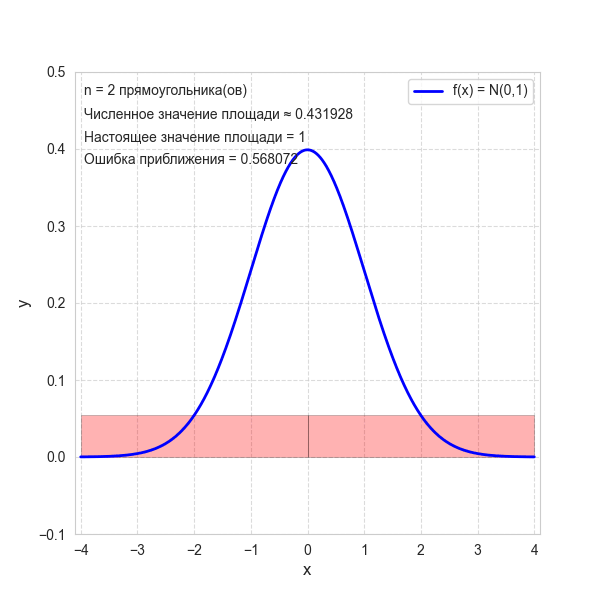
Площадь под кривой плотности, приближённая прямоугольниками: чем уже прямоугольники, тем точнее приближение, и в пределе сумма их площадей превращается в интеграл. Чем больше прямоугольников и чем они уже, тем точнее приближение. В пределе, когда $\Delta x_i \to 0$, сумма их площадей превращается в точное значение площади — это и есть определение интеграла:
$$\int_{-\infty}^{+\infty} f(x)\, dx = \lim_{\Delta x_i \to 0} \sum_{i=1}^{n} f(x_i) \cdot \Delta x_i = 1$$
То есть запись с интегралом означает ровно одно: вся площадь под графиком плотности равна единице.
Точка $x$ движется слева направо: закрашенная площадь под плотностью $f$ левее $x$ растёт от 0 до 1, и синхронно рисуется функция распределения $F(x)=P(X\le x)$. Вероятность попасть в $[a,b]$ — это оранжевая площадь под $f$, она же разность $F(b)-F(a)$ на нижнем графике. Время ожидания автобуса, который приходит равномерно в течение 10 минут. Плотность постоянна: $f(x) = 0.1$ на отрезке $[0, 10]$ и ноль вне его.
- Проверка нормировки: площадь прямоугольника $= 10 \cdot 0.1 = 1$. ✓
- Вероятность прождать от 2 до 5 минут: $P(2 \le \xi \le 5) = (5 - 2) \cdot 0.1 = 0.3$, то есть 30%.
Здесь площадь считается школьной формулой «ширина $\times$ высота» — интеграл не понадобился.
Для нормального распределения с $\mu = 175$ см и $\sigma = 7$ см плотность уже не константа, и площадь руками не посчитать. Но готовые ответы известны:
- $P(168 \le \xi \le 182) \approx 0.68$ — около 68% людей попадают в $\mu \pm \sigma$;
- $P(161 \le \xi \le 189) \approx 0.95$ — около 95% попадают в $\mu \pm 2\sigma$.
На практике такие площади берут из библиотек:
scipy.stats.norm.cdf(182, 175, 7) - scipy.stats.norm.cdf(168, 175, 7).Интеграл от $x$ до $x$ — это площадь прямоугольника нулевой ширины, то есть ноль. Отсюда важное следствие: для непрерывной величины строгие и нестрогие неравенства дают одну и ту же вероятность:
$$P(a < \xi < b) = P(a \leq \xi \leq b)$$
Границы можно включать или не включать — на ответ это не влияет. Для дискретной величины так делать нельзя.
Плотность $f(x)$ — это свойство теоретического распределения, идеальная кривая. Гистограмма — это картинка по конкретной выборке, столбики которой скачут из-за случайности и зависят от числа бинов.
Гистограмма лишь приближает плотность и сходится к ней с ростом объёма данных. Именно поэтому по маленькой выборке нельзя уверенно судить о форме распределения: «два горба» на 30 наблюдениях чаще всего просто шум.
Плотность — основа всего вероятностного ML:
- Максимизация правдоподобия (maximum likelihood): модель подбирает параметры так, чтобы плотность в точках обучающей выборки была максимальной. MSE в линейной регрессии выводится именно отсюда — из предположения о нормальном шуме.
- Наивный байесовский классификатор для числовых признаков оценивает $p(x \mid \text{класс})$ через нормальную плотность.
- Kernel Density Estimation (KDE) восстанавливает плотность по выборке — тот самый сглаженный «холм» вместо гистограммы на графиках seaborn.
- Детекция аномалий: объект считается аномальным, если плотность в его точке слишком мала.
Для работы с этим материалом не нужно уметь брать интегралы руками. Достаточно понимать смысл: интеграл = площадь под графиком = вероятность. Все конкретные числа на практике считают функции
cdfизscipy.stats, а не вы на бумаге.Что такое плотность распределения $f(x)$ и для каких величин она используется?
Функция, описывающая распределение непрерывной случайной величины. Сама по себе вероятностью не является, а показывает «интенсивность» вероятности около точки $x$: где $f$ больше, там значения встречаются чаще.
Какие два условия должна выполнять функция плотности?
Неотрицательность $f(x) \geq 0$ и нормировка $\int_{-\infty}^{+\infty} f(x)\, dx = 1$ — площадь под всем графиком равна единице.
Может ли плотность быть больше единицы?
Да. Ограничение накладывается на площадь, а не на высоту. У равномерного распределения на $[0,\ 0.1]$ плотность равна 10, потому что единица площади сжата в полоску шириной $0.1$.
Как вычисляется вероятность попасть в интервал $[a, b]$?
$P(a \leq \xi \leq b) = \int_a^b f(x)\, dx$ — это площадь под графиком плотности на промежутке $[a, b]$.
Почему для непрерывной величины вероятность принять конкретное значение равна нулю?
Площадь под графиком в одной точке (интеграл от $x$ до $x$) равна нулю — у прямоугольника нулевая ширина. Поэтому говорят о плотности в точке и о вероятности попасть в интервал.
Какое практическое следствие у равенства $P(\xi = x) = 0$?
Для непрерывной величины строгие и нестрогие неравенства эквивалентны: $P(a < \xi < b) = P(a \leq \xi \leq b)$. Границы интервала можно включать или нет — ответ не изменится.
Чем плотность отличается от гистограммы выборки?
Плотность — свойство теоретического распределения, гладкая кривая. Гистограмма — эмпирическая картинка по конкретной выборке, зависящая от случайности и числа бинов; она лишь приближает плотность и сходится к ней с ростом объёма данных.
Где плотность используется в машинном обучении?
В методе максимального правдоподобия (подбор параметров, максимизирующих плотность на обучающих данных), в наивном байесовском классификаторе, в KDE-оценке распределения и в детекции аномалий по низкой плотности.
-
Сравнение дискретных и непрерывных случайных величин
Характеристика Дискретная СВ Непрерывная СВ Множество значений Конечное или счётное Непрерывный промежуток чисел Форма задания Функция вероятности $\mathbb{P}(\xi = x)$ Функция плотности $f(x)$ График Отдельные точки (палочки) на оси $X$ Непрерывная кривая Условие нормировки $\sum_x \mathbb{P}(\xi = x) = 1$ $\int_{-\infty}^{+\infty} f(x)\,dx = 1$ Вероятность точки $\mathbb{P}(\xi = x)$ может быть $> 0$ всегда $= 0$ Мат. ожидание $\mathbb{E}\xi = \sum_x x \cdot \mathbb{P}(\xi = x)$ $\mathbb{E}\xi = \int x f(x)\,dx$ Вся правая колонка получается из левой одной заменой: сумма превращается в интеграл. Это не два разных мира, а одна и та же логика, записанная для «пересчитываемых» и «непрерывных» значений.
Дискретный случай: складываем конечное число слагаемых. Непрерывный случай: слагаемых бесконечно много и каждое бесконечно мало, поэтому вместо $\sum$ пишут $\int$. Если понять эту аналогию, вторую колонку не придётся запоминать отдельно.
- У дискретной случайной величины можно прямо сказать: «вероятность выпасть орлу равна 0.5». Возможных значений конечное (или счётное) число, и у каждого есть своя вероятность.
- У непрерывной так не получится: вероятность того, что рост человека окажется ровно 175.000000… см, равна нулю — значений бесконечно много. Поэтому говорят о вероятности попасть в интервал: «вероятность роста от 170 до 180 см».
Если бы каждое из бесконечного числа значений имело хоть какую-то положительную вероятность $\varepsilon > 0$, их сумма была бы бесконечной. А сумма всех вероятностей обязана равняться единице. Единственный способ примирить эти два требования — назначить каждой отдельной точке нулевую вероятность, а положительную вероятность оставить только промежуткам.
Тонкий, но важный момент: событие «рост ровно 175.000… см» имеет вероятность 0, но при этом какое-то конкретное значение при измерении всё-таки выпадает. То есть вероятность 0 не означает «никогда не случится» для непрерывных величин.
Практическое следствие: для непрерывной величины границы интервала можно включать или не включать — ответ не меняется, $P(a < \xi < b) = P(a \le \xi \le b)$. Для дискретной так делать нельзя: $\mathbb{P}(\xi < 3)$ и $\mathbb{P}(\xi \le 3)$ различаются ровно на $\mathbb{P}(\xi = 3)$.
Значения $0, 1, 2, 3, \dots$ — их можно занумеровать. Распределение задаётся таблицей: $\mathbb{P}(\xi = 0) = 0.3$, $\mathbb{P}(\xi = 1) = 0.4$ и так далее. Вопрос «какова вероятность ровно двух покупок?» вполне осмысленный и имеет конкретный ответ.
Значения — любое положительное вещественное число. Распределение задаётся плотностью, например экспоненциальной $f(x) = \lambda e^{-\lambda x}$.
Вопрос «какова вероятность, что страница загрузится ровно за 1.234 секунды?» бессмысленный — ответ всегда 0. Осмысленный вопрос: «какова вероятность загрузки быстрее 2 секунд?», и это уже площадь под кривой на промежутке $[0, 2]$.
В реальных данных чистых непрерывных величин не бывает: любой прибор округляет, и время загрузки хранится, скажем, с точностью до миллисекунды — значит, формально это дискретная величина с шагом 0.001.
Тем не менее её моделируют непрерывной, потому что шаг ничтожно мал по сравнению с разбросом, а работать с гладкой плотностью удобнее, чем с таблицей на миллион строк. И наоборот, дискретную величину с большим числом значений (число просмотров за месяц) часто аппроксимируют нормальным распределением. Выбор модели — вопрос удобства, а не «истинной природы» величины.
Тип целевой переменной задаёт всю постановку задачи:
- Дискретная цель (класс 0 или 1, категория товара) — задача классификации. Функция потерь — cross-entropy, метрики — accuracy, precision/recall, ROC-AUC. Модель на выходе даёт функцию вероятности по классам (softmax).
- Непрерывная цель (цена, температура, время) — задача регрессии. Функция потерь — MSE, MAE или Huber, метрики — RMSE, MAE, $R^2$.
Счётные целевые переменные (число заказов за день: 0, 1, 2, …) формально дискретны, но задачей классификации не являются — классов бесконечно много и они упорядочены. Такие задачи решают регрессией Пуассона или регрессией на счётные данные, а не логистической регрессией.
Симметричная ошибка — превращать порядковую переменную (оценка от 1 до 5) в обычную регрессию, игнорируя, что расстояние между «1» и «2» не обязано быть таким же, как между «4» и «5».
В чём принципиальное отличие дискретной случайной величины от непрерывной?
Дискретная принимает конечное или счётное число значений, каждому из которых соответствует своя вероятность. Непрерывная принимает любые значения из промежутка вещественных чисел и задаётся функцией плотности.
Как связаны формулы для дискретного и непрерывного случая?
Одной заменой: сумма превращается в интеграл. $\sum_x \mathbb{P}(\xi = x) = 1$ становится $\int f(x)\,dx = 1$, а $\mathbb{E}\xi = \sum_x x\,\mathbb{P}(\xi = x)$ становится $\mathbb{E}\xi = \int x f(x)\,dx$.
Почему нельзя говорить о вероятности того, что непрерывная величина равна ровно некоторому значению?
Значений бесконечно много. Если бы каждое имело положительную вероятность, их сумма была бы бесконечной, а обязана равняться единице. Поэтому вероятность точки равна нулю, и говорят о вероятности попасть в интервал $[a, b]$.
Означает ли нулевая вероятность, что событие невозможно?
Нет. Для непрерывной величины какое-то конкретное значение всё равно реализуется, хотя его вероятность равна нулю. Нулевая вероятность и невозможность — разные вещи.
Чем отличается работа со строгими и нестрогими неравенствами в двух случаях?
Для непрерывной величины $P(a < \xi < b) = P(a \le \xi \le b)$ — границы не влияют. Для дискретной $\mathbb{P}(\xi < 3)$ и $\mathbb{P}(\xi \le 3)$ различаются на $\mathbb{P}(\xi = 3)$.
Как тип целевой переменной влияет на выбор функции потерь в ML?
Дискретная цель (классификация) — cross-entropy или 0-1 loss. Непрерывная цель (регрессия) — MSE, MAE или Huber loss.
Всегда ли деление на дискретные и непрерывные величины строгое на практике?
Нет. Любые реальные измерения округляются и формально дискретны, но их моделируют непрерывными ради удобства. И наоборот, дискретную величину с большим числом значений часто приближают нормальным распределением. Выбор модели диктуется удобством, а не природой величины.
-
Нормальное (гауссовское) распределение
Это пример непрерывного распределения с плотностью
$$f(x)=\dfrac{1}{\sqrt{2\pi \sigma^2}}e^{-\frac{(x-\mu)^2}{2\sigma^2}},$$
где параметр $\mu$ — математическое ожидание (среднее значение), одновременно медиана и мода распределения, а параметр $\sigma$ — среднеквадратическое отклонение, $\sigma^{2}$ — дисперсия. Обозначение: $\xi \sim \mathcal{N}(\mu, \sigma^2)$.
Как читать
- $\xi \sim \mathcal{N}(\mu, \sigma^2)$ — «кси имеет нормальное распределение с параметрами мю и сигма в квадрате»: величина $\xi$ распределена нормально с математическим ожиданием $\mu$ и дисперсией $\sigma^2$. Значок $\sim$ — «распределена как», $\mathcal{N}$ — «нормальное».
- $f(x)=\dfrac{1}{\sqrt{2\pi \sigma^2}}e^{-\frac{(x-\mu)^2}{2\sigma^2}}$ — «эф от икс равно единице, делённой на корень из два пи сигма квадрат, умноженной на е в степени минус дробь: икс минус мю в квадрате на два сигма квадрат».
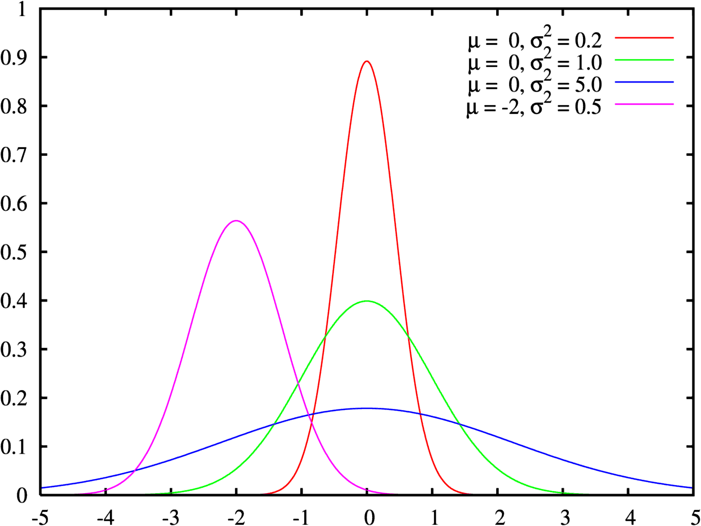
Плотность нормального распределения: симметричный «колокол» с вершиной в точке $\mu$; ширина колокола задаётся параметром $\sigma$. Формула выглядит громоздко, но у неё всего две «ручки настройки»:
- $\mu$ сдвигает колокол влево-вправо. Это центр, вокруг которого группируются значения.
- $\sigma$ растягивает или сжимает колокол. Маленькая $\sigma$ — узкий высокий пик, значения кучно сидят около среднего. Большая $\sigma$ — приплюснутый широкий холм, разброс большой.
Форма при этом всегда одна и та же: симметричный колокол, у которого значения тем реже, чем дальше они от центра. Никакие другие искажения (перекос, второй горб) нормальное распределение описать не может.
Как ведёт себя колокол при изменении параметров. Сдвиг $\mu$ переносит кривую целиком, не меняя формы. Изменение $\sigma$ меняет ширину: при малой $\sigma$ колокол узкий и высокий, при большой — широкий и низкий, но площадь под кривой всегда остаётся равной единице. Закрашена область $\mu \pm \sigma$ — в ней лежит около 68% массы. - $(x - \mu)^2$ — квадрат отклонения от центра. Симметричен: отклонение на $+3$ и на $-3$ дают одно и то же, отсюда симметрия колокола.
- деление на $2\sigma^2$ — перевод отклонения в «количество сигм»: измерять разброс в единицах $\sigma$ удобнее, чем в сантиметрах или рублях.
- $e^{-(\dots)}$ — минус в экспоненте означает быстрое убывание: чем дальше от центра, тем стремительнее падает плотность. Именно поэтому у нормального распределения «лёгкие хвосты» — далёкие выбросы почти невозможны.
- $\dfrac{1}{\sqrt{2\pi\sigma^2}}$ — нормировочный множитель, подобранный так, чтобы площадь под графиком равнялась ровно единице.
- IQ-тесты: среднее $\mu=100$, разброс $\sigma = 15$
- Ошибки измерения в экспериментах
- Оценки студентов в больших классах
- Рост и вес людей
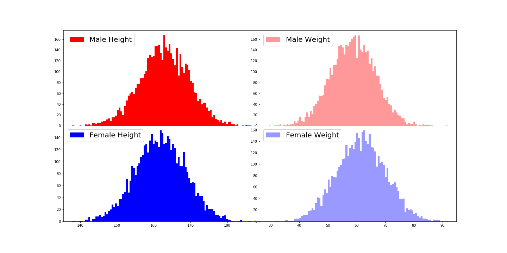
Гистограммы роста и веса по большой выборке людей: обе укладываются в характерный колокол, потому что итоговое значение складывается из множества мелких независимых факторов — генетики, питания, образа жизни. Для роста мужчин с $\mu = 175$ см и $\sigma = 7$ см:
- $\mu \pm \sigma$ — от 168 до 182 см — попадает ≈ 68% людей;
- $\mu \pm 2\sigma$ — от 161 до 189 см — ≈ 95%;
- $\mu \pm 3\sigma$ — от 154 до 196 см — ≈ 99.7%.
То есть человек ростом 200 см — это отклонение больше чем на $3\sigma$, встречающееся реже чем у одного из 700. Это правило — самый быстрый способ прикинуть, «нормальное» ли значение перед вами, без всяких таблиц.
Причин три:
- Центральная предельная теорема: сумма большого числа независимых случайных величин (практически с любым распределением) стремится к нормальному. Рост человека — это сумма вкладов сотен генов и факторов среды, поэтому он и получается нормальным. Не «мир так устроен», а «так работает сложение случайностей».
- Математическое удобство: сумма нормальных величин снова нормальна, линейное преобразование нормальной величины снова нормально, все нужные формулы выписываются в явном виде. Ни одно другое распределение так себя не ведёт.
- Максимальная энтропия: при фиксированных среднем и дисперсии нормальное распределение — наиболее «размытое», то есть содержащее минимум дополнительных предположений. Если вы знаете только среднее и разброс, честнее всего предположить нормальность.
Если $\mu=0$, $\sigma=1$, распределение называют стандартным и обозначают $\mathcal{N}(0, 1)$. Любую нормальную величину приводят к нему стандартизацией (z-преобразованием):
$$z = \frac{\xi - \mu}{\sigma} \sim \mathcal{N}(0, 1)$$
Смысл $z$ прямой: на сколько сигм значение отклонилось от среднего. Рост 189 см при $\mu = 175$, $\sigma = 7$ даёт $z = 2$ — «на две сигмы выше среднего». Именно поэтому в статистике достаточно одной таблицы для $\mathcal{N}(0,1)$: все остальные случаи сводятся к ней.
Рассмотрим плотность стандартного нормального распределения:
$$\textcolor{magenta}{f(x)=\dfrac{1}{\sqrt{2\pi}}e^{-\frac{x^2}{2}}}$$
Основа здесь — функция $e^{-x^2/2}$, задающая форму колокола. Но сама по себе она плотностью быть не может: площадь под ней равна не единице, а (это известный результат, примем его на веру)
$$\int_{-\infty}^{+\infty} e^{-x^2/2}dx=\sqrt{2\pi}.$$
Значит, чтобы выполнить условие нормировки, нужно поделить на эту площадь:
$$\int_{-\infty}^{+\infty}\textcolor{magenta}{f(x)}dx=\textcolor{magenta}{\dfrac{1}{\sqrt{2\pi}}} \int_{-\infty}^{+\infty}\textcolor{magenta}{e^{-\frac{x^2}{2}}}dx=\dfrac{1}{\sqrt{2\pi}} \sqrt{2\pi}=1.$$
То есть $\sqrt{2\pi}$ — не мистика, а просто коэффициент, подогнанный так, чтобы площадь стала единичной. Тот же смысл у множителя $\sigma$ в общем случае: он компенсирует растяжение колокола по горизонтали.
Нормальность — сильное предположение, и в реальных данных она нарушается чаще, чем кажется:
- Доходы, длительности сессий, размеры городов имеют тяжёлый правый хвост — там уместнее логнормальное распределение или распределение Парето.
- Финансовые доходности дают экстремальные скачки заметно чаще, чем предсказывает нормальная модель: «событие раз в тысячу лет» случается каждые пару лет.
- Ограниченные величины (доля, возраст, время) не могут быть строго нормальными: нормальное распределение определено на всей оси, включая отрицательные значения.
Проверять нормальность стоит хотя бы гистограммой и Q-Q-графиком, а формально — тестами Шапиро — Уилка или Колмогорова — Смирнова.
Требование нормальности относится не к признакам и не к целевой переменной, а к остаткам модели — и то лишь для корректности доверительных интервалов и $p$-значений коэффициентов. Сами предсказания линейная регрессия делает без всяких предположений о нормальности.
Похожая путаница с $t$-тестом: при большой выборке он работает и на ненормальных данных — благодаря ЦПТ нормальным становится выборочное среднее, а не сами наблюдения.
- Инициализация весов нейросетей (Xavier, He) — из нормального распределения с рассчитанной дисперсией.
- Регуляризация $L_2$ эквивалентна нормальному априорному распределению на веса в байесовской постановке.
- MSE как функция потерь выводится из предположения о нормальном шуме: максимизация правдоподобия при нормальных остатках даёт ровно минимизацию суммы квадратов.
- Стандартизация признаков $x_{\text{norm}} = \frac{x - \mu}{\sigma}$ — то самое z-преобразование, ускоряющее сходимость градиентного спуска.
- Гауссовский шум в диффузионных моделях и VAE, GMM для кластеризации.
Запишите плотность нормального распределения и назовите его параметры.
$f(x) = \dfrac{1}{\sqrt{2\pi\sigma^2}} e^{-\frac{(x-\mu)^2}{2\sigma^2}}$. Параметр $\mu$ — математическое ожидание (одновременно медиана и мода), $\sigma$ — среднеквадратическое отклонение, $\sigma^2$ — дисперсия. $\mu$ сдвигает колокол, $\sigma$ задаёт его ширину.
Что такое стандартное нормальное распределение $\mathcal{N}(0, 1)$ и зачем оно нужно?
Нормальное распределение с нулевым средним и единичной дисперсией. Любую нормальную величину можно к нему привести стандартизацией: $z = \frac{\xi - \mu}{\sigma} \sim \mathcal{N}(0, 1)$. Значение $z$ показывает, на сколько сигм наблюдение отклонилось от среднего, поэтому все расчёты сводятся к одной таблице.
Сформулируйте правило трёх сигм.
В интервал $\mu \pm \sigma$ попадает около 68% значений, в $\mu \pm 2\sigma$ — около 95%, в $\mu \pm 3\sigma$ — около 99.7%. Это быстрый способ оценить, насколько нетипично наблюдение.
Почему нормальное распределение так часто встречается в реальных данных?
По центральной предельной теореме сумма большого числа независимых случайных факторов стремится к нормальному распределению. Рост, вес, ошибки измерений складываются из множества мелких вкладов, поэтому получаются примерно нормальными.
В чём три основных преимущества нормального распределения?
Оно возникает естественно из ЦПТ; математически удобно (сумма нормальных нормальна, линейные преобразования сохраняют нормальность); обладает максимальной энтропией при фиксированных среднем и дисперсии, то есть содержит минимум лишних предположений.
Откуда в плотности берётся множитель $\frac{1}{\sqrt{2\pi\sigma^2}}$?
Это нормировочная константа. Площадь под «голым» колоколом $e^{-x^2/2}$ равна $\sqrt{2\pi}$, поэтому деление на неё делает площадь равной единице — это обязательное условие для плотности.
Когда предположение о нормальности нарушается?
У величин с тяжёлым правым хвостом (доходы, длительности сессий, размеры городов), у финансовых доходностей с частыми экстремальными скачками, у ограниченных величин (доли, возраст, время), которые не могут принимать значения на всей числовой оси.
Требует ли линейная регрессия нормальности данных?
Нет. Предположение о нормальности относится к остаткам модели и нужно только для корректных доверительных интервалов и $p$-значений коэффициентов. Сами предсказания строятся без него.
-
Экспоненциальное распределение
Непрерывная случайная величина $X$ имеет экспоненциальное распределение с параметром $\lambda > 0$, если её плотность вероятности имеет вид:
$$f_{X}(x)={\begin{cases}\lambda \,e^{-\lambda x},&x\geq 0,\\0,&x < 0.\end{cases}}$$
Если совсем простыми словами: это распределение времени ожидания до случайного события, которое может произойти в любой момент с одинаковым «напором». Сколько ждать следующего звонка, следующей поломки, следующего клиента.
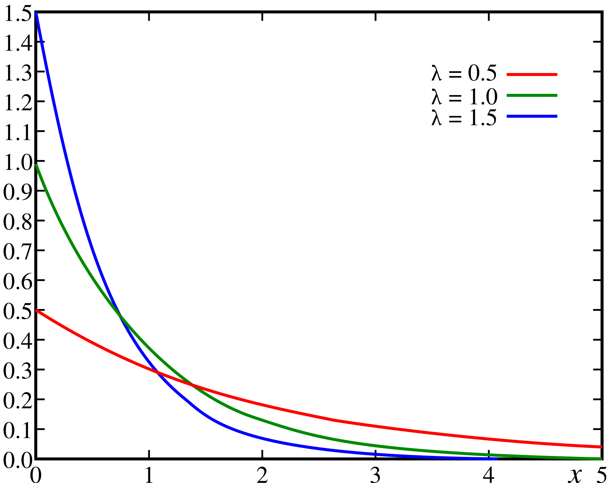
Плотность экспоненциального распределения: максимум в нуле и монотонное убывание. Короткие интервалы ожидания вероятнее длинных, но и очень длинные не исключены — хвост уходит вправо бесконечно. Форма у этого распределения принципиально другая, чем у нормального: не колокол, а горка, съезжающая вправо.
- Плотность максимальна в нуле и монотонно убывает: короткие ожидания вероятнее длинных. Ждать звонка 1 минуту вероятнее, чем 10.
- График не симметричен и хвост уходит вправо неограниченно: изредка приходится ждать очень долго.
- Отрицательных значений быть не может — время ожидания не бывает отрицательным, поэтому слева от нуля плотность равна нулю.
Параметр $\lambda$ называется интенсивностью: это среднее число событий за единицу времени.
Математическое ожидание при этом обратное: $\mathbb{E}X = \dfrac{1}{\lambda}$, дисперсия $\mathbb{D}X = \dfrac{1}{\lambda^2}$.
Логика простая. Если в колл-центр поступает $\lambda = 12$ звонков в час, то средний интервал между звонками равен $1/12$ часа, то есть 5 минут. Чем интенсивнее поток, тем короче ожидание — отсюда и обратная зависимость.
Заявки в поддержку приходят в среднем 12 раз в час, то есть $\lambda = 12$ (в часах) или $\lambda = 0.2$ (в минутах). Среднее ожидание: $1/0.2 = 5$ минут.
Вероятность прождать дольше $t$ минут даётся простой формулой (площадь правого хвоста):
$$P(X > t) = e^{-\lambda t}$$
- $P(X > 5) = e^{-0.2 \cdot 5} = e^{-1} \approx 0.37$ — в 37% случаев ждать придётся дольше среднего;
- $P(X > 15) = e^{-3} \approx 0.05$ — в 5% случаев пауза превысит 15 минут.
Обратите внимание: вероятность прождать дольше среднего — не 50%, а 37%. Распределение несимметрично, поэтому медиана меньше среднего ($\approx 3.5$ минуты против 5).
Ключевое и самое необычное свойство экспоненциального распределения — отсутствие памяти (memoryless property):
$$P(X > s + t \mid X > s) = P(X > t)$$
То есть: если вы уже прождали $s$ минут, вероятность прождать ещё $t$ минут ровно такая же, как если бы вы только начали ждать. Прошлое ожидание не приближает событие.
Вы ждёте автобус, интервалы между которыми экспоненциальны со средним 10 минут.
- Вероятность прождать больше 10 минут с самого начала: $e^{-1} \approx 0.37$.
- Вы уже прождали 20 минут. Вероятность прождать ещё больше 10 минут: те же самые 0.37.
Двадцать минут ожидания не дают вам никакого «кредита». Это ровно то, что раздражает интуицию, но математически безупречно — процесс не помнит, сколько уже прошло.
Свойство напрямую следует из формы $e^{-\lambda x}$: экспонента при сложении аргументов распадается на произведение, $e^{-\lambda(s+t)} = e^{-\lambda s} \cdot e^{-\lambda t}$. Подставив это в определение условной вероятности, получаем ровно $P(X>t)$.
Содержательно это означает, что интенсивность «отказа» постоянна во времени: у объекта нет ни приработки, ни износа. Экспоненциальное распределение — единственное непрерывное распределение с таким свойством.
Сверху — плотность $\lambda e^{-\lambda x}$; серая часть слева от $t$ — то, что уже «не случилось», раз мы прождали $t$. Снизу — оставшийся хвост, сдвинутый к нулю и поделённый на $P(X>t)$: он в точности повторяет исходную кривую при любом $t$. Поэтому $P(X>t+s\mid X>t)=P(X>s)$ — сколько ни ждал, остаток ждать распределён так же. Реальные объекты обычно стареют, и это ломает модель:
- Механические детали изнашиваются: подшипник, отработавший 5 лет, откажет скорее нового. Здесь нужна кривая ванны — распределение Вейбулла, у которого интенсивность отказов меняется со временем.
- Клиенты «стареют» наоборот: чем дольше человек пользуется сервисом, тем ниже вероятность оттока (лояльность растёт).
- Электроника ближе к экспоненциальной модели в середине жизни, но не на этапе приработки и не в конце срока службы.
Прежде чем брать экспоненциальное распределение, спросите себя: правда ли «риск в следующую минуту» не зависит от того, сколько уже прошло?
- Время до отказа электронного компонента
- Время между звонками в службу поддержки
- Интервалы между прибытием машин на светофор
- Время между транзакциями пользователя
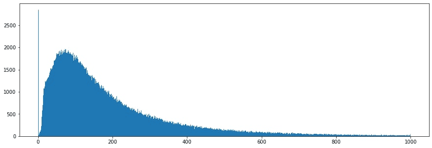
Реальные интервалы между телефонными звонками: гистограмма убывает почти по экспоненте — коротких пауз много, длинных мало, но они встречаются. Экспоненциальное распределение — «обратная сторона» распределения Пуассона: это два взгляда на один и тот же поток событий.
- Считаем сколько событий произошло за фиксированное время — получаем Пуассона с параметром $\lambda$.
- Считаем сколько времени прошло между событиями — получаем экспоненциальное с тем же $\lambda$.
Пример: если в магазин заходит в среднем 12 человек в час (Пуассон, $\lambda = 12$), то интервалы между приходами экспоненциальны со средним 5 минут.
- Анализ выживаемости (survival analysis) и предсказание времени до события: когда пользователь уйдёт (churn prediction), когда откажет оборудование (predictive maintenance).
- Симуляция очередей и нагрузочное тестирование: генерация потока запросов с экспоненциальными интервалами — стандартная модель трафика.
- Экспоненциальное сглаживание и экспоненциально взвешенные средние (EMA в оптимизаторах Adam, RMSProp) используют тот же вид затухания веса со временем.
- Байесовские модели: экспоненциальное распределение служит априорным для неотрицательных параметров, а $L_1$-регуляризация соответствует априорному распределению Лапласа — «двусторонней экспоненте».
Запишите плотность экспоненциального распределения и объясните смысл параметра $\lambda$.
$f(x) = \lambda e^{-\lambda x}$ при $x \geq 0$ и ноль при $x < 0$. Параметр $\lambda > 0$ — интенсивность, среднее число событий за единицу времени. Математическое ожидание равно $\frac{1}{\lambda}$, дисперсия $\frac{1}{\lambda^2}$.
Почему среднее равно $1/\lambda$, а не $\lambda$?
$\lambda$ измеряет частоту («12 звонков в час»), а величина $X$ — время между событиями. Чем выше частота, тем короче интервал, поэтому зависимость обратная: 12 звонков в час дают средний интервал 5 минут.
Как посчитать вероятность прождать дольше времени $t$?
$P(X > t) = e^{-\lambda t}$. Например, при среднем ожидании 5 минут вероятность прождать больше 15 минут равна $e^{-3} \approx 0.05$.
Что такое свойство отсутствия памяти?
$P(X > s + t \mid X > s) = P(X > t)$: вероятность прождать ещё $t$ минут не зависит от того, сколько уже прождали. Прошлое ожидание не приближает событие, интенсивность постоянна во времени.
Когда предположение об отсутствии памяти неверно?
Когда объект стареет или, наоборот, «приживается»: изнашивающиеся механические детали, клиенты с растущей лояльностью, оборудование на этапе приработки. В таких случаях используют распределение Вейбулла с переменной интенсивностью отказов.
Какова связь между экспоненциальным и пуассоновским распределениями?
Это два описания одного потока событий. Число событий за фиксированное время распределено по Пуассону с параметром $\lambda$, а интервалы между событиями — экспоненциально с тем же $\lambda$.
Почему медиана экспоненциального распределения меньше среднего?
Распределение несимметрично и имеет тяжёлый правый хвост: редкие очень долгие ожидания тянут среднее вверх. Медиана равна $\frac{\ln 2}{\lambda} \approx 0.69/\lambda$, то есть примерно 69% от среднего.
Как экспоненциальное распределение применяется в ML?
Для моделирования времени до события (churn prediction, predictive maintenance, survival analysis), для симуляции потоков запросов при нагрузочном тестировании и как априорное распределение для неотрицательных параметров в байесовских моделях.
-
Распределение Бернулли
Дискретная случайная величина $X$ имеет распределение Бернулли, если она принимает всего два значения: $1$ и $0$ с вероятностями $p$ и $q = 1-p$ соответственно:
$$\mathbb{P}(X=1)=p, \qquad \mathbb{P}(X=0)=q=1-p$$
Принято говорить, что событие $\{X=1\}$ соответствует «успеху», а событие $\{X=0\}$ — «неудаче».
Если совсем простыми словами: это математическая запись одного броска несимметричной монетки. Ровно один опыт, ровно два возможных исхода.
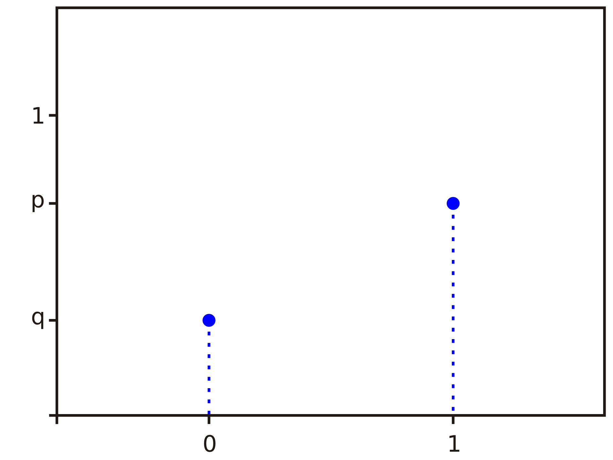
Распределение Бернулли: всего две «палочки» — над нулём высотой $1-p$ и над единицей высотой $p$. Никаких промежуточных значений нет. Не путайтесь в терминологии: «успех» здесь не значит «что-то хорошее». Успехом называют то событие, которое мы решили кодировать единицей. Если моделируется отказ оборудования, то «успех» — это поломка. Выбор произволен: поменяв кодировку, вы просто замените $p$ на $1-p$.
Два равенства можно склеить в одну компактную запись:
$$\mathbb{P}(X = x) = p^x (1-p)^{1-x}, \quad x \in \{0, 1\}$$
Проверка: при $x = 1$ получаем $p^1 (1-p)^0 = p$, при $x = 0$ получаем $p^0 (1-p)^1 = 1-p$. Трюк со «степенью-переключателем» выглядит искусственно, но именно из этой формулы напрямую выводится cross-entropy — стоит запомнить.
- Пользователь зарегистрировался на сайте или нет
- Бросок мяча в баскетболе: попал или промазал
- Клиент купил товар или ушёл без покупки
- Письмо оказалось спамом или нет
- Пациент выздоровел или нет
Во всех случаях это один опыт с двумя исходами. Если опытов несколько, распределение уже другое.
Считаем прямо по определению:
$$\mathbb{E}X = 1 \cdot p + 0 \cdot (1-p) = p$$ $$\mathbb{D}X = \mathbb{E}X^2 - (\mathbb{E}X)^2 = p - p^2 = p(1-p)$$
Среднее равно $p$ — и это не совпадение: среднее по многим испытаниям Бернулли и есть доля успехов. Именно поэтому доля кликов (CTR), доля конверсий и accuracy — это всегда оценка параметра $p$ некоторого распределения Бернулли.
Функция $p(1-p)$ — парабола с вершиной в точке $p = 0.5$, где она равна $0.25$. По краям она обращается в ноль.
Смысл прозрачный: при $p = 0.5$ монетка максимально непредсказуема — предсказать исход невозможно, разброс наибольший. При $p = 0.99$ почти всегда выпадает единица, неопределённости почти нет, и дисперсия близка к нулю ($0.99 \cdot 0.01 \approx 0.01$).
Практическое следствие: у редких событий дисперсия мала, но относительная погрешность оценки велика. Чтобы надёжно измерить конверсию в 1%, нужно куда больше наблюдений, чем чтобы измерить конверсию в 50%.
Бернулли — простейший кирпичик, из которого собираются более сложные распределения:
- Сумма $n$ независимых испытаний Бернулли даёт биномиальное распределение — число успехов в $n$ попытках: $\mathbb{P}(S = k) = C_n^k p^k (1-p)^{n-k}$, $\mathbb{E}S = np$, $\mathbb{D}S = np(1-p)$.
- Число испытаний до первого успеха даёт геометрическое распределение.
- При большом $n$ и малом $p$ биномиальное распределение приближается пуассоновским с $\lambda = np$.
Это самая частая путаница в теме.
- Бернулли — один опыт, значения только 0 или 1. «Кликнул ли этот пользователь?»
- Биномиальное — $n$ опытов, значения от 0 до $n$. «Сколько из 1000 пользователей кликнули?»
Проверочный вопрос: сколько значений может принять ваша величина? Два — Бернулли. Больше — биномиальное или что-то ещё.
В ML распределение Бернулли — фундамент бинарной классификации. Предполагаем, что метка $y \in \{0, 1\}$ — исход испытания Бернулли с параметром $p = \sigma(\mathbf{w}^\top \mathbf{x})$, где $\sigma$ — сигмоида, переводящая любое число в отрезок $(0, 1)$.
Правдоподобие одного наблюдения — та самая склеенная формула $p^y(1-p)^{1-y}$. Берём логарифм, ставим минус (чтобы максимизацию превратить в минимизацию) и получаем cross-entropy:
$$L = -[y \log p + (1-y)\log(1-p)]$$
То есть логистическая регрессия — это не «эвристика с сигмоидой», а метод максимального правдоподобия для модели Бернулли.
Модель выдаёт оценку $\hat p$ параметра Бернулли, но эта оценка бывает плохо откалибрована: нейросеть может выдавать 0.95 там, где реальная доля положительных исходов всего 0.7.
Если вероятность используется для принятия решений (скоринг, ставки, медицина), калибровку нужно проверять отдельно — по калибровочной кривой — и при необходимости чинить (Platt scaling, изотоническая регрессия).
Что такое распределение Бернулли и каков его параметр?
Дискретное распределение величины, принимающей два значения: $\mathbb{P}(X=1)=p$ («успех») и $\mathbb{P}(X=0)=1-p$ («неудача»). Параметр $p \in [0, 1]$ — вероятность успеха. Это модель одного опыта с двумя исходами.
Чему равны математическое ожидание и дисперсия?
$\mathbb{E}X = p$, $\mathbb{D}X = p(1-p)$. Среднее совпадает с вероятностью успеха, поэтому доля успехов в выборке — естественная оценка $p$.
Почему дисперсия максимальна при $p = 0.5$?
$p(1-p)$ — парабола с вершиной в $p = 0.5$, где она равна 0.25. При $p = 0.5$ исход максимально непредсказуем; при $p$, близком к 0 или 1, результат почти детерминирован и разброс мал.
Чем распределение Бернулли отличается от биномиального?
Бернулли описывает один опыт и принимает значения 0 или 1. Биномиальное описывает число успехов в $n$ независимых опытах и принимает значения от 0 до $n$: $\mathbb{P}(S=k) = C_n^k p^k(1-p)^{n-k}$, $\mathbb{E}S = np$.
Как записать функцию вероятности Бернулли одной формулой?
$\mathbb{P}(X = x) = p^x (1-p)^{1-x}$ для $x \in \{0, 1\}$. При $x=1$ она даёт $p$, при $x=0$ — $1-p$. Из этой записи напрямую выводится cross-entropy.
Как распределение Бернулли связано с логистической регрессией?
Метка $y \in \{0,1\}$ считается исходом испытания Бернулли с $p = \sigma(\mathbf{w}^\top\mathbf{x})$. Максимизация логарифма правдоподобия эквивалентна минимизации cross-entropy $L = -[y\log p + (1-y)\log(1-p)]$, что и даёт логистическую регрессию.
Почему для измерения редкой конверсии нужно больше данных?
При малом $p$ абсолютная дисперсия $p(1-p)$ мала, но относительная погрешность оценки велика: чтобы увидеть несколько десятков успехов при конверсии 1%, требуются тысячи наблюдений. Это напрямую влияет на размер выборки в A/B-тестах.
Что такое калибровка предсказанной вероятности?
Соответствие между выдаваемой моделью оценкой $\hat p$ и реальной долей положительных исходов среди объектов с такой оценкой. Плохо откалиброванная модель может быть точной по accuracy, но давать неверные вероятности; чинят это Platt scaling или изотонической регрессией.
-
Распределение Пуассона
Выберем фиксированное число $\lambda > 0$ и определим дискретное распределение, задаваемое функцией вероятности:
$$p(k)\equiv \mathbb{P}(Y=k)={\frac {\lambda ^{k}}{k!}}\,e^{-\lambda}, \quad k = 0, 1, 2, \dots$$
Если совсем простыми словами: это распределение ответа на вопрос «сколько раз произойдёт редкое событие за фиксированный промежуток?» — сколько клиентов зайдёт за час, сколько опечаток встретится на странице, сколько заявок придёт за смену.
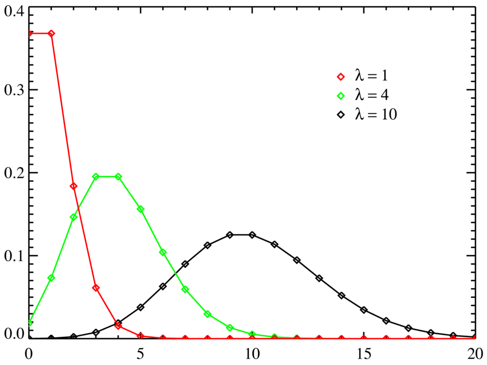
Распределение Пуассона: набор палочек над целыми числами 0, 1, 2, … Пик приходится примерно на $\lambda$; при малом $\lambda$ распределение сильно скошено вправо, при большом становится похоже на симметричный колокол. Распределение Пуассона появляется не произвольно, а когда поток событий устроен так:
- События независимы — то, что один клиент зашёл, не влияет на приход остальных.
- Интенсивность постоянна — среднее число событий в единицу времени не меняется на рассматриваемом промежутке.
- События «точечные» — два события не происходят строго одновременно.
Такой поток называют простейшим (пуассоновским). Если хотя бы одно условие нарушено, модель начнёт врать — и обычно врёт в сторону занижения дисперсии.
$\lambda$ — это среднее число событий за рассматриваемый промежуток. Причём у Пуассона есть редкое свойство:
$$\mathbb{E}Y = \mathbb{D}Y = \lambda$$
Математическое ожидание и дисперсия совпадают. У большинства распределений это два независимых параметра, здесь — один и тот же.
Практическое следствие: если в среднем приходит 100 заявок в день, то стандартное отклонение равно $\sqrt{100} = 10$, и «нормальным» днём будет любой в диапазоне примерно 80–120 заявок. Разброс не задаётся отдельно, он предопределён средним.
В магазин заходит в среднем 3 человека за 10 минут ($\lambda = 3$). Какова вероятность, что за ближайшие 10 минут не зайдёт никто?
$$\mathbb{P}(Y = 0) = \frac{3^0}{0!}e^{-3} = e^{-3} \approx 0.05$$
Ровно двое: $\mathbb{P}(Y=2) = \frac{3^2}{2!}e^{-3} = 4.5 \cdot 0.0498 \approx 0.224$.
Больше пяти: удобнее через дополнение, $\mathbb{P}(Y > 5) = 1 - \sum_{k=0}^{5}\mathbb{P}(Y=k) \approx 1 - 0.916 = 0.084$.
Обратите внимание на масштабируемость: за 20 минут $\lambda$ станет 6, за час — 18. Параметр пропорционален длине промежутка, и об этом легко забыть.
Формула $\frac{\lambda^k}{k!}e^{-\lambda}$ выглядит непрозрачно, но каждая часть на своём месте:
- $\lambda^k$ — «чем больше интенсивность, тем правдоподобнее много событий»;
- $k!$ в знаменателе — штраф за большие $k$: факториал растёт быстрее степени, поэтому вероятность огромного числа событий стремительно падает;
- $e^{-\lambda}$ — нормировочный множитель, обеспечивающий $\sum_k p(k) = 1$ (это ровно разложение экспоненты в ряд, взятое наоборот).
- Количество клиентов в магазине за час
- Число опечаток на 1000 слов текста
- Количество землетрясений в зоне за год
- Число отказов сервера за сутки
- Количество кликов по баннеру за минуту
Распределение Пуассона — это то, во что превращается биномиальное при большом числе попыток и малой вероятности успеха: $n \to \infty$, $p \to 0$, $np = \lambda = \text{const}$.
Интуиция: разобьём час на 3600 секунд. В каждую секунду клиент заходит или нет — это испытание Бернулли с крошечным $p$. Число клиентов за час — сумма 3600 таких испытаний, то есть биномиальная величина, которая при таких параметрах практически неотличима от пуассоновской. Отсюда и второе название — «закон редких событий».
Число попыток $n$ растёт, вероятность успеха $p=\lambda/n$ падает, а среднее $np=3$ остаётся тем же. Столбики биномиального распределения от $n=5$ до $n=1000$ сходятся к розовым точкам $\mathrm{Pois}(3)$ — это и есть предельный переход, который делает Пуассона моделью редких событий. Один и тот же поток можно описать с двух сторон:
- сколько событий за фиксированное время — распределение Пуассона с параметром $\lambda$;
- сколько времени между соседними событиями — экспоненциальное распределение с тем же $\lambda$.
Если в колл-центр поступает 12 звонков в час, то число звонков за час — Пуассон с $\lambda = 12$, а интервалы между звонками — экспоненциальные со средним 5 минут.
Требование $\mathbb{E}Y = \mathbb{D}Y$ в реальных данных нарушается почти всегда: фактический разброс оказывается больше предсказанного. Это называют сверхдисперсией (overdispersion).
Причины — нарушение исходных допущений: интенсивность на самом деле не постоянна (будни против выходных, день против ночи), события не независимы (люди приходят компаниями, поломки идут каскадом), в данных есть скрытая неоднородность (разные магазины смешаны в одну выборку).
Диагностика простая: посчитайте выборочные среднее и дисперсию. Если дисперсия заметно больше среднего — Пуассон не подходит, берите отрицательное биномиальное распределение, где разброс задаётся отдельным параметром.
- Избыток нулей (zero-inflation): нулей в данных больше, чем допускает модель. Типично для покупок — большинство посетителей не покупает вообще ничего. Лечится zero-inflated моделями.
- Забытая пропорциональность времени: $\lambda$ обязан пересчитываться при смене длины интервала. Модель, обученная на дневных счётчиках, не применима к часовым без пересчёта. В регрессии Пуассона для этого используют offset — логарифм длительности или размера экспозиции.
Регрессия Пуассона — стандартный инструмент для предсказания счётных величин: количество заказов в день, число кликов по рекламе, количество дефектов на производстве, число страховых случаев.
Работает она так: модель предсказывает $\log \lambda = \mathbf{w}^\top\mathbf{x}$, то есть логарифм интенсивности линейно зависит от признаков, а сама интенсивность получается как $\lambda = e^{\mathbf{w}^\top\mathbf{x}}$.
Отсюда два преимущества перед обычной линейной регрессией:
- предсказание всегда положительно (экспонента не бывает отрицательной), тогда как линейная регрессия легко выдаёт «−3 заказа»;
- эффекты признаков мультипликативны: коэффициент 0.7 означает не «плюс 0.7 заказа», а «в $e^{0.7} \approx 2$ раза больше заказов», что для счётных данных куда естественнее.
Поддерживается в
sklearn.linear_model.PoissonRegressor, а также какobjective="count:poisson"в XGBoost иobjective="poisson"в LightGBM.Что описывает распределение Пуассона и каков его параметр?
Количество редких независимых событий за фиксированный промежуток времени или пространства при постоянной интенсивности. Параметр $\lambda$ — среднее число событий за этот промежуток.
Запишите функцию вероятности Пуассона.
$\mathbb{P}(Y = k) = \dfrac{\lambda^k}{k!} e^{-\lambda}$ для $k = 0, 1, 2, \dots$ Множитель $e^{-\lambda}$ обеспечивает нормировку, а $k!$ в знаменателе быстро гасит вероятность больших $k$.
Какое уникальное свойство связывает моменты распределения Пуассона?
$\mathbb{E}Y = \mathbb{D}Y = \lambda$ — математическое ожидание и дисперсия совпадают. Значит, разброс нельзя задать независимо от среднего: при среднем 100 стандартное отклонение автоматически равно 10.
При каких условиях возникает пуассоновский поток?
События независимы, интенсивность постоянна во времени, два события не происходят одновременно. Нарушение любого из условий делает модель неадекватной.
Как распределение Пуассона связано с биномиальным?
Это предел биномиального при $n \to \infty$, $p \to 0$ и постоянном произведении $np = \lambda$. Отсюда название «закон редких событий»: много попыток, каждая почти наверняка неуспешна.
Как связаны распределения Пуассона и экспоненциальное?
Это два описания одного потока: число событий за фиксированное время распределено по Пуассону с параметром $\lambda$, а интервалы между событиями — экспоненциально с тем же $\lambda$.
Что такое сверхдисперсия и как её обнаружить?
Ситуация, когда фактическая дисперсия счётных данных заметно больше среднего, хотя модель Пуассона требует их равенства. Обнаруживается сравнением выборочных среднего и дисперсии; лечится переходом к отрицательному биномиальному распределению.
Почему регрессия Пуассона предпочтительнее линейной для счётных данных?
Она моделирует $\log\lambda$ линейно, поэтому предсказание $\lambda = e^{\mathbf{w}^\top\mathbf{x}}$ всегда положительно (линейная регрессия может выдать отрицательное число заказов), а влияние признаков получается мультипликативным, что естественно для счётчиков.
-
Математическое ожидание
Идейно, математическое ожидание случайной величины — это то, что вы с точки зрения математики ожидаете получить, многократно сэмплируя значения из распределения при стремлении числа сэмплирований к бесконечности. Обозначают символом $\mathbb{E}$ (иногда $M$ или $\mu$). Оно отражает средний результат многократного повторения случайного эксперимента.
Представьте, что вы поставили на числовой оси грузики: над каждым возможным значением — грузик весом, равным его вероятности. Математическое ожидание — это точка, в которой такая конструкция будет находиться в равновесии, если поставить её на карандаш.
Отсюда сразу два вывода, которые часто удивляют:
- $\mathbb{E}\xi$ не обязано быть одним из возможных значений. Среднее число детей в семье 1.7 — таких семей не бывает, но точка равновесия именно там.
- Далёкое значение с маленькой вероятностью может сильно сдвинуть баланс — как маленький грузик на длинном плече рычага.
Бросая монетку бесконечное число раз, в пределе получим, что орёл и решка выпадают в среднем одинаковое число раз. Если закодировать орла единицей, а решку нулём, то математическое ожидание такой случайной величины (она, кстати, бернуллиевская, дискретная) равно $0.5$.
Заметьте: значение $0.5$ само по себе никогда не выпадает — выпадает либо 0, либо 1. Математическое ожидание описывает долгосрочное среднее, а не отдельный исход.
Для дискретных случайных величин математическое ожидание — это сумма:
$$\mathbb{E}\xi=\sum_{i=1}^{n}a_i p_i,$$
где $a_i$ — возможное значение случайной величины, $p_i$ — его вероятность, $n$ — число различных возможных значений.
Для непрерывных — это интеграл:
$$\mathbb{E}\xi = \int_{-\infty}^{+\infty} xf(x)dx$$
В дискретном случае возможных значений конечное (или счётное) число, поэтому мы буквально перебираем их все и складываем — конечное суммирование.
В непрерывном случае значений бесконечно много, и вместо перебора берут интеграл — то же самое суммирование, только по бесконечному числу бесконечно узких полосок. Роль вероятности $p_i$ играет $f(x)dx$: «плотность, умноженная на ширину полоски».
То есть это не две разные формулы, а одна и та же идея «взвешенного среднего» в двух записях.
Ключевое отличие математического ожидания от школьного «среднего арифметического» — веса. В школьной формуле все значения складываются с одинаковым весом $1/n$. В математическом ожидании вес значения равен его вероятности: то, что случается чаще, влияет на результат сильнее.
Среднее арифметическое — частный случай, когда все исходы равновероятны.
Пусть случайная величина $\xi$ принимает значения:
Значение $a_i$ Вероятность $p_i$ $-1$ $0.1$ $2$ $0.2$ $5$ $0.3$ $10$ $0.3$ $20$ $0.1$ Тогда
$$\mathbb{E}\xi = \sum_{i=1}^5 a_ip_i = -0.1 + 0.4 + 1.5 + 3 + 2 = 6.8$$
Проверка по смыслу: значение 6.8 лежит между 5 и 10 — там, где сосредоточена основная масса вероятности ($0.3 + 0.3 = 0.6$). Такая прикидка помогает поймать арифметическую ошибку.
Реклама показывается 1000 раз. Клик приносит 50 рублей прибыли, вероятность клика 2%, показ стоит 0.8 рубля.
Ожидаемая прибыль с одного показа: $\mathbb{E} = 0.02 \cdot 50 + 0.98 \cdot 0 - 0.8 = 1 - 0.8 = 0.2$ рубля.
С 1000 показов ожидается около 200 рублей. Никакой конкретный показ 0.2 рубля не приносит: он даёт либо $49.2$, либо $-0.8$. Но именно ожидание отвечает на вопрос «стоит ли крутить эту рекламу вообще».
Математическое ожидание — линейный оператор:
$$\mathbb{E}[a\xi + b\eta] = a\,\mathbb{E}\xi + b\,\mathbb{E}\eta$$
для любых констант $a, b$ и случайных величин $\xi, \eta$.
Главное здесь то, чего в формуле не написано: независимость $\xi$ и $\eta$ не требуется. Ожидание суммы всегда равно сумме ожиданий, как бы сильно величины ни были связаны. Это редкое и очень удобное свойство — у дисперсии его нет.
Классическая задача: в шляпе 100 записок с именами, каждый вытягивает одну наугад. Сколько человек в среднем вытянут собственное имя?
Считать распределение числа совпадений тяжело — исходы переплетены. Но по линейности достаточно завести индикатор $I_k$ («$k$-й угадал») и сложить ожидания: $\mathbb{E}I_k = 1/100$, всего $100 \cdot \frac{1}{100} = 1$. Ответ — ровно один человек, независимо от размера компании.
Ровно тем же приёмом в ML выводят формулы для дисперсии оценок, для bias-variance разложения и для градиентов функций потерь: сумма разбивается на слагаемые, и каждое усредняется отдельно.
У некоторых распределений с очень тяжёлыми хвостами интеграл $\int x f(x)dx$ расходится, и математическое ожидание не определено — классический пример — распределение Коши. Выборочное среднее по таким данным не стабилизируется с ростом $n$, а прыгает сколь угодно далеко: закон больших чисел к ним неприменим.
Это не только теоретический курьёз: величины с очень тяжёлыми хвостами встречаются в финансах и в сетевом трафике, и там ориентироваться на среднее опасно.
Частая ошибка новичка — трактовать $\mathbb{E}\xi$ как «то, что обычно происходит». Для несимметричных распределений это неверно: если у 9 из 10 сотрудников зарплата 40 тысяч, а у десятого 500, среднее будет 86 тысяч, хотя такую зарплату не получает никто.
Когда важно именно типичное значение, смотрят на медиану, а не на среднее. И почти всегда полезно смотреть на оба числа сразу: их расхождение сигнализирует о перекосе распределения.
Что такое математическое ожидание случайной величины?
Среднее значение, к которому стремится выборочное среднее при бесконечно большом числе испытаний; геометрически — центр тяжести распределения. Для дискретной величины $\mathbb{E}\xi = \sum_i a_i p_i$, для непрерывной $\mathbb{E}\xi = \int_{-\infty}^{+\infty} x f(x)\,dx$.
Чем математическое ожидание отличается от среднего арифметического?
Это взвешенное среднее, где вес каждого значения равен его вероятности. Обычное среднее арифметическое — частный случай, когда все исходы равновероятны.
Обязано ли математическое ожидание быть одним из возможных значений?
Нет. У броска монетки с кодировкой 0/1 ожидание равно 0.5, хотя такое значение никогда не выпадает. Ожидание описывает долгосрочное среднее, а не конкретный исход.
Что означает линейность математического ожидания?
$\mathbb{E}[a\xi + b\eta] = a\mathbb{E}\xi + b\mathbb{E}\eta$: ожидание суммы равно сумме ожиданий, константы выносятся. Важно, что независимость $\xi$ и $\eta$ при этом не требуется — в отличие от аналогичного свойства дисперсии.
Вычислите $\mathbb{E}\xi$ для величины со значениями $-1$ (вер. $0.1$), $2$ (вер. $0.2$), $5$ (вер. $0.3$), $10$ (вер. $0.3$), $20$ (вер. $0.1$).
$\mathbb{E}\xi = (-1)(0.1) + 2(0.2) + 5(0.3) + 10(0.3) + 20(0.1) = -0.1 + 0.4 + 1.5 + 3 + 2 = 6.8$.
Как математическое ожидание связано с законом больших чисел?
Закон больших чисел утверждает, что выборочное среднее сходится к математическому ожиданию при росте объёма выборки. Именно поэтому среднее по данным считают оценкой ожидания.
Всегда ли математическое ожидание существует?
Нет. У распределений с очень тяжёлыми хвостами (например, у распределения Коши) соответствующий интеграл расходится, и ожидание не определено. Выборочное среднее по таким данным не стабилизируется с ростом выборки.
Почему нельзя считать математическое ожидание «типичным значением»?
Для несимметричных распределений оно смещается редкими экстремальными значениями: при зарплатах девяти сотрудников по 40 тысяч и одного в 500 тысяч среднее равно 86 тысячам, чего не получает никто. Типичное значение показывает медиана.
-
Дисперсия
Дисперсия — это мера разброса данных. Чем больше дисперсия, тем сильнее значения раскиданы вокруг среднего, и наоборот. Формула учитывает отклонение каждого значения от среднего и возводит это отклонение в квадрат:
$$\mathbb{D}\xi = \mathbb{E}(\xi - \mathbb{E}\xi)^2 = \mathbb{E}\xi^2 - (\mathbb{E}\xi)^2$$
Обозначают также $\operatorname{Var}(\xi)$ или $\sigma^2$.
Математическое ожидание отвечает на вопрос «чего ждать в среднем», а дисперсия — на вопрос «насколько сильно реальность будет отличаться от этого среднего».
Два распределения могут иметь одинаковое среднее и совершенно разный смысл:
- зарплаты $[100, 100, 100, 100]$ — среднее 100, дисперсия 0, полная предсказуемость;
- зарплаты $[10, 50, 150, 190]$ — среднее тоже 100, но разброс огромный.
Одного среднего для описания данных категорически недостаточно — это первое, чему учат при анализе данных.
Шесть наблюдений и их среднее $\bar x$. Отклонение каждой точки от среднего — сторона квадрата, его площадь — квадрат отклонения. Дисперсия $\sigma^2$ — средняя площадь таких квадратов, а стандартное отклонение $\sigma$ — сторона «среднего» квадрата, то есть уже в исходных единицах измерения. В непрерывном случае:
$$\mathbb{D}\xi = \int_{-\infty}^{+\infty} x^2f(x)dx - \left( \int_{-\infty}^{+\infty} xf(x)dx\right)^2$$
В дискретном случае:
$$\mathbb{D}\xi = \sum_{i=1}^{n}a_i^2 p_i- \left(\sum_{i=1}^{n}a_i p_i\right)^2$$
Как и в математическом ожидании, отличие между непрерывным и дискретным случаями чисто техническое: сумма (конечное суммирование) против интеграла (бесконечное суммирование). Идея одна.
Обе формулы — это запись правила «средний квадрат минус квадрат среднего»:
$$\mathbb{D}\xi = \underbrace{\mathbb{E}\xi^2}_{\text{средний квадрат}} - \underbrace{(\mathbb{E}\xi)^2}_{\text{квадрат среднего}}$$
Считать по ней удобнее, чем по определению $\mathbb{E}(\xi - \mathbb{E}\xi)^2$: не нужно проходить данные дважды. Достаточно накопить две суммы — значений и их квадратов.
$\mathbb{E}\xi^2$ и $(\mathbb{E}\xi)^2$ — разные числа, и путать их нельзя.
- $\mathbb{E}\xi^2$ — сначала каждое значение возводим в квадрат, потом усредняем.
- $(\mathbb{E}\xi)^2$ — сначала усредняем, потом возводим в квадрат результат.
Для значений $[0, 10]$: $\mathbb{E}\xi^2 = \frac{0 + 100}{2} = 50$, а $(\mathbb{E}\xi)^2 = 5^2 = 25$. Разница 25 — это и есть дисперсия. Из неравенства Йенсена следует, что $\mathbb{E}\xi^2 \ge (\mathbb{E}\xi)^2$ всегда, поэтому дисперсия неотрицательна. Отрицательная дисперсия в расчётах — верный признак ошибки.
Логичный вопрос: разброс можно было бы мерить и средним модулем отклонения. Почему выбрали квадрат?
- Квадрат — гладкая функция (производная непрерывна), что важно для оптимизации; модуль не дифференцируем в нуле.
- Квадрат сильнее наказывает большие отклонения: промах на 10 весит в 100 раз больше промаха на 1, а не в 10 раз. Часто это желаемое поведение.
- С квадратом удобно работать аналитически: дисперсия суммы независимых величин равна сумме дисперсий — для модуля ничего подобного нет.
Обратная сторона: по той же причине дисперсия очень чувствительна к выбросам. Один аномальный объект способен раздуть её в разы. Когда это мешает, берут робастные меры разброса — межквартильный размах или median absolute deviation.
Дисперсия измеряется в квадрате единиц исходных данных: если рост в сантиметрах, то дисперсия — в см², а зарплаты — в «рублях в квадрате». Сказать «разброс роста равен 24 см²» бессмысленно.
Поэтому на практике почти всегда сообщают среднеквадратическое отклонение $\sigma = \sqrt{\mathbb{D}\xi}$ — оно возвращает нас в исходные единицы. Дисперсия удобна в формулах, СКО — в интерпретации.
Возьмём значения из примера с математическим ожиданием ($a_i = -1, 2, 5, 10, 20$ с вероятностями $0.1, 0.2, 0.3, 0.3, 0.1$, откуда $\mathbb{E}\xi = 6.8$). Тогда
$$\mathbb{D}\xi = \textcolor{blue}{\sum_{i=1}^{5}a_i^2 p_i} - \textcolor{red}{\left(\sum_{i=1}^{5}a_i p_i\right)^2} = \textcolor{blue}{0.1+0.8+7.5+30+40} - \textcolor{red}{(6.8)^2} = 78.4 - 46.24 = 32.16$$
Чтобы понять масштаб, извлекаем корень: $\sigma = \sqrt{32.16} \approx 5.7$. То есть типичное отклонение от среднего 6.8 составляет около 5.7 — разброс сопоставим с самим средним, распределение «широкое».
- $\mathbb{D}(C) = 0$ для константы: у неопределённости нет разброса.
- $\mathbb{D}(C\xi) = C^2 \mathbb{D}\xi$ — константа выносится в квадрате. Перевод рублей в копейки (умножение на 100) увеличивает дисперсию в 10 000 раз.
- $\mathbb{D}(\xi + C) = \mathbb{D}\xi$ — сдвиг не меняет разброс, облако точек просто переезжает целиком.
- $\mathbb{D}(\xi + \eta) = \mathbb{D}\xi + \mathbb{D}\eta$ только для независимых величин. В общем случае $\mathbb{D}(\xi + \eta) = \mathbb{D}\xi + \mathbb{D}\eta + 2\operatorname{cov}(\xi, \eta)$.
Это одно из главных отличий дисперсии от математического ожидания. Для ожидания линейность работает всегда, для дисперсии — только при независимости.
Если величины положительно связаны (ковариация больше нуля), разброс суммы оказывается больше суммы разбросов: они «раскачивают» друг друга. Именно на этом стоит идея диверсификации портфеля и идея бэггинга в ML: усреднение снижает дисперсию тем сильнее, чем менее скоррелированы усредняемые модели.
- Bias-variance разложение: ошибка модели раскладывается на смещение, дисперсию и неустранимый шум. Здесь «дисперсия» — это разброс предсказаний модели при обучении на разных выборках; переобученная модель имеет высокую дисперсию.
- PCA ищет направления максимальной дисперсии данных: считается, что там больше всего информации.
- Отбор признаков: константный признак (нулевая дисперсия) бесполезен и удаляется, например через
VarianceThreshold. - Стандартизация делит признаки на $\sigma$, чтобы привести их дисперсии к единице.
- MSE как функция потерь — это ровно средний квадрат ошибки, то есть та же конструкция.
Что такое дисперсия и что она показывает?
$\mathbb{D}\xi = \mathbb{E}(\xi - \mathbb{E}\xi)^2$ — мера разброса значений относительно среднего. Чем она больше, тем сильнее значения отклоняются от ожидаемого и тем менее предсказуема величина.
Запишите рабочую формулу дисперсии через $\mathbb{E}\xi^2$ и $(\mathbb{E}\xi)^2$.
$\mathbb{D}\xi = \mathbb{E}\xi^2 - (\mathbb{E}\xi)^2$ — «средний квадрат минус квадрат среднего». Удобна тем, что требует одного прохода по данным: достаточно накопить сумму значений и сумму их квадратов.
Чем отличаются $\mathbb{E}\xi^2$ и $(\mathbb{E}\xi)^2$?
В первом случае сначала возводим в квадрат, потом усредняем; во втором — сначала усредняем, потом возводим в квадрат. Всегда $\mathbb{E}\xi^2 \geq (\mathbb{E}\xi)^2$, и их разность и есть дисперсия, поэтому она неотрицательна.
Почему в формуле дисперсии используется квадрат отклонения, а не модуль?
Квадрат гладкий (важно для оптимизации), сильнее штрафует большие отклонения и удобен аналитически — в частности, даёт аддитивность дисперсии для независимых величин. Обратная сторона — высокая чувствительность к выбросам.
Почему дисперсию неудобно интерпретировать?
Она измеряется в квадрате исходных единиц (см², руб.²). Для интерпретации извлекают корень и получают среднеквадратическое отклонение в тех же единицах, что и данные.
Как ведёт себя дисперсия при линейном преобразовании $\eta = C\xi + b$?
$\mathbb{D}(C\xi + b) = C^2\mathbb{D}\xi$: сдвиг $b$ не влияет на разброс, а множитель выносится в квадрате. Например, перевод величины из рублей в копейки увеличивает дисперсию в 10 000 раз.
Когда дисперсия суммы равна сумме дисперсий?
Только когда величины независимы (точнее — некоррелированы). В общем случае $\mathbb{D}(\xi + \eta) = \mathbb{D}\xi + \mathbb{D}\eta + 2\operatorname{cov}(\xi,\eta)$. Это отличает дисперсию от математического ожидания, у которого линейность выполняется всегда.
Вычислите дисперсию величины, для которой $\sum a_i^2 p_i = 78.4$, а $\mathbb{E}\xi = 6.8$.
$\mathbb{D}\xi = 78.4 - (6.8)^2 = 78.4 - 46.24 = 32.16$, откуда $\sigma \approx 5.7$.
Что означает «дисперсия» в bias-variance разложении?
Разброс предсказаний модели при обучении на разных выборках из одного распределения. Высокая дисперсия — признак переобучения: модель слишком чутко реагирует на конкретные обучающие данные.
-
Среднеквадратическое отклонение
Среднеквадратическое отклонение (стандартное отклонение, СКО, standard deviation) — это квадратный корень из дисперсии:
$$\sigma = \sqrt{\mathbb{D}\xi}$$
Если совсем простыми словами: это ответ на вопрос «на сколько единиц типичное наблюдение отличается от среднего» — в тех же самых единицах, в которых измерены данные.
Дисперсия измеряется в квадратных единицах: данные в сантиметрах — дисперсия в см², зарплаты в рублях — дисперсия в «рублях в квадрате». Фраза «разброс роста равен 24 см²» ничего не говорит человеку.
Извлечение корня возвращает нас в исходные единицы: «типичное отклонение роста — 4.9 см» понятно сразу. Никакой новой информации СКО не добавляет — это та же дисперсия, просто в удобном масштабе.
Разделение труда такое: дисперсия удобна в формулах (она аддитивна для независимых величин), СКО удобно в интерпретации (её показывают людям).
Пусть рост студентов: $[165, 170, 172, 175, 180]$ (в см), $\bar{x} = 172.4$.
$$\mathbb{D}\xi = 25.04 \text{ см}^2, \quad \sigma \approx 5.00 \text{ см}$$
Это означает: типичный студент в выборке отличается от среднего примерно на 5 см. Читается это как «рост около 172 ± 5 см» — компактное описание всей выборки двумя числами.
Само по себе число «σ = 5 см» становится по-настоящему информативным, если помнить правило трёх сигм для примерно нормальных данных:
- в $\bar{x} \pm \sigma$ (167–177 см) укладывается около 68% наблюдений;
- в $\bar{x} \pm 2\sigma$ (162–182 см) — около 95%;
- в $\bar{x} \pm 3\sigma$ (157–187 см) — около 99.7%.
Отсюда практический приём: делите отклонение на $\sigma$ и получаете «сколько сигм». Студент ростом 195 см — это $(195-172.4)/5.00 \approx 4.5$ сигмы, то есть исключительная редкость. Такой пересчёт называется z-оценкой.
Проценты 68/95/99.7 верны для нормального распределения. На скошенных данных с тяжёлым хвостом (доходы, длительности сессий) они врут: в интервале $\bar{x} \pm 2\sigma$ может оказаться не 95%, а 98% наблюдений, зато отдельные значения улетят на 10 сигм.
Для любых распределений работает лишь гораздо более слабая гарантия — неравенство Чебышёва: вне $\bar{x} \pm k\sigma$ лежит не более $1/k^2$ данных (то есть вне двух сигм — не более 25%). Это верно всегда, но оценка очень грубая.
Так как под корнем стоят квадраты отклонений, один аномальный объект может резко раздуть $\sigma$.
Зарплаты $[30, 35, 37, 38, 40, 40, 42, 45, 48]$ дают $\sigma \approx 5.4$ тыс. Добавим одного CEO с зарплатой 500 — и $\sigma$ подскочит примерно до 145 тыс., хотя разброс основной массы сотрудников не изменился.
Поэтому на данных с выбросами вместо пары «среднее ± СКО» показывают пару «медиана и межквартильный размах»: они устойчивы к экстремальным значениям.
- Дисперсия $\sigma^2$ — та же величина в квадратных единицах, удобна в формулах.
- Коэффициент вариации $CV = \sigma / \bar{x}$ — безразмерный разброс, позволяет сравнивать изменчивость величин в разных единицах (например, разброс зарплат и разброс возраста).
- IQR — межквартильный размах, робастная альтернатива.
- MAD (median absolute deviation) — медиана абсолютных отклонений от медианы, ещё более устойчивая мера.
Главное применение — стандартизация признаков (z-нормализация):
$$x_{\text{norm}} = \frac{x - \mu}{\sigma}$$
После такого преобразования каждый признак имеет среднее $0$ и СКО $1$.
Зачем это нужно: алгоритмы, опирающиеся на расстояния или на градиенты, иначе «видят» признак с большим масштабом как более важный. Возраст (20–70) и доход (20 000–500 000) в KNN несравнимы — доход полностью подавит вклад возраста, хотя дело лишь в единицах измерения. Стандартизация уравнивает их в правах и ускоряет сходимость градиентного спуска.
Затрагивает это KNN, SVM, линейные модели с регуляризацией, PCA, нейросети. Деревья и их ансамбли к масштабу нечувствительны — им стандартизация не нужна.
Классическая утечка данных (data leakage): посчитать среднее и СКО по всему датасету, а потом разбить его на train и test. Тогда информация о тесте просочится в обучение и оценка качества окажется завышенной.
Правильно так:
scaler.fit(X_train), затемscaler.transform(X_train)иscaler.transform(X_test)— тестовые данные преобразуются параметрами, вычисленными только по обучающим. То же правило действует внутри каждой складки кросс-валидации.Что такое среднеквадратическое отклонение и как оно связано с дисперсией?
$\sigma = \sqrt{\mathbb{D}\xi}$ — квадратный корень из дисперсии. Показывает типичное отклонение наблюдения от среднего в тех же единицах, что и исходные данные.
Почему СКО интерпретируемее дисперсии?
Дисперсия измеряется в квадратных единицах (см², руб.²), что лишено физического смысла. Корень возвращает результат в исходные единицы, поэтому «разброс роста 5 см» понятно, а «24 см²» — нет.
Как использовать СКО, чтобы понять, насколько наблюдение нетипично?
Перевести отклонение в число сигм: $z = (x - \bar x)/\sigma$. Для примерно нормальных данных в $\pm\sigma$ попадает 68% наблюдений, в $\pm2\sigma$ — 95%, в $\pm3\sigma$ — 99.7%, поэтому $z = 4$ означает исключительную редкость.
Всегда ли выполняется правило трёх сигм?
Нет, оно выведено для нормального распределения. Для произвольных распределений действует лишь неравенство Чебышёва: вне $\bar{x} \pm k\sigma$ лежит не более $1/k^2$ наблюдений — гарантия верная, но гораздо более слабая.
Насколько СКО устойчиво к выбросам?
Совсем неустойчиво: в формуле стоят квадраты отклонений, поэтому одно экстремальное значение может увеличить $\sigma$ в десятки раз. На данных с выбросами используют медиану с межквартильным размахом или MAD.
Что такое коэффициент вариации и зачем он нужен?
$CV = \sigma/\bar{x}$ — безразмерная мера разброса. Позволяет сравнивать изменчивость величин, измеренных в разных единицах или имеющих разный масштаб.
Как СКО применяется при стандартизации признаков?
$x_{\text{norm}} = \frac{x - \mu}{\sigma}$ приводит признак к нулевому среднему и единичному СКО. Это уравнивает признаки разного масштаба и ускоряет сходимость алгоритмов, зависящих от расстояний и градиентов (KNN, SVM, линейные модели, PCA, нейросети).
Почему параметры стандартизации нельзя считать по всему датасету?
Это утечка данных: статистики теста повлияют на обучение и завысят оценку качества. Правильно вычислять $\mu$ и $\sigma$ только по обучающей выборке и применять их к тестовой.
Для выборки $[165, 170, 172, 175, 180]$ дисперсия равна $25.04$ см². Чему равно СКО и как его прочитать?
$\sigma = \sqrt{25.04} \approx 5.00$ см. Это означает, что типичный студент отличается от среднего роста 172.4 см примерно на 5 см.
-
Совместная вероятность
Совместная вероятность $P(A, B)$ — вероятность того, что события $A$ и $B$ произойдут одновременно (в одном и том же опыте).
Для независимых событий:
$$P(A, B) = P(A) \cdot P(B)$$
Для зависимых событий:
$$P(A, B) = P(B) \cdot P(A \mid B)$$
Совместная вероятность отвечает на вопрос «какова вероятность, что случится и то, и другое». Ключевое слово — «и».
Не путайте с вероятностью объединения $P(A \cup B)$ — это про «или», то есть «случится хотя бы одно из двух». Числа получаются совершенно разные: вероятность, что человек и мужчина, и старше 60 лет, куда меньше вероятности, что он мужчина или старше 60.
Обозначения $P(A, B)$, $P(A \cap B)$ и $P(AB)$ — одно и то же.
Запись $P(A, B) = P(B) \cdot P(A \mid B)$ описывает событие в два шага:
- сначала происходит $B$ — вероятность $P(B)$;
- затем, уже зная, что $B$ случилось, происходит $A$ — вероятность $P(A \mid B)$, условная вероятность.
Перемножаем — получаем вероятность обоих шагов. Порядок можно поменять, результат тот же: $P(A, B) = P(A) \cdot P(B \mid A)$. Из равенства этих двух записей, кстати, напрямую выводится теорема Байеса.
- Если события независимы, знание одного никак не влияет на вероятность другого: $P(A \mid B) = P(A)$. Подставив это во вторую формулу, получаем первую — то есть формула для независимых событий не отдельное правило, а частный случай общей.
- Если события зависимы, вероятность $A$ меняется в зависимости от того, произошло ли $B$, и множитель $P(A \mid B)$ приходится считать честно.
Общая формула $P(A, B) = P(B)P(A \mid B)$ верна всегда; формула-произведение $P(A)P(B)$ — только при независимости.
Соблазн умножить $P(A)$ на $P(B)$ велик, но без независимости это грубая ошибка — и обычно она завышает оценку риска в одну сторону и занижает в другую.
Хрестоматийный пример из практики: при оценке надёжности системы считают вероятность одновременного отказа двух серверов как $0.01 \times 0.01 = 0.0001$. Но если оба сервера стоят в одном дата-центре и питаются от одного ввода, отказы сильно связаны, и реальная вероятность ближе к $0.01$ — в сто раз больше. Именно так «невозможные» аварии и случаются.
Подбросим монетку и кубик. Посчитаем вероятность того, что выпал орёл и выпало чётное число на кубике.
$$P(\text{выпал орёл}) = 0.5, \qquad P(\text{выпало чётное число}) = 0.5$$
Тогда:
$$P(\text{орёл}, \text{чётное}) = 0.5 \cdot 0.5 = 0.25$$
Умножать здесь законно: монетка физически не знает о кубике, результат одного броска не влияет на другой.
Пусть в колоде $52$ карты. Посчитаем вероятность того, что вытащена дама масти черви. Обозначим $A$ = «вытащена дама», $B$ = «вытащена карта масти $\heartsuit$».
$$P(B) = \frac{13}{52} = \frac{1}{4}$$
$$P(A \mid B) = \frac{1}{13} \quad \text{— в масти } \heartsuit \text{ только одна дама}$$
Тогда:
$$P(A, B) = P(B) \cdot P(A \mid B) = \frac{1}{4} \cdot \frac{1}{13} = \frac{1}{52}$$
И правда: такая карта в колоде ровно одна. Заметьте, что здесь $P(A) = 4/52 = 1/13$ совпало с $P(A\mid B)$ — масть и достоинство карты независимы, поэтому в данном случае перемножение сработало бы тоже.
Достаём две карты подряд без возврата. Вероятность, что обе — тузы.
- Первая карта туз: $P = 4/52$.
- Вторая карта туз при условии, что первый туз уже вынут: тузов осталось 3, карт 51, значит $P = 3/51$.
$$P(\text{оба туза}) = \frac{4}{52} \cdot \frac{3}{51} \approx 0.0045$$
Наивное перемножение $\left(\frac{4}{52}\right)^2 \approx 0.0059$ даёт ответ на 30% больше — ошибка возникла именно из-за игнорирования зависимости.
- $P(A, B) \le \min\big(P(A),\ P(B)\big)$: наступление обоих событий не может быть вероятнее наступления каждого по отдельности. Это удобная проверка результата на здравый смысл.
- Если события несовместны (не могут произойти вместе — например, «выпал орёл» и «выпала решка» в одном броске), то $P(A, B) = 0$.
- Несовместность и независимость — разные вещи, и их постоянно путают. Несовместные события с ненулевыми вероятностями всегда зависимы: если одно случилось, второе точно не случилось, то есть знание об одном максимально информативно.
Для случайных величин та же идея превращается в совместное распределение $P(X, Y)$ — таблицу или плотность, описывающую пары значений сразу.
Из неё получают:
- маргинальное распределение — «схлопывание» по одной переменной: $P(X) = \sum_Y P(X, Y)$;
- условное распределение — $P(X \mid Y) = P(X, Y) / P(Y)$.
Это ровно та конструкция, вокруг которой построены байесовские сети и графические модели.
- Наивный байесовский классификатор назван «наивным» именно потому, что предполагает условную независимость признаков и перемножает вероятности: $P(x_1, \dots, x_n \mid y) \approx \prod_i P(x_i \mid y)$. Предположение почти всегда неверно, но классификатор работает удивительно неплохо.
- Языковые модели оценивают совместную вероятность последовательности токенов, раскладывая её по цепному правилу: $P(w_1, \dots, w_n) = \prod_i P(w_i \mid w_1, \dots, w_{i-1})$.
- Генеративные модели учатся моделировать совместное распределение $P(X, Y)$, тогда как дискриминативные — только условное $P(Y \mid X)$.
Что такое совместная вероятность $P(A, B)$?
Вероятность одновременного наступления событий $A$ и $B$ в одном опыте. Это про «и», в отличие от $P(A \cup B)$ — вероятности того, что случится хотя бы одно из событий.
Как вычисляется $P(A, B)$ для независимых и для зависимых событий?
Независимые: $P(A, B) = P(A) \cdot P(B)$. Зависимые (общий случай): $P(A, B) = P(B) \cdot P(A \mid B) = P(A)\cdot P(B \mid A)$. Формула для независимых — частный случай общей при $P(A\mid B) = P(A)$.
Почему опасно перемножать вероятности без проверки независимости?
Реальные события часто связаны, и произведение резко занижает вероятность совместного наступления. Классический пример — отказ двух серверов в одном дата-центре: наивная оценка $0.01^2$ может отличаться от истинной в сотни раз.
Почему совместная вероятность не превышает вероятности каждого из событий?
Наступление обоих событий — более сильное требование, чем наступление одного, поэтому $P(A,B) \le \min(P(A), P(B))$. Это удобная проверка расчётов.
Чем несовместность отличается от независимости?
Несовместные события не могут произойти вместе, $P(A,B) = 0$; при этом они максимально зависимы — наступление одного гарантирует ненаступление другого. Независимость же означает, что знание об одном не меняет вероятность другого.
Как совместная вероятность связана с условной?
$P(A \mid B) = \dfrac{P(A, B)}{P(B)}$ — условная вероятность определяется через совместную. Из симметричной записи $P(A,B) = P(A)P(B\mid A) = P(B)P(A\mid B)$ напрямую выводится теорема Байеса.
Что такое маргинальное распределение и как его получить?
Распределение одной переменной, полученное из совместного «схлопыванием» по остальным: $P(X) = \sum_Y P(X, Y)$ для дискретного случая или интегрированием по $Y$ для непрерывного.
Где совместная вероятность используется в ML?
В наивном байесовском классификаторе (перемножение $P(x_i \mid y)$ при допущении условной независимости), в языковых моделях (разложение вероятности последовательности по цепному правилу) и в генеративных моделях, которые учат $P(X, Y)$ целиком.
-
Условная вероятность
Условная вероятность — вероятность события $A$ при условии, что событие $B$ уже произошло:
$$P(A \mid B) = \frac{P(A, B)}{P(B)}, \qquad P(B) > 0$$
Читается: «вероятность $A$ при условии $B$». Вертикальная черта — это не деление, а обозначение условия.
Условная вероятность — это пересчёт вероятности после того, как часть неопределённости исчезла.
Представьте всех посетителей сайта. Вероятность покупки среди них — 2%. Теперь нам сообщили: «этот посетитель добавил товар в корзину». Мы вычёркиваем из рассмотрения всех, кто корзину не трогал, и считаем долю покупателей только среди оставшихся. Она окажется совсем другой — скажем, 30%.
Формула ровно это и делает: в знаменателе стоит $P(B)$ — «новый, уменьшенный мир», а в числителе $P(A, B)$ — та часть этого мира, где произошло и $A$. Деление на $P(B)$ — это перенормировка: доли внутри суженного мира снова должны складываться в единицу.
Сто равновозможных исходов: $A$ — синие точки, $B$ — рамка. Когда известно, что $B$ произошло, исходы вне рамки перестают существовать, и новым пространством становится сам $B$. Условная вероятность — просто доля $A$ внутри этого нового мира: $12/40 = 0{,}3$, а не $12/100$. Из 1000 посетителей сайта:
- 100 добавили товар в корзину (событие $B$);
- 30 из этих 100 в итоге купили (событие $A$ и $B$ вместе);
- всего покупок 40.
Безусловная вероятность покупки: $P(A) = 40/1000 = 0.04$.
Условная вероятность покупки при добавлении в корзину: смотрим только на 100 человек с корзиной, из них купили 30, значит $P(A \mid B) = 30/100 = 0.3$.
Проверим по формуле: $P(A, B) = 30/1000 = 0.03$, $P(B) = 100/1000 = 0.1$, отсюда $P(A \mid B) = 0.03 / 0.1 = 0.3$. ✓ Формула — просто аккуратная запись того же подсчёта «по головам».
Ключевые наблюдения:
- $P(A)$ и $P(A \mid B)$ могут отличаться радикально — на порядок и больше.
- $P(A \mid B)$ тем сильнее отличается от $P(A)$, чем теснее $B$ связано с $A$. Если связи нет, ничего не изменится.
- Если $A$ и $B$ независимы, то $P(A \mid B) = P(A)$:
$$P(A \mid B) = \frac{P(A, B)}{P(B)} = \frac{P(A) \cdot P(B)}{P(B)} = P(A)$$
То есть независимость можно определять и так: «условие ничего не меняет».
Это самая частая и самая дорогая ошибка в теме — её называют «ошибкой прокурора» (prosecutor's fallacy).
Пример: $P(\text{тест положительный} \mid \text{болен}) = 0.99$ — тест почти безошибочно ловит болезнь. Отсюда не следует, что $P(\text{болен} \mid \text{тест положительный}) = 0.99$. Если болезнь редкая, вторая вероятность может оказаться около 2%.
Причина в том, что «миры», по которым идёт нормировка, разные: в первом случае мы делим на число больных, во втором — на число положительных тестов. Пересчитывать одно в другое умеет теорема Байеса, и именно ради этого она и нужна.
$P(\text{у животного четыре лапы} \mid \text{это кошка}) \approx 1$ — практически все кошки четвероногие.
$P(\text{это кошка} \mid \text{у животного четыре лапы})$ — заметно меньше единицы: собаки, коровы и лошади тоже подходят.
Одна и та же пара событий, но условие и событие поменялись местами — и числа получились совершенно разные. Держите этот пример в голове — он мгновенно разоблачает подмену.
Пусть $A$ — «пользователь купит товар», $B$ — «пользователь посмотрел видеообзор товара».
- $P(A) = 0.02$ — в среднем 2% пользователей сайта покупают.
- $P(A \mid B) = 0.15$ — среди тех, кто посмотрел обзор, покупают 15%.
Знание о событии $B$ радикально меняет оценку вероятности $A$. Именно поэтому в рекомендательных системах стараются учитывать поведение пользователя: просмотренные страницы, добавление в корзину и т.п. — это всё «условия», на которые мы «обусловливаем» прогноз.
Из того, что $P(A \mid B) \gg P(A)$, не следует, что $B$ является причиной $A$. Возможны три объяснения: $B$ действительно влияет на $A$; $A$ влияет на $B$; или существует третий фактор, вызывающий оба.
В примере с видеообзором вероятнее всего работает третий вариант: обзоры смотрят пользователи, которые уже настроены покупать. Насильно показать обзор случайному посетителю — совсем не то же самое, что наблюдать за теми, кто посмотрел его сам.
Разницу между «наблюдать» и «вмешаться» изучает причинный вывод (causal inference), а на практике её решает A/B-тест со случайным распределением пользователей.
Условная вероятность позволяет разложить вероятность сложного события на последовательность простых шагов:
$$P(A_1, A_2, \dots, A_n) = P(A_1) \cdot P(A_2 \mid A_1) \cdot P(A_3 \mid A_1, A_2) \cdots$$
Это цепное правило (chain rule) — фундамент авторегрессионных моделей. Языковая модель порождает текст ровно по нему: вероятность фразы разбивается в произведение вероятностей каждого следующего токена при условии всех предыдущих, и модель предсказывает по одному шагу за раз.
- Любой классификатор по сути оценивает условную вероятность $P(y \mid \mathbf{x})$ — вероятность класса при условии наблюдаемых признаков. Дискриминативные модели (логистическая регрессия, бустинг, нейросети) учат её напрямую.
- Наивный Байес идёт другим путём: моделирует $P(\mathbf{x} \mid y)$ и переворачивает результат теоремой Байеса.
- Языковые модели и авторегрессионная генерация опираются на цепное правило.
- Условная генерация (text-to-image, диффузия с промптом) — это сэмплирование из $P(\text{изображение} \mid \text{текст})$.
Что такое условная вероятность и как она вычисляется?
Вероятность события $A$ при условии, что событие $B$ уже произошло: $P(A \mid B) = \dfrac{P(A, B)}{P(B)}$ при $P(B) > 0$. Смысл — пересчёт вероятности внутри суженного множества исходов, где $B$ выполнено.
Зачем в формуле деление на $P(B)$?
Это перенормировка. Мы отбрасываем все исходы, где $B$ не произошло, и вероятности внутри оставшегося «мира» должны снова складываться в единицу — деление на $P(B)$ это и обеспечивает.
Когда $P(A \mid B) = P(A)$ и что это означает?
Когда события $A$ и $B$ независимы: знание о наступлении $B$ не меняет вероятность $A$. Это можно взять как рабочее определение независимости.
Почему $P(A \mid B) \ne P(B \mid A)$?
Потому что нормировка идёт по разным множествам: в одном случае делим на $P(B)$, в другом — на $P(A)$. Смешение этих величин называют ошибкой прокурора: из «тест почти всегда срабатывает у больных» не следует «положительный тест почти всегда означает болезнь».
Как условная вероятность связана с совместной?
$P(A, B) = P(A \mid B) \cdot P(B)$ — совместная вероятность выражается через условную и безусловную. Симметричная запись через $P(B \mid A)$ приводит к теореме Байеса.
Сформулируйте цепное правило и скажите, где оно применяется.
$P(A_1, \dots, A_n) = P(A_1)P(A_2\mid A_1)\cdots P(A_n \mid A_1,\dots,A_{n-1})$. На нём построена авторегрессионная генерация: языковая модель предсказывает каждый следующий токен при условии всех предыдущих.
Означает ли $P(A \mid B) > P(A)$, что $B$ — причина $A$?
Нет. Возможны обратная причинность или общий скрытый фактор. Отличить корреляцию от причинности наблюдением нельзя — нужен эксперимент со случайным распределением (A/B-тест) или методы причинного вывода.
Как условная вероятность применяется в рекомендательных системах и классификации?
Поведение пользователя играет роль условия $B$, и модель оценивает $P(\text{покупка} \mid \text{поведение})$. В общем виде любой классификатор оценивает $P(y \mid \mathbf{x})$ — вероятность класса при данных признаках.
-
Теорема Байеса
Теорема Байеса позволяет вычислить вероятность события при условии, что произошло другое статистически взаимозависимое с ним событие:
$$P(A \mid B) = \frac{P(B \mid A) \cdot P(A)}{P(B)}$$
Проще говоря, это машинка для переворачивания условия: она пересчитывает $P(B \mid A)$ в $P(A \mid B)$, а мы уже знаем, что это разные величины.
Как читать
$P(A \mid B) = \frac{P(B \mid A) \cdot P(A)}{P(B)}$ — «вероятность $A$ при условии $B$ равна вероятности $B$ при условии $A$, умноженной на вероятность $A$ и делённой на вероятность $B$». Вертикальная черта $\mid$ читается «при условии».
По формуле Байеса можно уточнить вероятность какого-либо события, взяв в расчёт как ранее известную информацию, так и данные новых наблюдений. Составляющие формулы имеют названия:
- $P(A)$ — априорная вероятность (prior): наше знание о $A$ до наблюдения $B$.
- $P(A \mid B)$ — апостериорная вероятность (posterior): наше знание о $A$ после наблюдения $B$.
- $P(B \mid A)$ — правдоподобие (likelihood): насколько вероятно наблюдение $B$ при данном $A$.
- $P(B)$ — нормировочная константа (evidence), гарантирует, что результат — это вероятность.
Схема применения всегда одна и та же:
$$\text{было мнение} \;\xrightarrow{\;\text{пришло свидетельство}\;}\; \text{стало мнение}$$
- Было мнение $P(A)$ — что мы думали до эксперимента.
- Пришло свидетельство $B$, и мы знаем, насколько оно характерно для $A$ — это $P(B\mid A)$.
- Стало мнение $P(A \mid B)$ — обновлённая оценка.
Полезно смотреть на дробь $\frac{P(B\mid A)}{P(B)}$ как на множитель пересчёта. Если свидетельство встречается у $A$ чаще, чем вообще, множитель больше единицы и вероятность растёт. Если реже — вероятность падает. Если одинаково (свидетельство неинформативно) — множитель равен единице и мнение не меняется.
Отсюда главный вывод: малый априор не победить одним свидетельством. Если $P(A)$ мало, то и после сильного свидетельства $P(A \mid B)$ может остаться маленьким.
Часто $P(B)$ неизвестна напрямую. Если события $H_1, \ldots, H_n$ образуют полную группу (попарно несовместны и покрывают всё пространство исходов), то:
$$P(B) = \sum_{i=1}^{n} P(B \mid H_i) \cdot P(H_i)$$
Для двух гипотез $A$ и $\overline{A}$:
$$P(B) = P(B \mid A) \cdot P(A) + P(B \mid \overline{A}) \cdot P(\overline{A})$$
Именно эту величину подставляют в знаменатель формулы Байеса.
«Полная группа гипотез» — это набор взаимоисключающих версий, покрывающих все возможности: например, «болен» и «здоров», третьего не дано.
Формула говорит: чтобы посчитать, как часто вообще случается $B$, переберём все способы, которыми оно может случиться, и сложим их вклады. Тест бывает положительным двумя путями: у больного (редко, но почти всегда положительный) и у здорового (часто, но положительный редко). Складываем оба потока — получаем общую долю положительных тестов.
Та же формула «на площадях». Ширина столбцов — априорная вероятность $P(A)$, высота закрашенной части — правдоподобие $P(B \mid A)$ и $P(B \mid \neg A)$. Когда $B$ произошло, остаются только закрашенные области, и $P(A \mid B)$ — это доля синей области среди всей закрашенной. Как только $A$ становится редким (1%), розовая область ложных срабатываний перевешивает, и апостериорная вероятность падает с 33% до 4%. Задача: у пациента положительный тест на редкую болезнь. Насколько вероятно, что он действительно болен?
- $P(\text{болен}) = 0.001$ — болезнь редкая, 0.1% населения больны (априор).
- $P(+\mid\text{болен}) = 0.99$ — тест почти не даёт ложноотрицательных.
- $P(+\mid\text{здоров}) = 0.05$ — тест даёт 5% ложноположительных.
- $P(+)$ считаем по формуле полной вероятности: $$P(+) = P(+\mid\text{болен}) \cdot P(\text{болен}) + P(+\mid\text{здоров}) \cdot P(\text{здоров}) = 0.99 \cdot 0.001 + 0.05 \cdot 0.999 \approx 0.051.$$
$$P(\text{болен} \mid +) = \frac{0.99 \cdot 0.001}{0.051} \approx 0.019$$
Несмотря на положительный тест, вероятность болезни всего около 2%! Именно потому, что болезнь очень редкая. Это контринтуитивный, но важный результат.
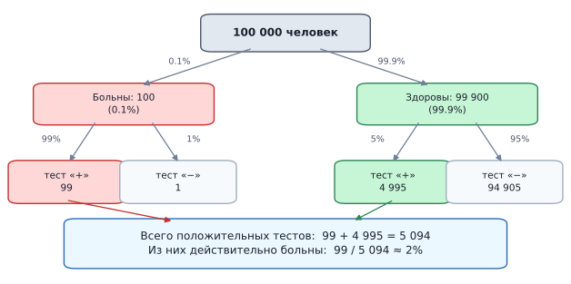
Тот же расчёт «по головам» на 100 000 человек. Больны всего 100 из них, и тест находит 99. Здоровых же 99 900, и 5% из них — почти 5000 человек — получают ложноположительный результат. Среди всех 5094 положительных тестов настоящих больных лишь 99, то есть около 2%. Ложноположительных просто в 50 раз больше, потому что здоровых в тысячу раз больше. Формула убеждает не всех, поэтому пересчитаем то же самое людьми вместо дробей. Возьмём 100 000 человек:
- больны: $100\,000 \cdot 0.001 = 100$ человек. Тест поймает $100 \cdot 0.99 = 99$ из них;
- здоровы: $99\,900$ человек. Тест ошибочно объявит больными $99\,900 \cdot 0.05 = 4995$;
- всего положительных тестов: $99 + 4995 = 5094$;
- из них действительно больны: $99 / 5094 \approx 0.019$, то есть 2%.
Вся «магия» в диспропорции: здоровых в тысячу раз больше, поэтому даже редкая ошибка на них даёт огромное число ложных срабатываний. Такой пересчёт в натуральные частоты — лучший способ объяснить теорему Байеса кому угодно, включая себя.
Ловушка, в которую попадают почти все, называется ошибкой базовой ставки (base rate fallacy): человек смотрит на точность теста (99%) и игнорирует редкость события (0.1%).
Практический вывод для ML: на несбалансированных данных высокая точность детектора почти ничего не значит. Антифрод-модель с 99% recall и 1% ложноположительных при доле мошенничества 0.1% выдаст на каждую настоящую находку около десяти ложных тревог. Именно поэтому в таких задачах смотрят на precision и PR-AUC, а не на accuracy.
Естественная реакция врача — назначить повторный тест. Байес это описывает прямо: апостериорная вероятность первого шага (0.019) становится априорной для второго.
$$P(\text{болен} \mid ++) = \frac{0.99 \cdot 0.019}{0.99 \cdot 0.019 + 0.05 \cdot 0.981} \approx 0.28$$
Уже 28% вместо 2%. Так работает последовательное накопление свидетельств: каждое новое наблюдение сдвигает мнение, отталкиваясь от текущего, а не от исходного. Важное условие — тесты должны быть независимыми; повтор того же теста в тех же условиях часто повторяет и ошибку.
Ещё одна типовая путаница: $P(B \mid A)$ («как часто такое свидетельство бывает у больных») читают как $P(A \mid B)$ («насколько вероятно, что больной»). Это та же ошибка прокурора, только теперь у нас есть инструмент её исправить.
Правило простое: если в задаче даны проценты «среди больных / среди виновных / среди дефектных», а спрашивают «какова вероятность, что болен / виновен / дефектен», — это задача на Байеса, и без априорной вероятности она не решается.
- Наивный байесовский классификатор вычисляет $P(\text{класс} \mid \mathbf{x}) \propto P(\mathbf{x} \mid \text{класс}) \cdot P(\text{класс})$ и выбирает класс с максимальной апостериорной вероятностью. Знаменатель не считают вовсе — он одинаков для всех классов и на сравнение не влияет.
- Байесовская оптимизация гиперпараметров: априорное представление о поверхности качества обновляется после каждого запуска обучения.
- Байесовский вывод и MAP-оценка: регуляризация $L_2$ соответствует нормальному априорному распределению весов, $L_1$ — распределению Лапласа. То есть регуляризация — это формализованное «мнение до данных».
- Спам-фильтры: классический случай, где априорная доля спама и правдоподобия слов перемножаются по формуле Байеса.
Запишите формулу Байеса и объясните каждый её элемент.
$P(A \mid B) = \dfrac{P(B \mid A) \cdot P(A)}{P(B)}$. $P(A)$ — априорная вероятность (мнение до наблюдения), $P(B \mid A)$ — правдоподобие (насколько свидетельство характерно для $A$), $P(B)$ — нормировочная константа, $P(A \mid B)$ — апостериорная вероятность (мнение после наблюдения).
Зачем нужна теорема Байеса, если есть определение условной вероятности?
Она позволяет перевернуть условие: посчитать $P(A \mid B)$, когда известно $P(B \mid A)$. На практике почти всегда доступна именно «обратная» величина: точность теста среди больных, частота признака среди спама.
Запишите формулу полной вероятности и объясните, зачем она нужна.
Если $H_1, \ldots, H_n$ — полная группа событий, то $P(B) = \sum_i P(B \mid H_i)P(H_i)$; для двух гипотез $P(B) = P(B\mid A)P(A) + P(B\mid\overline A)P(\overline A)$. Ею вычисляют знаменатель формулы Байеса: перебираем все способы, которыми может случиться $B$, и складываем их вклады.
Что означает «уточнение вероятности» по теореме Байеса?
Переход от априорной оценки $P(A)$ к апостериорной $P(A \mid B)$ с учётом нового наблюдения. Множитель пересчёта $\frac{P(B\mid A)}{P(B)}$ увеличивает вероятность, если свидетельство характерно именно для $A$, и уменьшает в противном случае.
Почему положительный тест на редкую болезнь не означает высокую вероятность болезни?
Из-за малой априорной вероятности здоровых в популяции на порядки больше, и даже редкие ложноположительные срабатывания дают больше случаев, чем истинные. При заболеваемости 0.1% и 5% ложноположительных $P(\text{болен} \mid +) \approx 2\%$.
Что такое ошибка базовой ставки и как она проявляется в ML?
Игнорирование априорной частоты события при интерпретации точного теста. В ML это переоценка детектора на несбалансированных данных: при доле позитивов 0.1% даже 1% ложноположительных даёт много ложных тревог на каждую находку, поэтому смотрят на precision и PR-AUC, а не на accuracy.
Как учитывать несколько последовательных наблюдений?
Апостериорная вероятность после первого наблюдения становится априорной для второго. Так, после двух положительных независимых тестов вероятность болезни в примере вырастает с 2% до примерно 28%. Наблюдения при этом должны быть независимыми.
Как теорема Байеса используется в наивном байесовском классификаторе?
Классификатор оценивает $P(\text{класс} \mid \mathbf{x}) \propto P(\mathbf{x} \mid \text{класс}) \cdot P(\text{класс})$ и выбирает класс с максимальной апостериорной вероятностью. Знаменатель $P(\mathbf{x})$ не вычисляют — он одинаков для всех классов.
Как связаны байесовский подход и регуляризация?
MAP-оценка максимизирует произведение правдоподобия и априорного распределения весов. Нормальный априор даёт $L_2$-регуляризацию, априор Лапласа — $L_1$. То есть регуляризация формализует «мнение о весах до просмотра данных».
-
Генеральная совокупность
Генеральная совокупность (population) — это все возможные существующие на свете объекты, которые нам интересно рассматривать в контексте задачи.
На практике мы почти никогда не можем собрать данные обо всех объектах: это либо физически невозможно, либо слишком дорого, либо часть объектов просто ещё не существует. Именно поэтому из генеральной совокупности берут выборку и по ней делают выводы.
Последний пункт особенно важен для ML. Модель обучается на прошлых данных, а работать будет на будущих пользователях, которых в момент обучения ещё нет. Генеральная совокупность включает и их — а значит, она принципиально недоступна целиком, а не только «дорого стоит».
Одни и те же данные могут относиться к разным генеральным совокупностям — всё зависит от того, на какой вопрос вы отвечаете.
Собрали данные о клиентах московского отделения банка. Если вопрос «какова средняя сумма кредита в этом отделении» — данные и есть вся генеральная совокупность. Если вопрос «какова средняя сумма кредита по стране» — это уже выборка, причём заведомо перекошенная.
Сначала формулируется вопрос, потом определяется генеральная совокупность, и только потом оценивается, годится ли имеющаяся выборка. Обратный порядок — источник большинства ошибок в анализе.
Задача: предсказать вероятность покупки для пользователей интернет-магазина. Генеральная совокупность — все пользователи, которые когда-либо зайдут на сайт (в том числе будущие). Очевидно, таких данных у нас нет целиком — только прошлые визиты.
Задача: изучить средний рост призывников в России. Генеральная совокупность — все мужчины призывного возраста в стране. Для анализа берут случайную выборку из нескольких тысяч человек.
В обоих случаях мы строим модель или делаем статистические выводы на основе выборки, надеясь, что она хорошо представляет генеральную совокупность.
Чтобы не путаться в обозначениях, полезно держать в голове различие:
- Параметр — характеристика генеральной совокупности: истинное среднее $\mu$, истинная дисперсия $\sigma^2$, истинная доля $p$. Это фиксированные, но неизвестные числа.
- Статистика (оценка) — то, что мы считаем по выборке: $\bar{x}$, $s^2$, $\hat{p}$. Это случайные величины: другая выборка даст другие числа.
Греческие буквы традиционно обозначают параметры, латинские и «шляпки» — оценки. Вся статистика — это наука о том, что можно сказать о первых, имея на руках только вторые.
Истинный средний рост в стране (параметр) — ровно 175.0 см, но мы его не знаем.
- Выборка №1 из 100 человек даёт $\bar{x} = 174.2$ см.
- Выборка №2 из 100 человек даёт $\bar{x} = 176.1$ см.
- Выборка №3 даёт $175.5$ см.
Ни одна не равна истине, и это нормально. Именно разброс таких оценок описывают доверительные интервалы, и именно он уменьшается с ростом объёма выборки — как $1/\sqrt{n}$.
Ключевая мысль, которую стоит усвоить раз и навсегда: увеличение объёма нерепрезентативной выборки не помогает. Оно лишь делает уверенным неверный ответ.
Хрестоматийный пример — опрос 1936 года: журнал Literary Digest опросил 2.4 миллиона человек и предсказал победу Лэндона на выборах в США. Победил Рузвельт. Опрос проводился по спискам автовладельцев и телефонных абонентов — в разгар Великой депрессии это были заведомо более обеспеченные люди. Гэллап с выборкой в 50 тысяч, но правильно составленной, дал верный прогноз.
В ML это выглядит так: модель, обученная на десяти миллионах логов одного региона, будет уверенно ошибаться в другом регионе.
Способ отбора и определяет, будет ли выборка репрезентативной:
- Простая случайная — каждый объект имеет равный шанс попасть в выборку. Идеал, к которому стремятся.
- Стратифицированная — совокупность делят на группы (страты: регионы, возрастные когорты, классы), из каждой берут пропорционально. Аналог
StratifiedKFoldв ML, обязателен при дисбалансе классов. - Кластерная — случайно выбирают целые группы (школы, магазины) и обследуют их целиком. Дешевле, но точность ниже.
- Удобная (convenience sampling) — берут то, что доступно. Дёшево и почти всегда даёт смещение; именно так появляется большинство некорректных выводов.
Отдельный вид смещения — когда в выборку попадают только «выжившие» объекты, а исчезнувшие невидимы.
Классика: во Вторую мировую войну инженеры анализировали пробоины на вернувшихся самолётах и хотели усилить броню там, где дырок больше. Абрахам Вальд возразил: усиливать надо места без пробоин — самолёты с попаданиями туда просто не вернулись, и в выборке их нет.
В ML это встречается постоянно: модель оттока, обученная на текущих клиентах; кредитный скоринг, обученный только на одобренных заявках (по отклонённым мы не знаем, вернули бы они кредит). Вопрос «каких объектов в моих данных не может быть в принципе?» стоит задавать до начала обучения.
Что такое генеральная совокупность?
Все возможные объекты, которые интересуют нас в контексте задачи, включая будущие. На практике изучить её целиком почти всегда невозможно — либо дорого, либо часть объектов ещё не существует.
Почему на практике работают с выборкой, а не с генеральной совокупностью?
Полное обследование физически невозможно или неоправданно дорого, а будущих объектов (новых пользователей, новых транзакций) в данных быть не может по определению. Поэтому по выборке оценивают параметры совокупности.
Чем параметр отличается от статистики (оценки)?
Параметр ($\mu$, $\sigma^2$, $p$) — фиксированная, но неизвестная характеристика генеральной совокупности. Статистика ($\bar{x}$, $s^2$, $\hat p$) считается по выборке и является случайной величиной: другая выборка даст другое значение.
Зависит ли определение генеральной совокупности от имеющихся данных?
Нет, она задаётся вопросом исследования. Одни и те же данные могут быть полной совокупностью для одного вопроса и смещённой выборкой для другого. Сначала формулируется вопрос, потом определяется совокупность.
В чём состоит ключевое требование к выборке?
Репрезентативность — выборка должна отражать всё разнообразие генеральной совокупности, включая редкие случаи. Нерепрезентативная выборка ведёт к систематическому смещению (sampling bias).
Помогает ли увеличение объёма выборки справиться со смещением?
Нет. Больший объём уменьшает случайную погрешность, но систематическое смещение остаётся: результат становится лишь увереннее неверным. Классический пример — опрос Literary Digest 1936 года с 2.4 млн респондентов, давший неверный прогноз выборов.
Какие способы отбора выборки существуют?
Простая случайная (все объекты равновероятны), стратифицированная (пропорционально по группам), кластерная (случайно выбираются целые группы) и удобная (берётся доступное) — последняя почти всегда порождает смещение.
Что такое survivorship bias и как он проявляется в ML?
Смещение из-за того, что в выборку попадают только «выжившие» объекты. Примеры: модель оттока, обученная на действующих клиентах; кредитный скоринг, обученный только на одобренных заявках, где исходы отклонённых неизвестны.
-
Выборка
Выборка — это подмножество генеральной совокупности, которое мы используем для анализа. Обычно выборку обозначают за $X$, а её размер — за $n$.
Если совсем простыми словами: это та часть мира, которую мы реально смогли увидеть и по которой пытаемся судить обо всём остальном.
Выборка может быть репрезентативной или нерепрезентативной.
- Репрезентативная — она хорошо представляет генеральную совокупность, можем брать её для анализа и моделирования.
- Нерепрезентативная выборка плохо отражает свойства генеральной совокупности.
Часто изучение всей генеральной совокупности невозможно или слишком дорого, поэтому рассматривают выборки. Хорошая новость в том, что точность оценки зависит от размера выборки, а не от размера совокупности.
Это неочевидно, но именно поэтому опрос 1500 человек одинаково хорошо описывает и город на миллион, и страну на сто миллионов. Погрешность падает как $1/\sqrt{n}$ — от объёма выборки, а не от доли населения в ней.
Если обучающая выборка нерепрезентативна, модель будет плохо работать на реальных данных — возникает смещение выборки (sampling bias). Классические примеры:
- Модель предсказания кредитного рейтинга, обученная только на клиентах одного региона, работает хуже в других.
- Модель распознавания лиц, обученная на фотографиях с хорошим освещением, плохо работает в темноте.
Хорошая выборка должна отражать всё разнообразие генеральной совокупности, включая редкие случаи. Иначе модель просто не увидит их при обучении и не научится с ними работать.
Пусть генеральная совокупность — все жители города. Для изучения средней зарплаты выбирается случайная выборка из 1000 человек. По этой выборке оценивают среднюю зарплату и делают выводы о всей генеральной совокупности.
Различие между ними — самое важное в теме.
- Случайная погрешность возникает из-за того, что выборка конечна. Разные выборки дают разные оценки, но они «пляшут» вокруг истинного значения. Лечится увеличением $n$: погрешность падает как $1/\sqrt{n}$.
- Систематическая погрешность (смещение) возникает из-за неправильного способа отбора. Оценка сдвинута в одну сторону — и остаётся сдвинутой сколько бы данных вы ни добавили.
Метафора: случайная погрешность — это дрожащая рука стрелка, систематическая — сбитый прицел. Стрелять больше имеет смысл только в первом случае.
- Selection bias — систематически неверный отбор: опрос об удобстве мобильного приложения, проведённый внутри приложения, не увидит тех, кто им не пользуется.
- Survivorship bias — в данных только «выжившие»: модель оттока на действующих клиентах, скоринг на одобренных заявках.
- Non-response bias — отвечают не все, и неответившие отличаются: на опрос об удовлетворённости откликаются в основном очень довольные и очень раздражённые.
- Временной сдвиг — данные собраны в один период, применяются в другой: модель, обученная на допандемийных данных.
- Дисбаланс редких классов — редкие случаи (мошенничество, брак) в выборке почти не представлены, и модель учится их игнорировать.
В машинном обучении понятие расщепляется дальше: имеющиеся данные сами делятся на обучающую, валидационную и тестовую части.
Логика та же: тестовая выборка должна быть репрезентативной относительно будущих данных, иначе оценка качества окажется завышенной. Отсюда практические правила:
- разбиение обычно случайное, но при дисбалансе классов — стратифицированное;
- для временных рядов деление только по времени: обучаемся на прошлом, тестируемся на будущем, иначе происходит утечка;
- если в данных есть группы (несколько записей на одного пользователя), разбивать надо по группам, а не по строкам — иначе один и тот же пользователь окажется и в train, и в test.
Большой объём успокаивает, но ничего не гарантирует. Миллион логов из одного региона хуже описывает страну, чем десять тысяч логов, собранных по всем регионам пропорционально.
Практическая проверка перед обучением: сравните распределения ключевых признаков в вашей выборке и в том потоке, на котором модель будет работать. Если они расходятся — это уже data drift на старте, и никакая модель его не исправит.
Что такое выборка и как она обозначается?
Подмножество генеральной совокупности, используемое для анализа; обозначается $X$, её размер — $n$. Это та часть данных, которую мы реально наблюдаем и по которой судим обо всей совокупности.
Чем репрезентативная выборка отличается от нерепрезентативной?
Репрезентативная хорошо отражает свойства генеральной совокупности. Нерепрезентативная систематически искажает их, приводя к ошибочным выводам и плохой обобщающей способности модели.
От чего зависит точность оценки — от размера выборки или от размера совокупности?
От размера выборки: погрешность убывает как $1/\sqrt{n}$. Поэтому опрос 1500 человек одинаково информативен и для города, и для страны — доля охваченного населения роли не играет.
Чем случайная погрешность отличается от систематической?
Случайная возникает из-за конечности выборки, «пляшет» вокруг истины и уменьшается с ростом $n$. Систематическая (смещение) вызвана неправильным отбором, сдвигает оценку в одну сторону и увеличением объёма не лечится.
Что такое sampling bias и как он влияет на ML-модель?
Систематическое искажение состава выборки. Модель выучивает свойства искажённой выборки, а не реального мира: скоринг, обученный на клиентах одного региона, ошибается в других; распознавание лиц по светлым фото не работает в темноте.
Назовите основные виды смещения выборки.
Selection bias (неверный способ отбора), survivorship bias (только «выжившие» объекты), non-response bias (отвечают не все и не случайно), временной сдвиг (данные из другого периода) и недопредставленность редких классов.
Какие правила разбиения на train/val/test следуют из требования репрезентативности?
Стратифицированное разбиение при дисбалансе классов; для временных рядов — деление строго по времени (обучение на прошлом, тест на будущем); при наличии групп (несколько записей на пользователя) — разбиение по группам, чтобы избежать утечки.
Что важнее — объём выборки или её качество?
Качество. Большой объём уменьшает лишь случайную погрешность; при неверном отборе он делает ошибочный вывод более уверенным. Перед обучением стоит сравнить распределения признаков в выборке и в целевом потоке данных.
-
Выборочное среднее
Выборочное среднее — это сумма всех значений в выборке, делённая на количество значений:
$$\bar{x} = \frac{1}{n}\sum_{i=1}^n x_i$$
Обозначается «икс с чертой». Это оценка истинного среднего $\mu$ генеральной совокупности по имеющимся данным.
Различие в обозначениях не косметическое:
- $\mu$ — математическое ожидание, истинное среднее всей генеральной совокупности. Число фиксированное, но неизвестное.
- $\bar{x}$ — выборочное среднее, посчитанное по нашим $n$ наблюдениям. Число известное, но случайное: другая выборка даст другое значение.
По закону больших чисел $\bar{x} \to \mu$ при $n \to \infty$. То есть с ростом данных оценка приближается к истине, но при конечном $n$ они всегда чуть-чуть расходятся.
Пусть у нас есть выборка роста людей:
$$[170, 172, 173, 174, 175].$$
Тогда среднее:
$$\bar{x} = \frac{1}{5}(170 + 172 + 173 + 174 + 175) = 172.8$$
Выборочное среднее — это центр масс данных: если поставить точки на числовую ось и подвесить получившуюся конструкцию, она уравновесится ровно в $\bar{x}$.
Формально это выражается свойством: сумма отклонений от среднего всегда равна нулю,
$$\sum_{i=1}^n (x_i - \bar{x}) = 0$$
Отклонения влево и вправо в точности компенсируют друг друга. Отсюда, кстати, видно, почему в дисперсии отклонения приходится возводить в квадрат: без этого они просто сократились бы.
Среднее — это то число $c$, которое минимизирует суммарный квадрат отклонений:
$$\bar{x} = \arg\min_c \sum_{i=1}^n (x_i - c)^2$$
Иными словами, если бы вас заставили заменить всю выборку одним числом и штрафовали за квадрат ошибки, оптимальным ответом было бы среднее.
Это прямая связь с ML: константная модель, минимизирующая MSE, предсказывает именно среднее — и именно поэтому среднее является базовым baseline в регрессии. Если бы штрафовали за модуль ошибки, оптимумом была бы медиана.
Один аномально большой (или маленький) элемент может значительно сдвинуть среднее, не отражая реальную картину данных. Причина в самой формуле: каждое значение входит в сумму со своим полным весом, независимо от того, насколько оно типично.
Именно поэтому при анализе данных с выбросами часто предпочитают медиану.
Зарплаты в компании из 10 человек: $[30, 35, 37, 38, 40, 40, 42, 45, 48, 500]$ (тыс. руб./мес.).
$$\bar{x} = \frac{30+35+37+38+40+40+42+45+48+500}{10} = 85.5 \text{ тыс.}$$
Среднее — 85.5 тыс. руб., хотя $9$ из $10$ сотрудников получают менее $50$ тыс. Один выброс (CEO с зарплатой 500 тыс.) полностью исказил картину.
Медиана той же выборки равна 40 тыс. — она описывает реальность честно. Правило: если среднее сильно больше медианы, у распределения тяжёлый правый хвост, и одно среднее показывать нельзя.
Когда выбросы есть, но среднее всё-таки нужно, используют «подрезанные» версии:
- Усечённое среднее (trimmed mean) — отбрасывают по $k\%$ самых больших и самых маленьких значений и усредняют остальное. Именно так считают оценки в фигурном катании и гимнастике.
- Винзоризованное среднее — экстремальные значения не выбрасывают, а заменяют ближайшими «нормальными».
- Медиана — предельный случай усечения, отбрасывающий всё, кроме центра.
Ещё один вариант — сначала честно разобраться с выбросом: ошибка ли это в данных (лишний ноль в зарплате) или реальное наблюдение. Удалять выбросы «потому что портят статистику» — плохая практика.
Если наблюдения имеют разный «вес», простое среднее даёт неправильный ответ. Формула:
$$\bar{x}_w = \frac{\sum_i w_i x_i}{\sum_i w_i}$$
Пример ошибки: в филиале A конверсия 10% при 100 посетителях, в филиале B — 2% при 10 000. Среднее арифметическое двух процентов даёт 6%, что абсурдно: реальная общая конверсия равна $(10 + 200)/10\,100 \approx 2.1\%$. Проценты и доли нельзя усреднять напрямую — только через взвешивание по знаменателю.
- Стандартизация признаков: $x_{\text{norm}} = \dfrac{x - \bar{x}}{\sigma}$. После неё признак имеет нулевое среднее, что улучшает работу градиентного спуска и алгоритмов на расстояниях.
- Заполнение пропусков средним значением признака (
SimpleImputer(strategy="mean")) — самый простой способ, но на скошенных данных лучше медиана. - Baseline в регрессии: константное предсказание среднего — то, что должна побить любая модель. $R^2 = 0$ соответствует ровно этому предсказанию.
- Батчевые статистики: BatchNorm нормирует активации на среднее и дисперсию по батчу.
- Усреднение в ансамблях: бэггинг усредняет предсказания моделей, снижая дисперсию.
Как вычисляется выборочное среднее?
$\bar{x} = \dfrac{1}{n}\sum_{i=1}^n x_i$ — сумма всех значений, делённая на их количество.
Чем выборочное среднее $\bar{x}$ отличается от математического ожидания $\mu$?
$\mu$ — истинное, но неизвестное среднее генеральной совокупности; $\bar{x}$ — его оценка по выборке, случайная величина, меняющаяся от выборки к выборке. По закону больших чисел $\bar{x} \to \mu$ при росте $n$.
Каков геометрический смысл среднего?
Это центр масс данных: сумма отклонений от него равна нулю, $\sum_i (x_i - \bar{x}) = 0$. Отклонения влево и вправо взаимно компенсируются.
В каком смысле среднее — «наилучшее» одно число для описания выборки?
Оно минимизирует сумму квадратов отклонений: $\bar{x} = \arg\min_c \sum_i (x_i - c)^2$. Поэтому константная модель, минимизирующая MSE, предсказывает среднее; при минимизации MAE оптимумом была бы медиана.
Почему выборочное среднее чувствительно к выбросам?
Каждое значение входит в сумму с полным весом. Один CEO с зарплатой 500 тыс. поднимает среднее по компании с 40 до 85.5 тыс., хотя девять из десяти сотрудников получают меньше 50 тыс.
Какую альтернативу среднему используют при наличии выбросов?
Медиану — она определяется порядком элементов, а не их значениями. Промежуточные варианты — усечённое (trimmed) и винзоризованное среднее, отбрасывающие или ограничивающие крайние значения.
О чём говорит большое расхождение между средним и медианой?
О сильной асимметрии распределения. Если среднее заметно больше медианы, у данных тяжёлый правый хвост (доходы, время сессий); если меньше — левый.
Почему нельзя усреднять проценты напрямую?
Потому что они посчитаны от разных знаменателей и имеют разный вес. Нужно взвешенное среднее $\bar{x}_w = \frac{\sum_i w_i x_i}{\sum_i w_i}$: конверсии 10% на 100 визитах и 2% на 10 000 дают в сумме около 2.1%, а не 6%.
Для чего выборочное среднее используется в ML?
Для стандартизации признаков, заполнения пропусков, в качестве baseline-предсказания в регрессии, в нормализации активаций (BatchNorm) и при усреднении предсказаний в ансамблях.
-
Выборочная дисперсия
Выборочная дисперсия:
$$s^2 = \textcolor{red}{\frac{1}{n}}\sum_{i=1}^n (x_i - \bar{x})^2$$
Исправленная выборочная дисперсия (несмещённая оценка дисперсии):
$$s^2 = \textcolor{red}{\frac{1}{n-1}}\sum_{i=1}^n (x_i - \bar{x})^2$$
Обе формулы делают одно и то же: берут отклонение каждого наблюдения от выборочного среднего, возводят в квадрат (чтобы плюсы и минусы не сократились) и усредняют. Получается «типичный квадрат промаха».
Разница между формулами — только в знаменателе: $n$ или $n-1$. И весь сюжет этого вопроса в том, почему во втором случае делят на меньшее число, тем самым увеличивая ответ.
Когда мы оцениваем среднее $\bar{x}$ по самой же выборке, мы «теряем» одну степень свободы: данные как бы притянуты к своему собственному среднему, и разброс относительно $\bar{x}$ систематически занижен.
Формально: истинная дисперсия считается как разброс вокруг истинного $\mu$, но $\mu$ нам неизвестно, и вместо него подставляется $\bar{x}$. А $\bar{x}$ — это то самое число, которое минимизирует сумму квадратов отклонений на данной выборке. Значит, любое другое число, включая настоящее $\mu$, дало бы сумму больше. Мы гарантированно занижаем разброс — деление на $n-1$ (поправка Бесселя) компенсирует это смещение.
Пусть у нас 5 наблюдений и мы уже посчитали их среднее. Сколько из них можно менять свободно? Только четыре: пятое однозначно определяется остальными, потому что сумма отклонений обязана равняться нулю.
То есть в квадратах отклонений содержится информация не о $n$, а о $n-1$ независимых числах. Логично и делить на $n-1$. Общее правило: степеней свободы = число наблюдений минус число оценённых по ним параметров. Оценили одно среднее — потеряли одну степень.
Простая интуиция: если в выборке всего один элемент, дисперсия по формуле с $n$ равна нулю. Но это бессмысленно — мы ничего не знаем о разбросе генеральной совокупности, а формула уверенно заявляет «разброса нет».
Формула с $n-1$ в этом случае не определена (деление на ноль), и это честнее: из одного наблюдения оценить дисперсию невозможно. Хорошая формула должна отказываться отвечать там, где ответа нет.
Выборка: $[2, 4, 4, 6]$, $\bar{x} = 4$.
$$s^2_{\text{смещ.}} = \frac{(2-4)^2 + (4-4)^2 + (4-4)^2 + (6-4)^2}{4} = \frac{4+0+0+4}{4} = 2$$
$$s^2_{\text{несмещ.}} = \frac{4+0+0+4}{3} \approx 2.67$$
Разница здесь заметная — 33%, потому что $n$ всего 4. При $n = 100$ разница составила бы уже 1%, а при $n = 10\,000$ — сотые доли процента. Спор про $n$ или $n-1$ важен только на маленьких выборках.
Библиотеки по умолчанию ведут себя по-разному, и это регулярный источник расхождений в цифрах:
np.var(x)— смещённая оценка (делит на $n$);np.var(x, ddof=1)— несмещённая ($n-1$);pd.Series(x).var()— несмещённая по умолчанию (pandas и numpy расходятся!);statistics.variance(x)в стандартной библиотеке — несмещённая;np.std/pd.Series.std— то же самое различие под корнем.
Параметр
ddofрасшифровывается как delta degrees of freedom: знаменатель равен $n - \text{ddof}$.Тонкий момент, который любят на собеседованиях: даже если $s^2$ — несмещённая оценка $\sigma^2$, величина $s = \sqrt{s^2}$ не является несмещённой оценкой $\sigma$. Причина в том, что корень — нелинейная функция, а по неравенству Йенсена $\mathbb{E}\sqrt{s^2} \le \sqrt{\mathbb{E}s^2}$, то есть СКО систематически чуть занижается.
На практике этим пренебрегают: смещение мало и быстро убывает с ростом $n$. Но знать о нём стоит — это хорошая иллюстрация того, что несмещённость не «переносится» через нелинейные преобразования.
- Данные — это выборка, и вы хотите сказать что-то о генеральной совокупности $\to$ берите $n-1$. Это подавляющее большинство статистических задач: доверительные интервалы, $t$-тесты, оценка разброса в популяции.
- Данные — это вся совокупность (все сотрудники компании, все транзакции за день) или дисперсия нужна лишь как техническая величина внутри алгоритма $\to$ $n$ вполне годится. Например,
StandardScalerв sklearn использует именно $n$: там дисперсия нужна для масштабирования, а не для вывода о популяции.
Запишите формулы смещённой и несмещённой выборочной дисперсии.
Смещённая: $s^2 = \dfrac{1}{n}\sum_{i=1}^n (x_i - \bar{x})^2$. Несмещённая (исправленная): $s^2 = \dfrac{1}{n-1}\sum_{i=1}^n (x_i - \bar{x})^2$.
Почему несмещённая оценка делится на $n-1$, а не на $n$?
Потому что вместо неизвестного истинного среднего $\mu$ подставляется $\bar{x}$ — число, минимизирующее сумму квадратов отклонений именно на этой выборке. Разброс относительно него систематически занижен, и поправка Бесселя компенсирует потерю одной степени свободы.
Что такое степени свободы в этом контексте?
Число независимых величин, оставшихся после оценки параметров. Зная выборочное среднее, свободно менять можно лишь $n-1$ наблюдение — последнее определяется условием $\sum_i (x_i - \bar{x}) = 0$.
Почему из одного наблюдения нельзя оценить дисперсию?
Формула с $n$ дала бы ноль, что заведомо неверно, а несмещённая формула при $n=1$ не определена. Это отражает реальность: по одному значению судить о разбросе невозможно.
Насколько велика разница между двумя формулами?
Она равна множителю $\frac{n}{n-1}$: при $n=4$ это 33%, при $n=100$ — 1%, при $n=10\,000$ — доли процента. На больших выборках выбор практически не влияет на результат.
Как в Python получить смещённую и несмещённую дисперсию?
np.var(x)— смещённая ($n$),np.var(x, ddof=1)— несмещённая. В pandas наоборот:pd.Series(x).var()по умолчанию несмещённая. Параметрddofзадаёт знаменатель $n - \text{ddof}$.Является ли $s = \sqrt{s^2}$ несмещённой оценкой $\sigma$?
Нет. Корень — нелинейная функция, и по неравенству Йенсена оценка СКО оказывается систематически заниженной, даже если оценка дисперсии несмещённая. На практике этим смещением пренебрегают.
В каких случаях уместно делить на $n$?
Когда данные представляют всю генеральную совокупность или когда дисперсия нужна как техническая величина внутри алгоритма — например, в
StandardScaler, где она используется для масштабирования признаков, а не для вывода о популяции.
-
Мода
Мода — это значение, которое встречается наиболее часто в выборке.
Если совсем простыми словами: это самый популярный ответ. Не «средний», не «центральный», а именно тот, который повторяется чаще других.
Пусть у нас есть выборка роста людей:
$$[170, 172, 172, 173, 173, 173, 174, 175].$$
Значение 173 встречается три раза, 172 — два раза, остальные по одному. Тогда мода:
$$\text{mode}(x) = 173$$
Для непрерывной случайной величины «самое частое значение» посчитать напрямую нельзя: точных повторов там не бывает, каждое измерение уникально. Модой в этом случае называют точку максимума плотности — вершину «холма» на графике распределения.
На практике это делают через гистограмму (мода — центр самого высокого столбика) или через KDE-оценку плотности. Результат зависит от числа бинов, поэтому мода для непрерывных данных — величина довольно шаткая.
Распределения бывают как унимодальные, так и мультимодальные.
- Унимодальные — у них одна мода, один «горб».
- Мультимодальные — бимодальные, тримодальные и так далее: несколько локальных пиков.
Отдельный вырожденный случай — когда все значения встречаются по разу: формально моды нет вовсе (или модой считают всю выборку).
Мода — единственная из трёх основных мер центральной тенденции, которая:
- Применима к категориальным данным — там, где значения нельзя ни сложить, ни упорядочить. Самый популярный товар, самый частый поисковый запрос, наиболее распространённый браузер: среднее и медиану тут посчитать невозможно, а моду — легко.
- Может быть не единственной — если два значения встречаются одинаково часто, распределение называется бимодальным.
- Абсолютно устойчива к выбросам — добавление одного экстремального значения не меняет её вообще, ведь оно встретилось всего раз.

Скошенное вправо распределение: мода — вершина холма, медиана правее неё, а среднее ещё правее, потому что его тянет длинный правый хвост. Для симметричного распределения все три меры совпали бы в одной точке. На скошенном вправо распределении (доходы, длительности, цены) выполняется
$$\text{мода} < \text{медиана} < \text{среднее}$$
На скошенном влево — наоборот. У симметричного распределения все три совпадают.
Отсюда быстрый практический приём: сравните среднее и медиану, и вы сразу поймёте, есть ли перекос, даже не рисуя гистограмму.
Бимодальные данные — сигнал, что в выборке, возможно, смешаны две разные группы. Это важно при EDA (разведочном анализе данных): вместо одной модели может потребоваться отдельная модель для каждой группы.
Опаснее другое: среднее и медиана в такой ситуации попадают во впадину между горбами — в область, где наблюдений как раз меньше всего. То есть «типичное значение» оказывается наименее типичным. Одно число здесь описывает данные не просто плохо, а вводит в заблуждение.
Представьте, что вы строите модель для предсказания времени доставки заказа. Гистограмма времён оказалась бимодальной — пики у 30 минут и у 90 минут, а среднее равно 60.
Вероятнее всего, данные смешивают два типа доставки: курьерская (быстро) и почта (медленно). Заказов, доставляемых ровно за 60 минут, почти нет — а именно это число выдаст обученная на всей выборке константная модель.
Правильный ход — найти признак, разделяющий группы (тип доставки, город, вес заказа), и либо добавить его в модель, либо обучать две отдельные регрессии.
При малом числе наблюдений мода скачет от выборки к выборке: достаточно одного лишнего повтора, чтобы «самое частое» значение сменилось. Среднее и медиана ведут себя гораздо стабильнее.
Кроме того, для непрерывных данных результат зависит от способа биннинга: 20 бинов и 50 бинов могут дать разные моды. Поэтому моду редко используют как основную характеристику числовых данных — её ниша это категориальные признаки и диагностика формы распределения.
- Заполнение пропусков в категориальных признаках:
SimpleImputer(strategy="most_frequent")подставляет моду — для категорий это единственный разумный вариант. - Baseline в классификации: предсказывать самый частый класс — минимальная планка, которую должна побить модель. На несбалансированных данных такой baseline даёт высокую accuracy, что как раз и показывает бесполезность этой метрики.
- Ансамбли: голосование большинством в случайном лесе — это выбор моды среди предсказаний деревьев.
- EDA: бимодальность гистограммы — повод искать скрытый сегментирующий признак или переходить к кластеризации (например, GMM, который явно моделирует смесь распределений).
Что такое мода выборки?
Значение, которое встречается наиболее часто. Например, для $[170, 172, 172, 173, 173, 173, 174]$ мода равна 173.
Как определяется мода для непрерывной случайной величины?
Как точка максимума плотности распределения — вершина «холма». На практике оценивается по гистограмме или KDE, поэтому результат зависит от выбранного числа бинов.
Что такое унимодальное и мультимодальное распределение?
Унимодальное имеет один пик. Мультимодальное — несколько (бимодальное — два, тримодальное — три). Если все значения уникальны, моды формально нет.
Чем мода отличается от среднего и медианы и когда она особенно полезна?
Мода — единственная из трёх мер, применимая к категориальным данным (самый популярный товар, самый частый запрос), где сложение и упорядочивание невозможны. Она также полностью устойчива к выбросам.
Как соотносятся мода, медиана и среднее у скошенного распределения?
При правой скошенности $\text{мода} < \text{медиана} < \text{среднее}$, при левой — наоборот, у симметричного все три совпадают. Сравнение среднего и медианы — быстрый способ обнаружить перекос.
Что означает бимодальность данных при разведочном анализе?
Что в выборке, скорее всего, смешаны две разные группы. Опасно то, что среднее и медиана попадают во впадину между пиками — в область, где наблюдений меньше всего, и «типичное значение» оказывается нетипичным.
Как бимодальность влияет на выбор модели?
Стоит найти признак, разделяющий группы, и либо добавить его в модель, либо обучать отдельные модели для каждой группы. Альтернатива — кластеризация, например смесь гауссиан (GMM), явно моделирующая несколько компонент.
Почему моду редко используют для числовых данных?
Она неустойчива: на малых выборках меняется от одного лишнего повтора, а для непрерывных величин зависит от способа биннинга. Её основная ниша — категориальные признаки и диагностика формы распределения.
Где мода применяется в ML?
Для заполнения пропусков в категориальных признаках (
most_frequent), как baseline «предсказывать самый частый класс», при голосовании большинством в ансамблях и при разведочном анализе для обнаружения смеси групп.
-
Медиана
Медиана — это значение, которое делит упорядоченный список данных на две равные половины. Если количество значений нечётное, медиана — это значение, находящееся посередине; если чётное — среднее двух центральных значений:
$$\text{median}(x) = \begin{cases} x_{\frac{n+1}{2}}, & n \text{ нечётное}, \\[4pt] \dfrac{1}{2}\left(x_{\frac{n}{2}} + x_{\frac{n}{2}+1}\right), & n \text{ чётное}, \end{cases}$$
где $x_1 \le x_2 \le \dots \le x_n$ — отсортированная выборка.
Самая частая ошибка при ручном счёте: взять «средний по счёту» элемент из неотсортированного списка. Медиана определена только для упорядоченных данных — без сортировки вы получите произвольное число.
Отсюда же следует, что медиану нельзя вычислить для категорий без естественного порядка: у «красный, зелёный, синий» медианы не существует. А вот для порядковых данных (оценка от 1 до 5, уровень образования) — вполне.
Пусть у нас есть выборка роста людей:
$$[170, 172, 173, 174, 175].$$
Здесь $n = 5$ — нечётное, берём третий по счёту элемент:
$$\text{median}(x) = 173$$
Если бы наблюдений было четыре — $[170, 172, 173, 174]$ — медиана равнялась бы $\frac{172 + 173}{2} = 172.5$. Обратите внимание: такого значения в данных нет, и это нормально.
Медиана менее чувствительна к выбросам, чем среднее, и причина в самой конструкции: она зависит только от порядка элементов, а не от их конкретных величин.
Возьмите выборку $[1, 2, 3, 4, 5]$ — медиана 3. Замените максимум на миллион: $[1, 2, 3, 4, 1\,000\,000]$ — медиана всё ещё 3. Среднее при этом взлетает с 3 до 200 002.
Формально это описывают понятием точки слома (breakdown point): медиана выдерживает порчу до 50% данных, среднее ломается от одного-единственного значения.
Например, можно услышать, что за год средняя зарплата населения выросла на 10%, но это может быть не так, если в выборке есть выбросы, которые сильно влияют на среднее значение (например, несколько десятков миллиардеров, заработавших за год много денег). Медиана же едва ли сдвинется, так как она не чувствительна к выбросам.
Именно поэтому в статистике доходов, цен на жильё и времени отклика сервисов официально публикуют медианные, а не средние значения: они описывают положение типичного человека, а не «среднюю температуру по больнице».
Иллюстрация из предыдущего вопроса показывает всё сразу: у скошенного вправо распределения мода — вершина холма, медиана правее неё, а среднее ещё правее, потому что его тянет длинный хвост. Порядок $\text{мода} < \text{медиана} < \text{среднее}$ и есть признак правой скошенности.
У медианы есть та же «оптимизационная» трактовка, что и у среднего, но с другой функцией штрафа:
$$\text{median}(x) = \arg\min_c \sum_{i=1}^n |x_i - c|$$
То есть медиана — это одно число, минимизирующее сумму модулей отклонений, тогда как среднее минимизирует сумму квадратов.
Отсюда прямое следствие для ML: модель, обученная на MAE, стремится предсказывать условную медиану, а модель на MSE — условное среднее. Это не стилистическая разница, а разные ответы: на данных с выбросами MSE-модель будет систематически завышать прогноз, догоняя хвост.
Медиана — это ровно квантиль уровня 0.5, то есть второй квартиль $Q_2$: 50% данных лежит слева, 50% справа.
Обобщение этой идеи даёт квантильную регрессию: минимизируя несимметричный аналог модуля (pinball loss), модель предсказывает не медиану, а, например, 90-й перцентиль. Это стандартный инструмент, когда нужен не «типичный» прогноз, а верхняя граница — время доставки, при котором уложимся в 90% случаев.
Робастность не бесплатна:
- Медиана «выбрасывает» информацию. Она не знает, насколько далеко находятся крайние значения, — а иногда именно это и важно.
- Она менее эффективна. На действительно нормальных данных выборочная медиана оценивает центр примерно в 1.57 раза «шумнее» среднего: чтобы добиться той же точности, понадобится в полтора раза больше наблюдений.
- Она не аддитивна. Медиана суммы не равна сумме медиан, тогда как со средним это работает всегда. Поэтому агрегировать медианы по подгруппам нельзя — общую медиану нужно считать по всем данным сразу. Это реальная проблема в распределённых системах: медиану сложно считать инкрементально, для больших потоков используют приближённые алгоритмы (t-digest, HdrHistogram).
- Заполнение пропусков в скошенных числовых признаках:
SimpleImputer(strategy="median")предпочтительнее среднего для доходов, цен, длительностей. - RobustScaler масштабирует признаки по медиане и межквартильному размаху вместо среднего и СКО — на данных с выбросами работает заметно лучше.
- MAE и Huber loss как функции потерь дают устойчивые к выбросам регрессии.
- Мониторинг сервисов: латентность описывают медианой (p50) и высокими перцентилями (p95, p99), а не средним — среднее время ответа скрывает редкие катастрофические задержки.
- DBSCAN, k-medoids и другие робастные алгоритмы опираются на медианные, а не средние характеристики.
Что такое медиана и как она вычисляется для нечётного и чётного числа элементов?
Значение, делящее упорядоченные данные пополам. При нечётном $n$ — центральный элемент $x_{(n+1)/2}$, при чётном — среднее двух центральных. Данные обязательно должны быть отсортированы.
Почему медиана устойчива к выбросам, а среднее нет?
Медиана зависит только от порядка элементов, а не от их значений: замена максимума на миллион её не сдвинет. Среднее же включает каждое значение с полным весом, поэтому один выброс искажает его целиком.
Что такое точка слома (breakdown point) и чему она равна для медианы и среднего?
Доля данных, которую можно испортить, не разрушив оценку. У медианы она равна 50%, у среднего — 0%: достаточно одного экстремального значения.
В каком смысле медиана оптимальна?
Она минимизирует сумму модулей отклонений: $\text{median}(x) = \arg\min_c \sum_i |x_i - c|$. Среднее минимизирует сумму квадратов. Отсюда модель на MAE предсказывает условную медиану, а модель на MSE — условное среднее.
Как медиана связана с квантилями?
Это квантиль уровня 0.5 (второй квартиль $Q_2$): половина данных лежит слева, половина справа. Обобщение — квантильная регрессия, предсказывающая произвольный перцентиль, например p90.
В каком реальном примере разница между средним и медианой особенно показательна?
Зарплаты: при одном сотруднике с окладом 500 тыс. среднее по компании может быть 85.5 тыс., тогда как медиана — около 40 тыс., что и отражает положение большинства.
Когда предпочтительнее медиана, а когда среднее?
Медиана — при выбросах и сильной асимметрии (доходы, цены на жильё, время выполнения задачи). Среднее — на симметричных данных без выбросов: там оно точнее (эффективнее) и обладает удобным свойством аддитивности.
Какие недостатки есть у медианы?
Она игнорирует величину крайних значений, менее эффективна на нормальных данных (шумит примерно в 1.57 раза сильнее среднего) и неаддитивна: медиану нельзя агрегировать по подгруппам и тяжело считать инкрементально в потоке.
Где медиана используется в ML и мониторинге?
Для заполнения пропусков в скошенных признаках, в
RobustScaler, в функциях потерь MAE и Huber, при мониторинге латентности сервисов (p50, p95, p99) и в робастных алгоритмах вроде k-medoids.
-
Bootstrap
Bootstrap — это метод статистического моделирования, который используется для оценки распределения статистик (например, среднего, медианы, коэффициента корреляции) путём повторной выборки с возвращением из исходных данных. Это позволяет оценить характеристики распределения — дисперсию статистики, доверительные интервалы, $p$-value — без предположений о виде исходного распределения.
Мы посчитали по выборке медиану, и она равна 4.2. Вопрос: насколько это число надёжно? Если бы мы собрали другую выборку, получили бы 4.2 или 3.1?
Честный ответ требует знать распределение статистики — то, как она разбросана от выборки к выборке. Для среднего такая формула есть (стандартная ошибка $s/\sqrt{n}$), а для медианы, для 90-го перцентиля, для отношения двух метрик, для AUC — формул либо нет, либо они верны лишь при жёстких предположениях.
Bootstrap решает это грубой силой: раз новых выборок взять негде, сделаем вид, что имеющаяся выборка — это и есть генеральная совокупность, и будем брать выборки из неё.
Мы создаём множество случайных выборок из исходных данных с возвращением (то есть каждый раз выбираем случайный элемент и возвращаем его обратно в набор), затем вычисляем статистику интереса для каждой такой выборки и строим распределение этих статистик.
Это позволяет оценить разброс статистики, построить доверительные интервалы и провести статистические тесты, не предполагая, что данные нормальны или подчиняются какому-то конкретному закону.
- Случайно выбрать из исходных данных $n$ наблюдений с возвращением (столько же, сколько было в исходной выборке).
- Посчитать интересующую статистику (например, среднее или медиану).
- Повторить много раз (обычно 1 000–10 000) и получить эмпирическое распределение статистики.
- По этому распределению взять нужные квантили или посчитать стандартное отклонение — это и будут доверительный интервал и стандартная ошибка.
Из одной выборки размера $n$ раз за разом вытягиваем $n$ элементов с возвращением: одни точки попадают по нескольку раз (столбики), другие не попадают вовсе. У каждой псевдовыборки своё среднее $\bar x^*$; после сотен повторов из них складывается гистограмма, а её разброс — оценка стандартной ошибки среднего. Оба условия принципиальны.
- С возвращением. Без возвращения выборка из $n$ элементов совпала бы с исходной с точностью до перестановки — никакого разнообразия. Возвращение приводит к тому, что один элемент попадает 2–3 раза, а другой не попадает вовсе; именно это и имитирует случайность сбора новых данных.
- Ровно $n$ элементов. Разброс статистики зависит от объёма выборки. Взяв 50 вместо 100, мы получили бы разброс, соответствующий выборке вдвое меньшей, — и переоценили бы неопределённость.
Кстати, в каждую бутстрап-выборку в среднем попадает примерно $1 - 1/e \approx 63.2\%$ уникальных элементов исходной. Оставшиеся ~36.8% образуют out-of-bag множество, которое в случайном лесе используют как бесплатную валидацию.
Есть выборка из 100 оценок качества сервиса $[3, 5, 4, 4, 5, 2, \dots]$. Хотим оценить доверительный интервал для медианы.
- Делаем 10 000 бутстрап-выборок: каждый раз случайно выбираем 100 оценок с возвращением.
- Для каждой выборки считаем медиану.
- Берём 2.5-й и 97.5-й перцентили получившегося распределения медиан — это и есть 95% доверительный интервал.
Ключевое: «с возвращением» означает, что один и тот же элемент может попасть в выборку несколько раз, а другой — не попасть вовсе. Это создаёт разнообразие в бутстрап-выборках.
Bootstrap реализуется в несколько строк — в этом его вторая сильная сторона после универсальности.
import numpy as np rng = np.random.default_rng(42) data = np.array([...]) # исходная выборка, n элементов n = len(data) stats = [ np.median(rng.choice(data, size=n, replace=True)) # replace=True — с возвращением for _ in range(10_000) ] lo, hi = np.percentile(stats, [2.5, 97.5]) print(f"95% ДИ для медианы: [{lo:.2f}, {hi:.2f}]")Логика такая: настоящее распределение статистики возникает из-за того, что выборки берутся из генеральной совокупности. Мы её не знаем, но у нас есть выборка — а по закону больших чисел эмпирическое распределение выборки приближает истинное тем лучше, чем больше $n$.
Значит, разброс статистики при выборе из эмпирического распределения приближает её разброс при выборе из истинного. Формально это называется plug-in принцип: неизвестное распределение заменяется его выборочной оценкой.
Ключевое ограничение отсюда же: bootstrap воспроизводит только ту информацию, которая уже есть в выборке. Он не создаёт новых данных и не спасает от плохой выборки.
Метод универсален, но не всесилен:
- Маленькая выборка. При $n = 10$ эмпирическое распределение слишком грубо приближает истинное, и доверительные интервалы будут заметно уже, чем должны быть.
- Экстремальные статистики. Для максимума, минимума и очень высоких перцентилей bootstrap работает плохо: максимум бутстрап-выборки не может превысить максимум исходной, поэтому распределение оценки обрезано сверху.
- Зависимые наблюдения. Обычный bootstrap предполагает независимость. Для временных рядов он разрушает автокорреляцию — нужен блочный bootstrap, переставляющий целые куски ряда. Для сгруппированных данных (несколько записей на пользователя) ресемплить надо пользователей, а не строки.
- Смещённая выборка. Если данные собраны криво, bootstrap честно воспроизведёт кривизну и даст уверенный интервал вокруг неверного значения.
То, что описано выше, — percentile bootstrap: просто берём 2.5-й и 97.5-й перцентили. Он самый популярный и понятный, но при асимметрии слегка смещён. Существуют улучшения:
- basic (pivotal) — отражает распределение относительно исходной оценки;
- BCa (bias-corrected and accelerated) — корректирует смещение и асимметрию, точнее всего, но требует больше вычислений;
- studentized — самый точный при наличии оценки дисперсии, но самый дорогой.
В
scipy.stats.bootstrapдоступныmethod="percentile","basic"и"BCa". Для повседневных задач percentile обычно достаточно.- Оценка стабильности метрик модели: бутстрапируя тестовую выборку, получаем доверительный интервал для accuracy или ROC-AUC. Это отвечает на вопрос «модель A действительно лучше модели B или разница в пределах шума?» — куда честнее, чем сравнение двух чисел.
- Бэггинг и случайный лес: каждое дерево обучается на своей бутстрап-выборке из обучающих данных. Разнообразие выборок делает деревья разными, а усреднение снижает дисперсию ансамбля.
- Out-of-bag оценка: те ~37% объектов, что не попали в бутстрап-выборку дерева, служат для него валидацией — бесплатная альтернатива кросс-валидации.
- Оценка неопределённости предсказаний: обучив модель на многих бутстрап-выборках, получаем разброс предсказаний для каждого объекта.
- A/B-тесты со сложными метриками (ARPU, средний чек, отношение метрик), где аналитических формул нет.
Что такое bootstrap и в чём его основная идея?
Метод оценки распределения статистики путём многократной повторной выборки с возвращением из имеющихся данных. Исходная выборка рассматривается как приближение генеральной совокупности, и из неё «добывают» новые псевдовыборки.
Какую проблему решает bootstrap?
Позволяет оценить неопределённость статистики, для которой нет аналитической формулы (медиана, перцентиль, AUC, отношение метрик) или формула требует предположений о распределении, которые не выполняются.
Что означает «выборка с возвращением» и почему это важно?
Каждый элемент выбирается случайно и возвращается обратно, поэтому может попасть несколько раз или не попасть вовсе. Без возвращения выборка совпала бы с исходной, и никакого разброса статистик не возникло бы.
Почему бутстрап-выборка должна содержать ровно $n$ элементов?
Разброс статистики зависит от объёма выборки. При меньшем размере мы оценили бы неопределённость для более короткой выборки и завысили бы её.
Какая доля уникальных объектов попадает в бутстрап-выборку?
В среднем $1 - 1/e \approx 63.2\%$. Оставшиеся ~36.8% образуют out-of-bag множество, используемое в случайном лесе для валидации без отдельной отложенной выборки.
Как с помощью bootstrap построить 95% доверительный интервал для медианы?
Сделать 10 000 бутстрап-выборок по $n$ элементов, для каждой вычислить медиану, затем взять 2.5-й и 97.5-й перцентили полученного распределения медиан.
Почему bootstrap работает?
По plug-in принципу: эмпирическое распределение выборки приближает истинное распределение тем точнее, чем больше $n$. Поэтому разброс статистики при ресемплинге из выборки приближает её разброс при выборе новых выборок из совокупности.
В каких случаях bootstrap даёт неверный результат?
На очень малых выборках, для экстремальных статистик (максимум, высокие перцентили), при зависимых наблюдениях (временные ряды, сгруппированные данные — нужен блочный или групповой ресемплинг) и при систематически смещённой исходной выборке.
Как bootstrap применяется в случайном лесе?
Каждое дерево обучается на собственной бутстрап-выборке, что делает деревья разнообразными. Усреднение их предсказаний снижает дисперсию ансамбля, а не попавшие в выборку объекты дают out-of-bag оценку качества.
-
Статистические гипотезы
Статистическая гипотеза — это предположение о распределении данных или значениях параметров. Мы проводим тест, чтобы либо её отвергнуть, либо не отвергнуть.
- $H_0$ — нулевая гипотеза
- $H_1$ — альтернативная гипотеза
Нулевая гипотеза $H_0$ — это «скептическая» позиция: ничего интересного не происходит, различий нет, эффекта нет. Альтернативная $H_1$ — то, что мы хотим доказать.
Аналогия с судом: $H_0$ — «подсудимый невиновен», это позиция по умолчанию. $H_1$ — «виновен». Обвинение обязано предъявить достаточно улик; если улик мало, суд не объявляет человека невиновным — он просто не признаёт его виновным. Ровно так же устроен статистический тест.
Отсюда важная асимметрия: $H_0$ и $H_1$ не равноправны. По умолчанию мы стоим на стороне $H_0$ и отказываемся от неё только под давлением данных.
Статистический тест никогда не доказывает $H_1$. Он лишь говорит: «данные настолько сильно противоречат $H_0$, что $H_0$ правдоподобно отвергнуть».
Формально мы считаем $p$-value — вероятность получить такие (или более экстремальные) данные при условии, что $H_0$ верна. Если $p$-value мало (обычно $< 0.05$) — отвергаем $H_0$.
$$p\text{-value} = P(\text{данные такие же или более экстремальные} \mid H_0 \text{ верна})$$
Разберём по частям:
- «более экстремальные» — дальше от того, что предсказывает $H_0$, в сторону $H_1$;
- «при условии, что $H_0$ верна» — мы предполагаем отсутствие эффекта и смотрим, насколько удивительны наши данные в этом мире;
- маленькое $p$ означает: «если эффекта нет, такие данные — редкость». Либо нам крупно не повезло, либо эффект всё-таки есть.
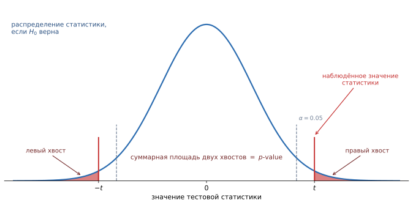
Распределение тестовой статистики в предположении, что $H_0$ верна. Красным отмечено наблюдённое значение, закрашены хвосты — все исходы «такие же или более экстремальные». Их суммарная площадь и есть $p$-value: доля миров без эффекта, в которых данные выглядели бы не менее удивительно, чем наши. Пунктиром показана критическая граница уровня $\alpha = 0.05$. Это самая распространённая ошибка в интерпретации, и она возникает из уже знакомой путаницы условий:
- $p$-value $= P(\text{данные} \mid H_0)$ — то, что мы считаем;
- $P(H_0 \mid \text{данные})$ — то, что нам на самом деле хотелось бы знать.
Это разные величины, и одна в другую без априорных вероятностей не пересчитывается — нужна теорема Байеса. Фраза «$p = 0.03$, значит вероятность того, что эффекта нет, равна 3%» — неверна.
Правильная формулировка: «если бы эффекта не было, данные настолько или более экстремальные встречались бы в 3% случаев».
Синяя кривая — распределение статистики, если $H_0$ верна; розовая линия — наблюдённое значение. Площадь хвоста правее него и есть $p$-value: чем дальше наблюдение от центра, тем меньше $p$. Пунктир — критическая граница уровня $\alpha=0.05$: правее неё $p<\alpha$ и $H_0$ отвергается. В двустороннем тесте считаются оба хвоста, и $p$ удваивается. - $H_0$: средний рост = 170 см;
- $H_1$: средний рост $\neq$ 170 см.
Если по результатам теста вероятность наблюдаемого значения при условии, что $H_0$ верна, оказывается слишком малой (например, меньше 0.05), гипотеза $H_0$ отвергается.
- $H_0$: новая кнопка на сайте не меняет конверсию.
- $H_1$: конверсия изменилась.
Проводим A/B-тест, собираем данные. Если $p\text{-value} < 0.05$ — отвергаем $H_0$ и заявляем, что кнопка работает. Если $p\text{-value} > 0.05$ — нет оснований утверждать, что кнопка изменила поведение пользователей.
Большое $p$-value означает лишь недостаток улик, а не доказательство невиновности. Причины могут быть две: эффекта действительно нет либо выборка слишком мала, чтобы его разглядеть.
Различить их помогает мощность теста и доверительный интервал. Если 95% ДИ для разницы конверсий равен $[-0.1\%, +0.2\%]$ — мы уверенно исключили большой эффект. Если он равен $[-5\%, +6\%]$ — мы попросту ничего не выяснили, хотя $p$-value в обоих случаях может быть больше 0.05.
$\alpha$ — заранее выбранный порог, ниже которого $p$-value считается достаточным основанием отвергнуть $H_0$. Обычно $\alpha = 0.05$.
Содержательно $\alpha$ — это доля ложных срабатываний, которую мы готовы терпеть: при $\alpha = 0.05$ в 5% случаев, когда эффекта на самом деле нет, мы всё равно объявим его найденным. Подробнее — в вопросе про ошибки первого и второго рода.
Число 0.05 — не закон природы, а исторически сложившаяся конвенция. В физике элементарных частиц требуют «пять сигм» ($p \approx 3\cdot10^{-7}$), в медицине часто 0.01, в быстрых продуктовых экспериментах иногда допускают 0.1.
Все параметры теста — уровень $\alpha$, сторонность альтернативы, размер выборки, метрика — фиксируются до сбора данных. Иначе тест перестаёт контролировать вероятность ошибки.
Практики, которые это нарушают, объединяют названием p-hacking:
- peeking — подглядывание в результаты и остановка теста в момент, когда $p$ случайно провалился ниже 0.05;
- перебор метрик — проверили 20 метрик, одна «выстрелила» (при $\alpha = 0.05$ это ожидаемо даже при полном отсутствии эффекта);
- перебор сегментов — эффекта в целом нет, но «нашёлся у женщин 25–34 из Москвы с Android»;
- смена альтернативы на одностороннюю после просмотра данных.
Если проверять много гипотез сразу, вероятность хотя бы одного ложного срабатывания растёт лавинообразно: при 20 независимых тестах с $\alpha = 0.05$ она равна $1 - 0.95^{20} \approx 64\%$.
Лечится это поправками:
- Бонферрони — самая простая и консервативная: сравнивать $p$ с $\alpha/m$, где $m$ — число гипотез.
- Холм — Бонферрони — та же гарантия, но мощнее.
- Бенджамини — Хохберг — контролирует не вероятность хоть одной ошибки, а ожидаемую долю ложных открытий (FDR). Стандарт там, где гипотез тысячи: биоинформатика, отбор признаков, скрининг сегментов.
На выборке в миллион пользователей значимым станет прирост конверсии на 0.001% — математически эффект есть, бизнесу он не нужен.
Поэтому вместе с $p$-value всегда смотрят на размер эффекта и его доверительный интервал: не «есть ли разница», а «насколько она велика и окупает ли внедрение». Хорошая практика — заранее объявить минимальный интересный эффект (MDE, minimum detectable effect) и от него считать нужный размер выборки.
- A/B-тесты при выкатке новой модели: проверяем, действительно ли новая версия лучше старой на живом трафике.
- Сравнение моделей: тест Уилкоксона или парный $t$-тест по фолдам кросс-валидации отвечает, значима ли разница метрик или это шум разбиения.
- Отбор признаков: $\chi^2$-тест, ANOVA и mutual information проверяют связь признака с целевой переменной — здесь особенно важна поправка на множественные сравнения.
- Мониторинг дрейфа данных: тест Колмогорова — Смирнова сравнивает распределение признака сейчас и в обучающей выборке; $H_0$ — «распределение не изменилось».
Что такое нулевая и альтернативная гипотезы?
$H_0$ — «скептическая» позиция: эффекта нет, различий нет; принимается по умолчанию. $H_1$ — то, что мы хотим доказать. Гипотезы неравноправны: от $H_0$ отказываются только при достаточно сильных данных, как от презумпции невиновности в суде.
Что такое $p$-value и как его правильно интерпретировать?
Вероятность получить такие же или более экстремальные данные при условии, что $H_0$ верна. Малое $p$ означает, что в мире без эффекта наши данные были бы редкостью, — это довод против $H_0$.
Почему $p$-value — не вероятность того, что $H_0$ верна?
Потому что это $P(\text{данные} \mid H_0)$, а не $P(H_0 \mid \text{данные})$. Пересчёт одного в другое требует априорных вероятностей и теоремы Байеса; смешение этих величин — классическая ошибка прокурора.
Что означает «тест не доказывает $H_1$»?
Тест лишь показывает, что данные сильно противоречат $H_0$. Даже при $p < 0.05$ остаётся вероятность $\alpha$ ошибочно отвергнуть верную нулевую гипотезу.
Что означает результат «$p > 0.05$»?
Только то, что улик недостаточно. Это может значить как отсутствие эффекта, так и нехватку данных для его обнаружения. Различить помогает доверительный интервал для размера эффекта и расчёт мощности теста.
Что такое уровень значимости $\alpha$ и как его выбирают?
Заранее фиксированный порог для $p$-value, равный допустимой доле ложных срабатываний. Обычно 0.05, но в физике частиц требуют $\approx 3\cdot10^{-7}$, в медицине часто 0.01. Выбирается до сбора данных исходя из цены ошибки.
Что такое p-hacking и какие его формы встречаются чаще всего?
Подгонка процедуры под получение значимого результата: подглядывание и досрочная остановка теста, перебор метрик и сегментов, смена альтернативы на одностороннюю после просмотра данных. Всё это разрушает контроль вероятности ошибки первого рода.
В чём проблема множественных сравнений и как её решают?
При $m$ независимых тестах вероятность хотя бы одного ложного срабатывания равна $1-(1-\alpha)^m$ — уже 64% при $m=20$ и $\alpha=0.05$. Решается поправками Бонферрони, Холма или контролем FDR по Бенджамини — Хохбергу.
Чем статистическая значимость отличается от практической?
Статистическая значимость говорит лишь о том, что эффект отличим от нуля; на большой выборке значимым становится и ничтожный прирост. Практическая значимость — величина эффекта и его экономический смысл, поэтому заранее задают минимальный интересный эффект (MDE).
-
Доверительные интервалы
Когда мы работаем с выборкой, мы почти никогда не знаем точные параметры генеральной совокупности (например, её настоящее среднее значение). Вместо этого мы оцениваем эти параметры и строим интервал, в котором они, скорее всего, находятся. Такой интервал называется доверительным интервалом (confidence interval, ДИ).
Если говорить простыми словами: это разброс, в котором с определённой уверенностью (например, 95%) находится настоящий параметр.
Точечная оценка вида «средний рост 172 см» скрывает главное — насколько она надёжна. Интервал «от 170 до 174 см» честно сообщает и оценку, и её точность. Поэтому в статистике результат почти никогда не сообщают одним числом.
У нас есть выборка роста людей из Санкт-Петербурга. Средний рост получился 172 см. Мы не знаем точный средний рост всех петербуржцев, но можем сказать: с 95% уверенностью он находится между 170 и 174 см.
Здесь спрятана тонкость, на которой спотыкаются практически все.
Фраза «с вероятностью 95% истинное среднее лежит в интервале $[170, 174]$» строго говоря неверна. Истинное среднее — фиксированное число, оно либо лежит в этом интервале, либо нет; никакой вероятности тут нет. Случаен не параметр, а интервал: он построен по выборке, и на другой выборке получился бы другим.
Правильная формулировка: если много раз повторить эксперимент и каждый раз строить 95% доверительный интервал, то примерно 95% таких интервалов накроют истинное значение.
В обиходе, конечно, говорят короче — важно понимать, что за этим стоит.
Шестьдесят выборок по $n=20$ из одной совокупности, для каждой свой 95%-интервал. Интервалы разной длины и в разных местах, но подавляющее большинство накрывает истинное $\mu$; промах отмечен красным. Уровень 95% — это именно доля попаданий при многократном повторении опыта, а не вероятность для одного конкретного интервала. Стандартная конструкция — «оценка плюс-минус запас»:
$$\bar{x} \pm t_{1-\alpha/2,\, n-1} \cdot \frac{s}{\sqrt{n}}$$
- $\bar{x}$ — выборочное среднее, центр интервала;
- $\dfrac{s}{\sqrt{n}}$ — стандартная ошибка среднего (SE): насколько $\bar{x}$ гуляет от выборки к выборке;
- $t_{1-\alpha/2,\,n-1}$ — критическое значение распределения Стьюдента, «сколько стандартных ошибок отложить». Для 95% и большой выборки это примерно 1.96, для малых $n$ — больше.
Ключевая величина здесь — стандартная ошибка $s/\sqrt{n}$. Не путайте её с $s$: стандартное отклонение $s$ описывает разброс отдельных наблюдений, а SE — разброс среднего.
Корень возникает из центральной предельной теоремы: дисперсия среднего $n$ независимых величин равна $\sigma^2/n$, значит стандартное отклонение равно $\sigma/\sqrt{n}$.
Практическое следствие, которое стоит запомнить: чтобы сузить интервал вдвое, нужно в четыре раза больше данных. Это закон убывающей отдачи, определяющий стоимость любого эксперимента.
Опросили $n = 100$ человек, средний чек $\bar{x} = 1200$ руб., $s = 500$ руб.
- Стандартная ошибка: $SE = 500/\sqrt{100} = 50$ руб.
- Множитель для 95%: примерно 1.96.
- Интервал: $1200 \pm 1.96 \cdot 50 = 1200 \pm 98$, то есть $[1102, 1298]$.
Хотим интервал вдвое уже, $\pm 49$ руб.? Понадобится $n = 400$ человек. Хотим $\pm 25$? Уже 1600.
Из формулы прямо видны три рычага:
- Больше $n$ $\to$ интервал уже (как $1/\sqrt{n}$). Единственный рычаг, полностью в нашей власти.
- Больше разброс $s$ $\to$ интервал шире. Иногда его удаётся уменьшить — например, стратификацией или учётом ковариат (метод CUPED в A/B-тестах).
- Выше уровень доверия $\to$ интервал шире. 99% ДИ шире 95%: чтобы промахиваться реже, приходится заявлять более широкий диапазон. Предельный случай — 100% ДИ равен всей числовой оси и бесполезен.
Доверительный интервал и тест гипотезы — две стороны одной медали:
Значение $\mu_0$ лежит в 95% доверительном интервале ⟺ гипотеза $H_0: \mu = \mu_0$ не отвергается на уровне $\alpha = 0.05$.
Поэтому, если 95% ДИ для разницы конверсий не содержит нуля, разница значима. Но интервал сообщает больше, чем $p$-value: он показывает не только «есть ли эффект», но и насколько он велик. Именно поэтому современная практика требует публиковать интервалы, а не одни лишь $p$-значения.
Односторонние и двусторонние альтернативы
Проверяем отличия «в любую сторону». Пример:
$$H_0:\ \mu=\mu_0,\quad H_1:\ \mu\ne\mu_0.$$
$p$-value — площадь в двух хвостах распределения статистики.
Проверяем изменение в заданную сторону:
$$H_0:\ \mu=\mu_0,\quad H_1:\ \mu>\mu_0\ \ (\text{или } \mu<\mu_0).$$
$p$-value — площадь только в одном хвосте.
- Если заранее важен знак эффекта и обратный эффект не имеет смысла — односторонний.
- Если нас интересует любой сдвиг от $\mu_0$ — двусторонний.
- Нельзя «переключаться» на односторонний после просмотра данных — это повышает риск ошибок.
Статистика для проверки гипотезы о среднем:
$$t=\frac{\bar X-\mu_0}{s/\sqrt{n}}$$
Для двустороннего теста сравниваем $|t|$ с квантилем и берём $p$-value из обоих хвостов; для одностороннего — из одного хвоста.
При том же $\alpha$ односторонний тест «мощнее»: весь бюджет ошибки уходит в один хвост, и порог достигается легче — $p$-value ровно вдвое меньше. Отсюда искушение выбрать его задним числом.
Именно поэтому в продуктовой аналитике почти всегда используют двусторонний тест: во-первых, ухудшение метрики нужно замечать не меньше, чем улучшение; во-вторых, так исключается соблазн подгонки. Односторонний уместен там, где обратный эффект физически невозможен или не влияет на решение.
Формула $\bar{x} \pm t \cdot s/\sqrt{n}$ работает для среднего. А для медианы, для 90-го перцентиля, для ROC-AUC, для отношения двух метрик аналитических формул либо нет, либо они требуют жёстких допущений.
Универсальное решение — bootstrap: много раз ресемплим выборку с возвращением, каждый раз считаем нужную статистику и берём 2.5-й и 97.5-й перцентили полученного распределения. Никаких предположений о нормальности не требуется.
Для доли (конверсии) есть свои формулы: обычный нормальный интервал Вальда плохо работает при малых $n$ и крайних значениях $p$ (может выйти за границы $[0,1]$), поэтому используют интервал Уилсона или Клоппера — Пирсона.
- Оценка качества модели: вместо «accuracy = 0.87» честнее сообщить «0.87 [0.84, 0.90]». Это сразу показывает, отличима ли модель от конкурента.
- Сравнение моделей: если доверительные интервалы метрик сильно пересекаются, разница вряд ли реальна.
- A/B-тесты: интервал для разницы метрик отвечает и на вопрос о значимости, и на вопрос о величине эффекта.
- Prediction intervals — родственное, но другое понятие: интервал не для параметра, а для будущего наблюдения. Он всегда шире, потому что включает не только неопределённость оценки, но и собственный разброс наблюдений. Путать их — распространённая ошибка.
Что такое доверительный интервал?
Интервал, построенный по выборке, который с заданным уровнем доверия (обычно 95%) накрывает истинный параметр генеральной совокупности. Он сообщает не только оценку, но и её точность.
Что на самом деле означает «95%»?
Не вероятность для конкретного интервала (параметр фиксирован, интервал уже построен), а долю успешных попаданий при многократном повторении эксперимента: примерно 95 из 100 построенных таким способом интервалов накроют истинное значение.
Как строится доверительный интервал для среднего?
$\bar{x} \pm t_{1-\alpha/2,\,n-1}\cdot \dfrac{s}{\sqrt{n}}$, где $s/\sqrt{n}$ — стандартная ошибка среднего, а $t$ — критическое значение распределения Стьюдента (≈1.96 для 95% и большой выборки).
Чем стандартная ошибка отличается от стандартного отклонения?
Стандартное отклонение $s$ описывает разброс отдельных наблюдений, стандартная ошибка $s/\sqrt{n}$ — разброс выборочного среднего от выборки к выборке. С ростом $n$ первая не меняется, вторая убывает.
Во сколько раз нужно увеличить выборку, чтобы сузить интервал вдвое?
В четыре раза: ширина пропорциональна $1/\sqrt{n}$. Это ключевой факт при планировании экспериментов — точность дорожает квадратично.
Что делает доверительный интервал шире?
Меньший объём выборки, больший разброс данных и более высокий уровень доверия. 99% интервал всегда шире 95%: чтобы промахиваться реже, приходится заявлять более широкий диапазон.
Как доверительный интервал связан с проверкой гипотез?
Значение $\mu_0$ попадает в 95% ДИ тогда и только тогда, когда гипотеза $H_0: \mu = \mu_0$ не отвергается при $\alpha = 0.05$. При этом интервал информативнее $p$-value: он показывает и наличие эффекта, и его величину.
Чем отличается двусторонняя альтернатива от односторонней?
Двусторонняя ($H_1: \mu \ne \mu_0$) проверяет отклонение в любую сторону, $p$-value берётся из двух хвостов. Односторонняя ($H_1: \mu > \mu_0$) — только в заданном направлении, $p$-value из одного хвоста и потому вдвое меньше.
Можно ли выбрать одностороннюю альтернативу после просмотра данных?
Нет — это повышает вероятность ошибки первого рода вдвое и является формой p-hacking. Сторонность теста фиксируется до сбора данных исходя из смысла задачи.
Как построить доверительный интервал для статистики, у которой нет аналитической формулы?
Бутстрапом: многократно ресемплить выборку с возвращением, считать статистику и взять 2.5-й и 97.5-й перцентили полученного распределения. Для долей применяют специальные интервалы — Уилсона или Клоппера — Пирсона.
-
Ошибки первого и второго рода
В контексте проверки статистических гипотез различают два типа ошибок:
- Ошибка первого рода — отвергается нулевая гипотеза $H_0$, хотя она на самом деле верна.
- Ошибка второго рода — не удаётся отвергнуть нулевую гипотезу $H_0$, хотя на самом деле верна альтернативная гипотеза $H_1$.
Две ошибки — это два способа ошибиться, и они противоположны по смыслу:
- Ошибка I рода — «увидеть то, чего нет». Пожарная сигнализация сработала, но пожара не было. Мы объявили об эффекте, которого в реальности не существует.
- Ошибка II рода — «не увидеть то, что есть». Пожар начался, а сигнализация промолчала. Эффект был, но мы его не заметили.
Верных решений тоже два: правильно промолчать (эффекта нет — и мы его не нашли) и правильно сработать (эффект есть — и мы его обнаружили).
Ошибки первого и второго рода возникают из-за случайности и ограниченного объёма данных. Приняты обозначения:
- $\alpha$ — вероятность ошибки первого рода (уровень значимости);
- $\beta$ — вероятность ошибки второго рода;
- $1 - \beta$ — мощность критерия: вероятность обнаружить эффект, если он действительно есть.
При планировании эксперимента исследователь выбирает допустимый уровень $\alpha$ (обычно 0.05), а затем стремится минимизировать $\beta$ — то есть увеличить мощность. Стандартный ориентир — мощность не ниже 0.8.
- Нулевая гипотеза $H_0$: пациент здоров.
- Альтернативная гипотеза $H_1$: пациент болен.
Если мы проведём тест, то можем получить:
- Ошибка первого рода: пациента ошибочно считают больным и назначают лечение (ложная тревога, False Positive, FP).
- Ошибка второго рода: пациента ошибочно считают здоровым и не лечат (упущенная болезнь, False Negative, FN).
$H_0$ верна $H_1$ верна Отвергаем $H_0$ Ошибка I рода (FP), вероятность $\alpha$ Верное решение, вероятность $1-\beta$ Не отвергаем $H_0$ Верное решение, вероятность $1-\alpha$ Ошибка II рода (FN), вероятность $\beta$ Обратите внимание: $\alpha$ и $\beta$ — вероятности в разных строках и в разных мирах. $\alpha$ считается в предположении, что $H_0$ верна, $\beta$ — в предположении, что верна $H_1$. Поэтому $\alpha + \beta$ не равно единице и складывать их бессмысленно.
Порог двигается — площади $\alpha$ (красная) и $\beta$ (оранжевая) перетекают друг в друга: уменьшить обе одновременно только порогом нельзя. В конце растёт расстояние между распределениями (больший эффект или большая выборка) — и только тогда обе ошибки падают вместе. Между ошибками первого и второго рода существует компромисс: уменьшая $\alpha$ (строже отвергаем $H_0$), мы увеличиваем $\beta$ (чаще пропускаем реальный эффект), и наоборот.
На картинке видно, почему: порог — это одна вертикальная линия, а площадей две. Двигая её, мы перекладываем ошибку из одной корзины в другую, но не устраняем.
Единственный способ уменьшить обе площади сразу — раздвинуть кривые или сделать их уже, а это значит собрать больше данных или уменьшить дисперсию. Именно поэтому расчёт размера выборки — не бюрократия, а единственный настоящий рычаг.
Мощность $1-\beta$ растёт, когда:
- больше размер выборки $n$ — кривые становятся уже, разделить их легче;
- больше истинный размер эффекта — кривые дальше друг от друга;
- меньше дисперсия данных — кривые уже (отсюда популярность методов снижения дисперсии вроде CUPED в A/B-тестах);
- выше $\alpha$ — но это лишь перекладывание ошибки, а не выигрыш.
Отсюда стандартная процедура планирования: фиксируем $\alpha = 0.05$, желаемую мощность 0.8 и минимальный интересный эффект (MDE) — и вычисляем необходимое $n$.
Стоимость двух ошибок почти никогда не одинакова, поэтому одинаковый для всех $\alpha = 0.05$ — не догма.
- Скрининг на онкологию: пропустить болезнь (FN) катастрофично, ложная тревога приводит лишь к дополнительному обследованию. Порог смещают в сторону чувствительности, соглашаясь на много ложноположительных.
- Приговор суда: осудить невиновного (FP) считается хуже, чем оправдать виновного. Отсюда «презумпция невиновности» и высокий стандарт доказательства.
- Антиспам: письмо от клиента в папке «Спам» (FP) хуже, чем одно пропущенное рекламное письмо (FN).
Вопрос «какая ошибка дороже?» надо задавать до эксперимента, а не после.
В классификации это ровно ложноположительные (FP) и ложноотрицательные (FN) срабатывания, и дилемма та же:
- Precision $= \frac{TP}{TP+FP}$ страдает от ошибок первого рода;
- Recall $= \frac{TP}{TP+FN}$ страдает от ошибок второго рода и в точности равен мощности теста;
- уровень значимости $\alpha$ — аналог порога классификации: сдвигая его, мы двигаемся вдоль ROC- или PR-кривой, обменивая одну ошибку на другую.
Собственно, ROC-кривая — это и есть график зависимости $1-\beta$ (TPR, мощность) от $\alpha$ (FPR) при всех возможных порогах.
Если позитивов всего 0.1%, то даже $\alpha = 1\%$ даёт десятикратное преобладание ложных тревог над настоящими находками — это уже знакомая ошибка базовой ставки.
Практический вывод: при сильном дисбалансе смотреть надо не на accuracy и не на ROC-AUC (он оптимистичен при редком классе), а на precision, recall и PR-AUC, и явно выбирать порог под стоимость каждой ошибки.
Что такое ошибка первого и второго рода?
Ошибка I рода — отклонение верной $H_0$, «увидеть то, чего нет» (ложная тревога, FP). Ошибка II рода — неотклонение ложной $H_0$, «не увидеть то, что есть» (пропуск эффекта, FN).
Что такое $\alpha$, $\beta$ и мощность критерия?
$\alpha$ — вероятность ошибки I рода (уровень значимости), $\beta$ — вероятность ошибки II рода, $1-\beta$ — мощность, то есть вероятность обнаружить эффект, если он есть. Стандартные ориентиры: $\alpha = 0.05$, мощность не ниже 0.8.
Почему $\alpha + \beta \ne 1$?
Потому что эти вероятности считаются в разных предположениях: $\alpha$ — при верной $H_0$, $\beta$ — при верной $H_1$. Это вероятности из разных строк таблицы исходов, и складывать их бессмысленно.
В чём состоит компромисс между двумя видами ошибок?
Порог принятия решения один, а контролируемых площадей две: сдвигая порог, мы уменьшаем одну ошибку за счёт другой. Одновременно уменьшить обе можно только увеличив выборку или снизив дисперсию данных.
От чего зависит мощность теста?
От размера выборки, величины истинного эффекта, дисперсии данных и выбранного $\alpha$. Первые три — реальные рычаги; увеличение $\alpha$ лишь перекладывает ошибку.
Как планируют размер выборки для эксперимента?
Фиксируют $\alpha$ (обычно 0.05), требуемую мощность (обычно 0.8) и минимальный интересный эффект (MDE), после чего вычисляют необходимое $n$. Без этого расчёта незначимый результат невозможно интерпретировать.
Как выбор между ошибками зависит от контекста?
От стоимости каждой. При скрининге на онкологию дороже пропуск болезни, поэтому порог смещают к чувствительности. В суде и в антиспаме дороже ложное срабатывание, поэтому стандарт доказательства выше.
Как ошибки первого и второго рода соотносятся с precision и recall?
Ошибка I рода (FP) снижает precision, ошибка II рода (FN) снижает recall; recall в точности равен мощности теста. Порог классификации играет роль $\alpha$, а ROC-кривая показывает зависимость мощности (TPR) от вероятности ложной тревоги (FPR).
Почему на несбалансированных данных ROC-AUC и accuracy вводят в заблуждение?
При редком позитивном классе даже малая доля ложных срабатываний по огромному числу негативов превышает число настоящих находок. Поэтому используют precision, recall и PR-AUC и выбирают порог исходя из стоимости ошибок.
-
Параметрические и непараметрические критерии
Параметрические критерии предполагают форму распределения (обычно нормальность) и оценивают параметры — например, $t$-критерий Стьюдента.
Непараметрические критерии не требуют конкретного распределения — например, критерий Манна — Уитни, критерий знаков, критерий Уилкоксона.
Слово «параметрический» звучит загадочно, но смысл прямой: критерий заранее предполагает, какой формы распределение данных, и работает с его параметрами ($\mu$, $\sigma$).
Аналогия: параметрический критерий — как ключ определённого размера. Если гайка подходит, он откручивает её быстро и надёжно. Непараметрический — как разводной ключ: подходит ко всему, но чуть менее удобен и требует больше усилий (то есть больше данных).
- Параметрические критерии делают предположение о виде распределения данных. Если данные действительно нормальны — такие критерии более мощные: лучше обнаруживают эффект при том же объёме выборки.
- Непараметрические критерии не требуют таких предположений. Они работают с рангами или знаками, а не с самими значениями. Платой за универсальность является несколько меньшая мощность.
Это ключевой механизм непараметрических методов, и его стоит понять на примере.
Есть данные: $[3, 5, 12, 900]$. Ранговое преобразование заменяет значения их порядковыми номерами: $[1, 2, 3, 4]$.
Что произошло: величина значений исчезла, остался только порядок. Значение 900 превратилось в «самое большое», и его экстремальность перестала влиять на расчёт.
Отсюда сразу все свойства непараметрических тестов:
- устойчивость к выбросам — выброс становится просто «последним в очереди»;
- работа с порядковыми шкалами — оценки «плохо / средне / хорошо» нельзя усреднять, но упорядочить можно;
- потеря части информации — а значит, и часть мощности: если разница между группами велика именно по величине, ранги её приглушают.
- Параметрические — мощнее при выполнении предпосылок; дают интерпретируемый размер эффекта («средний чек вырос на 120 руб.»).
- Непараметрические — устойчивее к выбросам, работают на порядковых шкалах и при малых выборках; отвечают на вопрос о сдвиге распределения, а не о разнице средних.
Допустим, нужно сравнить конверсии двух версий сайта:
- Если выборки большие и данные близки к нормальным — используем $t$-критерий (параметрический).
- Если данные сильно скошены, есть выбросы или выборки маленькие — лучше взять критерий Манна — Уитни (непараметрический): он сравнивает распределения по рангам, игнорируя выбросы.
Простое эмпирическое правило: при выборке $n > 30$ и симметричном распределении — параметрический. В остальных случаях — непараметрический. В A/B-тестах на практике чаще всего используют именно $t$-тест или его аналоги.
Задача Параметрический Непараметрический Сравнить 2 независимые группы $t$-тест для независимых выборок Манна — Уитни (Уилкоксона для рангов) Сравнить 2 связанные выборки (до/после) Парный $t$-тест Критерий знаковых рангов Уилкоксона Сравнить 3+ групп ANOVA Краскела — Уоллиса Оценить связь двух признаков Корреляция Пирсона Корреляция Спирмена или Кендалла Полезно знать эти пары наизусть: на собеседовании вопрос «а если данные ненормальные?» задают почти всегда.
Частое заблуждение: «$t$-тест требует, чтобы данные были нормально распределены». Точнее так: он требует нормальности выборочного среднего, а не самих наблюдений.
По центральной предельной теореме среднее становится примерно нормальным при достаточно большом $n$ независимо от формы исходных данных. Поэтому на выборке в тысячи наблюдений $t$-тест работает и на явно ненормальных данных — например, на бинарных конверсиях (нулях и единицах).
Реальные проблемы у $t$-теста другие: очень тяжёлые хвосты (тогда среднее само по себе плохая мера), сильные выбросы и по-настоящему маленькие выборки.
Соблазнительная схема «сначала проверим данные тестом Шапиро — Уилка, потом по результату выберем $t$-тест или Манна — Уитни» на практике вредна:
- на маленькой выборке тест на нормальность бессилен и почти всегда «разрешает» параметрический критерий — как раз там, где он рискованнее всего;
- на большой выборке он отвергает нормальность из-за ничтожных отклонений — как раз там, где благодаря ЦПТ $t$-тест уже безопасен;
- двухшаговая процедура сама по себе искажает итоговый уровень $\alpha$.
Практичнее решать по существу задачи: посмотреть на гистограмму, оценить наличие выбросов и объём данных, а при сомнениях — использовать bootstrap, который не требует предположений вовсе.
Распространённая ошибка — трактовать значимый результат критерия Манна — Уитни как «средние различаются». На самом деле он проверяет гипотезу $P(X > Y) = 0.5$: «случайно взятое наблюдение из первой группы с равной вероятностью больше и меньше наблюдения из второй».
Как «тест на равенство медиан» он корректен только при дополнительном предположении, что распределения имеют одинаковую форму и различаются лишь сдвигом. Если формы разные, критерий может дать значимый результат при совпадающих медианах.
Классическое деление «параметрические / непараметрические» сложилось в эпоху, когда вычисления делали вручную и таблицы критических значений были единственным инструментом. Сегодня есть третий вариант:
- Bootstrap — строим доверительный интервал для любой статистики ресемплингом, без предположений о распределении и без потери информации о величинах.
- Перестановочный тест (permutation test) — многократно случайно перемешиваем метки групп и смотрим, как часто «случайная» разница оказывается не меньше наблюдённой. Это прямая, почти буквальная реализация идеи $p$-value.
Оба подхода сохраняют информацию о величинах (в отличие от рангов) и не требуют нормальности (в отличие от $t$-теста). Их цена — вычисления, что сегодня почти никогда не проблема.
- Сравнение моделей по фолдам кросс-валидации: выборка крошечная (5–10 значений), поэтому применяют парный критерий Уилкоксона, а не $t$-тест.
- Детекция дрейфа данных: критерий Колмогорова — Смирнова (непараметрический) сравнивает распределение признака в проде и в обучающей выборке.
- Отбор признаков: корреляция Спирмена ловит любую монотонную связь, тогда как Пирсона — только линейную.
- A/B-тесты с денежными метриками (выручка, средний чек): распределения сильно скошены, поэтому используют бутстрап или тестируют логарифм метрики.
Чем параметрические критерии отличаются от непараметрических?
Параметрические предполагают конкретную форму распределения данных (обычно нормальность) и работают с его параметрами. Непараметрические таких предположений не делают и опираются на ранги или знаки.
Что означает «работать с рангами» и какие свойства из этого следуют?
Значения заменяются их порядковыми номерами: $[3, 5, 12, 900] \to [1, 2, 3, 4]$. Величина исчезает, остаётся порядок — отсюда устойчивость к выбросам, применимость к порядковым шкалам и потеря части информации, а значит и мощности.
Когда параметрический критерий предпочтительнее, а когда непараметрический?
Параметрический — при выполнении предпосылок и достаточном $n$: он мощнее и даёт интерпретируемый размер эффекта. Непараметрический — при выбросах, малых выборках, порядковых шкалах и сильно скошенных данных.
Назовите пары «параметрический критерий — его непараметрический аналог».
$t$-тест независимых выборок — Манна — Уитни; парный $t$-тест — знаковых рангов Уилкоксона; ANOVA — Краскела — Уоллиса; корреляция Пирсона — Спирмена или Кендалла.
Правда ли, что $t$-тест требует нормальности данных?
Он требует нормальности выборочного среднего, а не самих наблюдений. По ЦПТ при больших $n$ это выполняется почти для любых данных, поэтому $t$-тест применим даже к бинарным конверсиям. Опасны для него тяжёлые хвосты, сильные выбросы и малые выборки.
Стоит ли выбирать критерий по результату теста на нормальность?
Нет. На малых выборках такой тест почти всегда «разрешает» параметрический критерий именно там, где он опаснее всего, а на больших — отвергает нормальность из-за незначимых отклонений. К тому же двухшаговая процедура искажает уровень $\alpha$.
Что на самом деле проверяет критерий Манна — Уитни?
Гипотезу $P(X > Y) = 0.5$, а не равенство медиан. Как тест на медианы он корректен лишь при допущении, что распределения одинаковы по форме и отличаются только сдвигом.
Какие современные альтернативы существуют у обоих классов критериев?
Bootstrap (доверительные интервалы для любой статистики через ресемплинг) и перестановочные тесты (перемешивание меток групп). Они не требуют нормальности и, в отличие от ранговых методов, сохраняют информацию о величинах.
Как выбрать между $t$-тестом и критерием Манна — Уитни при A/B-тестировании?
При большой выборке и умеренной скошенности — $t$-тест. При выбросах, малой выборке или тяжёлых хвостах — Манна — Уитни либо бутстрап; для денежных метрик часто тестируют логарифм показателя.
-
t-test
$t$-тест (тест Стьюдента) — это статистический критерий для сравнения средних значений двух выборок (групп) и проверки, является ли обнаруженная между ними разница статистически значимой. Классически применяется для небольших выборок (как правило, менее 30 наблюдений) при предположении о нормальном распределении данных.
$t$-тест отвечает на вопрос: «разница между средними велика по сравнению с тем шумом, который и так есть в данных?»
Сама по себе разница средних ничего не значит. Разница в 5 рублей огромна, если чеки колеблются в пределах рубля, и ничтожна, если они гуляют на сотни. Поэтому разницу нужно с чем-то сравнить — и $t$-статистика делает ровно это: делит наблюдённую разницу на её собственную погрешность.
$$t = \frac{\text{сигнал (разница средних)}}{\text{шум (стандартная ошибка разницы)}}$$
Получившееся число $t$ говорит, во сколько раз сигнал превышает шум. Значение $t = 0.4$ — разница тонет в шуме. Значение $t = 6$ — разница явно реальна.
Две группы, их средние (линии) и стандартные ошибки среднего (усы). Пока средние расходятся, $t$ растёт. Затем разница фиксируется, а размер выборки увеличивается с 10 до 60: ошибка среднего падает, и та же самая разница становится значимой — $|t|$ снова переваливает за 2. - Формулировка гипотез:
- Нулевая гипотеза ($H_0$): средние значения двух групп равны, значимой разницы нет.
- Альтернативная гипотеза ($H_1$): средние значения различаются.
- Пример: $H_0$ — среднее значение конверсии в группе A равно среднему в группе B; $H_1$ — они различаются.
- Сбор данных.
- Выбор типа теста: если группы независимы — независимый $t$-тест (independent samples t-test); если данные парные/зависимые — парный $t$-тест.
- Расчёт $t$-статистики.
- Расчёт степеней свободы ($df$).
- Оценка $p$-value.
- Принятие решения.
$$t = \frac{\bar{x}_1 - \bar{x}_2}{\sqrt{s_1^2 / n_1 + s_2^2 / n_2}}$$
где $\bar{x}_1, \bar{x}_2$ — средние значения двух групп, $s_1^2, s_2^2$ — выборочные дисперсии, $n_1, n_2$ — их объёмы.
Числитель — наблюдённая разница. Знаменатель — стандартная ошибка разницы: насколько сильно эта разница «дрожала» бы от эксперимента к эксперименту, даже если никакого эффекта нет.
Знаменатель собран из уже знакомых кусочков.
Стандартная ошибка одного среднего равна $s/\sqrt{n}$, то есть её квадрат — это $s^2/n$. Дисперсия разности двух независимых величин равна сумме дисперсий, поэтому квадраты ошибок складываются, а из суммы извлекается корень:
$$SE_{\text{разницы}} = \sqrt{\frac{s_1^2}{n_1} + \frac{s_2^2}{n_2}}$$
Отсюда видно, что $t$ растёт (и результат становится значимее), когда разница больше, выборки больше или разброс внутри групп меньше. Это ровно те три рычага, что определяют мощность теста.
Для классического независимого $t$-теста с предположением о равных дисперсиях:
$$df = n_1 + n_2 - 2$$
Двойка вычитается потому, что по данным оценены два средних — по одному на группу.
Степени свободы определяют форму распределения Стьюдента, по которому и считается $p$-value. Чем меньше $df$, тем «тяжелее хвосты» у этого распределения и тем большее значение $t$ требуется для значимости. При $df > 30$ распределение Стьюдента практически совпадает с нормальным.
- Одновыборочный — сравниваем среднее одной группы с заданным числом $\mu_0$: «отличается ли средний чек от заявленных 1000 руб.?»
- Двухвыборочный независимый — сравниваем две разные группы объектов: контроль и тест в A/B-эксперименте.
- Парный — сравниваем одни и те же объекты до и после воздействия: вес пациентов до и после диеты, время отклика сервера до и после оптимизации.
Парный вариант гораздо мощнее, когда применим: он убирает индивидуальные различия между объектами и работает с разностями. Использовать независимый тест там, где данные парные, — распространённая ошибка, ведущая к потере мощности.
Классический $t$-тест предполагает равные дисперсии в группах. На практике это выполняется редко, поэтому по умолчанию используют тест Уэлча — модификацию, не требующую равенства дисперсий (степени свободы там считаются по более сложной формуле).
В Python это важно помнить буквально на уровне аргумента:
scipy.stats.ttest_ind(a, b)по умолчанию используетequal_var=True, то есть классический вариант. Практически всегда правильнее писатьequal_var=False. Тест Уэлча почти не теряет мощности при равных дисперсиях и заметно надёжнее при разных.Пусть вы сравниваете средние значения конверсии на старой ($A$) и новой ($B$) версиях сайта.
- Группа А (старый сайт): 30 наблюдений.
- Группа B (новый сайт): 30 наблюдений.
По условию группы независимы, значит — независимый $t$-тест.
- Рассчитываем средние, дисперсии и подставляем в формулу $t$-статистики.
- Находим $p$-value (это делают библиотеки Python/R или статистические калькуляторы).
- Сравниваем $p$-value с уровнем значимости $\alpha$ (например, $0.05$):
- $p$-value $< 0.05$ — различия между средними статистически значимы: новая версия действительно отличается по конверсии от старой.
- $p$-value $> 0.05$ — нет оснований считать разницу значимой; новая версия не лучше и не хуже.
Средний чек: группа A — $\bar{x}_1 = 1200$ руб. при $s_1 = 400$, $n_1 = 100$; группа B — $\bar{x}_2 = 1320$ руб. при $s_2 = 450$, $n_2 = 100$.
- Разница: $1320 - 1200 = 120$ руб.
- Стандартная ошибка разницы: $\sqrt{\frac{400^2}{100} + \frac{450^2}{100}} = \sqrt{1600 + 2025} \approx 60.2$ руб.
- $t = 120 / 60.2 \approx 1.99$.
При $df \approx 198$ критическое значение для двустороннего теста и $\alpha = 0.05$ равно примерно 1.97. Наше $t$ чуть больше — результат формально значим ($p \approx 0.048$), но буквально на грани. Такому пограничному результату доверять не стоит: разумнее добрать данных.
Результат $p = 0.048$ и результат $p = 0.052$ содержательно неразличимы, хотя первый «проходит», а второй «не проходит» порог. Порог 0.05 — соглашение, а не физическая граница.
Опаснее всего в такой ситуации решение «продлим тест ещё на пару дней и посмотрим». Если продлевать до момента, когда $p$ провалится ниже порога, вероятность ложного срабатывания вырастает многократно — это подглядывание (peeking). Корректные варианты: заранее заданный размер выборки либо специальные последовательные процедуры (alpha spending, group sequential design).
- Данные сильно скошены, есть выбросы $\to$ критерий Манна — Уитни, бутстрап или $t$-тест на логарифме метрики.
- Выборка крошечная и явно ненормальная $\to$ непараметрический критерий или перестановочный тест.
- Наблюдения зависимы (несколько заказов одного пользователя) $\to$ агрегировать до уровня пользователя или использовать модели со смешанными эффектами. Игнорирование зависимости резко занижает $p$-value и порождает ложные открытия.
- Групп больше двух $\to$ ANOVA или попарные тесты с поправкой на множественные сравнения. Проводить много $t$-тестов подряд без поправки нельзя.
$t$-тест позволяет статистически обоснованно решить вопрос о разнице между двумя средними: работает ли нововведение или всё осталось как было. Но помните, что он отвечает лишь на вопрос «отличимо ли от нуля», а не «насколько велик эффект» — для второго нужен доверительный интервал для разницы средних, и сообщать стоит именно его.
Что такое $t$-тест и для чего он применяется?
Критерий для сравнения средних двух выборок и проверки, значима ли разница между ними. Отвечает на вопрос, велика ли наблюдённая разница по сравнению с естественным шумом в данных.
Запишите формулу $t$-статистики для независимых выборок и объясните её смысл.
$t = \dfrac{\bar{x}_1 - \bar{x}_2}{\sqrt{s_1^2/n_1 + s_2^2/n_2}}$. Числитель — сигнал (разница средних), знаменатель — шум (стандартная ошибка этой разницы). Значение $t$ показывает, во сколько раз сигнал превышает шум.
Откуда берётся знаменатель формулы?
Квадрат стандартной ошибки одного среднего равен $s^2/n$; дисперсия разности независимых величин равна сумме дисперсий, поэтому квадраты ошибок складываются и из суммы извлекается корень.
Что такое степени свободы в $t$-тесте и на что они влияют?
Для независимого теста $df = n_1 + n_2 - 2$ — вычитаются два оценённых средних. Степени свободы задают форму распределения Стьюдента: чем их меньше, тем тяжелее хвосты и тем большее $t$ требуется для значимости. При $df > 30$ распределение почти совпадает с нормальным.
Какие бывают разновидности $t$-теста?
Одновыборочный (сравнение среднего с заданным числом), двухвыборочный независимый (две разные группы) и парный (одни и те же объекты до и после). Парный мощнее, поскольку убирает индивидуальные различия объектов.
Чем тест Уэлча отличается от классического теста Стьюдента?
Классический предполагает равные дисперсии в группах, тест Уэлча — нет. На практике дисперсии редко равны, поэтому по умолчанию используют Уэлча: в
scipy.stats.ttest_indэтоequal_var=False.Как принимается решение по результату теста?
Сравнивают $p$-value с уровнем значимости. При $p < \alpha$ отвергают $H_0$ и признают разницу значимой; при $p > \alpha$ оснований для такого вывода нет — что не доказывает отсутствие эффекта.
Что делать с пограничным результатом вроде $p = 0.048$?
Не считать его надёжным и не продлевать тест «до значимости» — это подглядывание, резко повышающее вероятность ложного срабатывания. Корректно заранее рассчитать размер выборки или применять последовательные процедуры с контролем $\alpha$.
Что делать, если предпосылки $t$-теста нарушены?
При скошенных данных и выбросах — Манна — Уитни, бутстрап или логарифмирование метрики; при зависимых наблюдениях — агрегация до уровня объекта или смешанные модели; при трёх и более группах — ANOVA либо попарные тесты с поправкой на множественные сравнения.
- Формулировка гипотез:
-
A/B-тест
$A/B$-тест — это статистический эксперимент, при котором две (или более) версии системы сравниваются на основе случайного разделения пользователей, чтобы определить, есть ли значимые различия в метрике (конверсии, CTR и т.д.).
- Определить гипотезу: $H_0$ — различий нет; $H_1$ — различия есть.
- Собрать данные для групп $A$ и $B$.
- Вычислить статистику теста ($t$, $z$, $\chi^2$ и т.п.).
- Оценить $p$-value и сравнить с уровнем значимости $\alpha$.
Размер выборки выбирают так, чтобы достичь требуемой мощности теста $1-\beta$ при заданном эффекте (разнице метрик).
Всё содержание метода держится на рандомизации. Именно она отличает A/B-тест от наблюдения за данными.
Если пользователи распределены по группам случайно, то группы в среднем одинаковы по всем признакам сразу — и по известным (возраст, город, устройство), и по неизвестным (настроение, доход, лояльность). Значит, любое различие в метрике можно приписать единственному, что мы намеренно изменили, — версии продукта.
Без рандомизации остаётся только корреляция. Сравнение «те, кто посмотрел обзор» и «те, кто не посмотрел» ничего не доказывает: эти группы отличаются исходной мотивацией. A/B-тест — это способ вмешаться, а не наблюдать, и потому он и даёт причинный вывод.
Допустим, вы запустили новую кнопку и за три дня конверсия выросла с 2.0% до 2.3%. Это выглядит как улучшение, но может быть случайным шумом. Если в каждой группе было по 500 пользователей, такое отличие вполне может возникнуть случайно.
Прикинем: при конверсии 2% и $n = 500$ ожидается около 10 конверсий на группу, а стандартное отклонение этого числа — примерно $\sqrt{500 \cdot 0.02 \cdot 0.98} \approx 3.1$. Разница в 1–2 конверсии — обычное дело даже при полном отсутствии эффекта.
Статистический тест даёт формальный ответ: насколько вероятно наблюдать такую (или большую) разницу, если реального эффекта нет.
Для вычисления размера выборки в A/B-тесте учитываются следующие факторы:
- Базовая конверсия (baseline conversion rate) — текущее значение метрики.
- Минимальный детектируемый эффект (MDE) — наименьшее изменение, которое имеет смысл замечать.
- Уровень значимости $\alpha$ — допустимая доля ложных срабатываний, обычно 0.05.
- Мощность теста $1-\beta$ — вероятность заметить эффект, если он есть, обычно 0.8.
Самая частая ошибка при планировании — задать MDE «поменьше, чтобы точно всё поймать». Размер выборки растёт квадратично при уменьшении MDE: чтобы обнаружить эффект вдвое меньший, нужно вчетверо больше пользователей.
Правильный вопрос звучит иначе: какой минимальный прирост оправдает внедрение? Если рост конверсии на 0.1% не окупит разработку и поддержку, ловить его не нужно — и тест на такой эффект планировать не надо.
Обратная сторона: если на доступном трафике достижим MDE только в 20%, а реалистичный эффект от кнопки — 2%, тест бессмыслен ещё до запуска. Такой расчёт полезно делать заранее, чтобы не тратить недели впустую.
Длительность зависит от ожидаемого объёма трафика и целевой метрики. Учитываются:
- размер выборки, рассчитанный заранее;
- скорость поступления трафика;
- целевые показатели статистической значимости и мощности.
Отдельное практическое правило: тест должен идти целое число недель (обычно не меньше одной-двух). У пользовательского поведения выражена недельная сезонность — будни и выходные отличаются радикально, — и тест длиной в четыре дня измерит не эффект, а день недели.
- Продакт предлагает изменить цвет кнопки «Купить» с серого на зелёный.
- Формулируем гипотезы: $H_0$ — конверсия не изменится; $H_1$ — конверсия изменится.
- С помощью калькулятора размера выборки определяем, что нужно по 5000 пользователей в каждой группе для обнаружения эффекта $\geq 5\%$ при $\alpha=0.05$ и мощности $1-\beta=0.8$.
- Запускаем тест, ждём накопления нужного числа пользователей.
- Считаем $p$-value. Если $p < 0.05$ — раскатываем зелёную кнопку на всех пользователей.
Соблазн смотреть на результаты каждый день и остановить тест, как только $p$ провалится ниже 0.05, губит больше экспериментов, чем любая другая ошибка.
Дело в том, что $p$-value колеблется по мере накопления данных, и при достаточно частых проверках оно рано или поздно случайно опустится ниже порога даже при полном отсутствии эффекта. При ежедневном подглядывании в течение месяца фактическая вероятность ложного срабатывания вырастает с 5% примерно до 25–30%.
Корректные варианты: дождаться заранее рассчитанного размера выборки либо использовать методы, специально допускающие промежуточные проверки, — последовательный анализ, alpha spending, байесовские подходы.
Прежде чем доверять результату, стоит убедиться, что сама система сплитования работает.
- A/A-тест: обе группы получают одинаковую версию. Значимая разница означает, что сломан сплит, метрика или пайплайн данных. Это базовая проверка инфраструктуры экспериментов.
- SRM (Sample Ratio Mismatch): если планировалось разбиение 50/50, а фактически получилось 50.8/49.2 при большом трафике, это статистически невозможная случайность. SRM почти всегда означает баг — например, часть пользователей теряется при загрузке одной из версий, и теряются они не случайно. При обнаружении SRM результат теста надо выбросить целиком, а не «поправить» — данные уже смещены.
- Множественные метрики. Проверили 15 метрик, одна «выстрелила» — при $\alpha=0.05$ это ожидаемо даже без эффекта. Заранее выбирайте одну основную метрику, остальные считайте вспомогательными и применяйте поправки.
- Копание по сегментам. «Эффекта в целом нет, но у женщин 25–34 на Android он есть» — почти всегда шум. Сегменты, если они важны, тоже определяются заранее.
- Взаимовлияние групп (network effects). В соцсети или маркетплейсе пользователи из группы B влияют на группу A, и независимость нарушается. Лечится кластерной рандомизацией: делят не пользователей, а города, продавцов, социальные графы.
- Novelty effect. Пользователи реагируют на новизну, а не на пользу: эффект есть в первую неделю и исчезает потом. Поэтому короткие тесты систематически переоценивают эффект.
- Утечки в метрике. Метрика считается по-разному в двух версиях, пиксель не срабатывает в одной из них, часть событий теряется — и тест измеряет баг, а не продукт.
Мощность растёт не только с ростом $n$, но и при уменьшении разброса метрики. Отсюда набор приёмов, которые позволяют получить тот же результат на меньшем трафике:
- CUPED (Controlled experiment Using Pre-Experiment Data) — корректирует метрику пользователя по его же поведению до эксперимента. Часть разброса объясняется тем, что пользователи изначально разные, и её можно вычесть. На практике снижает нужный объём выборки на 20–50%.
- Стратификация — разбиение по сегментам (платформа, страна, тип пользователя) с балансировкой внутри каждого.
- Выбор менее шумной метрики — конверсия обычно стабильнее выручки; для денежных метрик помогают винзоризация или логарифмирование.
- Онлайн-валидация модели: офлайн-метрики (ROC-AUC на историческом датасете) регулярно расходятся с бизнес-результатом. Финальное решение о выкатке новой модели почти всегда принимается по A/B-тесту на живом трафике.
- Рекомендательные системы: сравнение алгоритмов ранжирования по CTR, времени сессии, retention.
- Многорукие бандиты — альтернатива классическому A/B: алгоритм постепенно перераспределяет трафик в пользу лучшего варианта, снижая «стоимость обучения». Хорош для краткосрочной оптимизации (подбор заголовка), хуже для строгого причинного вывода.
- Shadow-режим — новая модель работает параллельно, но её ответы не показываются пользователям: так проверяют стабильность и латентность до начала настоящего теста.
Что такое A/B-тест и какова его основная цель?
Статистический эксперимент, в котором пользователи случайно делятся на группы A и B, чтобы проверить, есть ли значимые различия в метрике между двумя версиями системы.
Почему рандомизация настолько важна?
Она делает группы сопоставимыми по всем признакам сразу — и известным, и неизвестным. Благодаря этому различие в метрике можно приписать именно изменению продукта, то есть получить причинный вывод, а не корреляцию.
Как формулируются гипотезы в A/B-тесте?
$H_0$ — различий между группами нет; $H_1$ — различия есть. При $p$-value меньше $\alpha$ нулевая гипотеза отвергается.
Почему нельзя делать выводы, просто глядя на числа?
Наблюдаемая разница может быть шумом. При конверсии 2% и 500 пользователях в группе колебание в 1–2 конверсии — обычное дело; тест как раз и оценивает, насколько такая разница вероятна при отсутствии эффекта.
Какие факторы учитываются при расчёте размера выборки?
Базовая конверсия, минимальный детектируемый эффект (MDE), уровень значимости $\alpha$ и мощность $1-\beta$. Размер выборки растёт квадратично при уменьшении MDE: вдвое меньший эффект требует вчетверо больше данных.
Как выбирают MDE?
Исходя из бизнес-смысла: это минимальный прирост, который оправдает внедрение. Задавать MDE «поменьше на всякий случай» нельзя — это неоправданно раздувает необходимый трафик.
Что такое подглядывание (peeking) и чем оно опасно?
Многократные промежуточные проверки с остановкой теста при первом $p < 0.05$. $p$-value колеблется, и при частых проверках рано или поздно случайно падает ниже порога: фактическая вероятность ложного срабатывания вырастает с 5% до 25–30%.
Что такое A/A-тест и SRM?
A/A-тест — эксперимент, где обе группы получают одинаковую версию; значимая разница указывает на поломку сплитования или метрики. SRM — расхождение фактического соотношения групп с запланированным; это признак бага, и при его обнаружении результаты теста следует отбросить.
Какие ловушки чаще всего искажают результаты A/B-тестов?
Множественные метрики и сегменты без поправок, взаимовлияние групп (network effects), эффект новизны, различия в подсчёте метрики между версиями и слишком короткая длительность без учёта недельной сезонности.
Как снизить требуемый объём трафика?
Уменьшением дисперсии метрики: методом CUPED (корректировка по предэкспериментальным данным пользователя), стратификацией по сегментам, выбором менее шумной метрики, винзоризацией или логарифмированием денежных показателей.
-
Квантили
Квантили — значения, которые делят упорядоченный набор данных на две части пропорционально заданному уровню. Формально, для уровня $\alpha \in (0,1)$ квантиль $q_\alpha$ определяется как число, удовлетворяющее условию:
$$P(X\leq q_\alpha) = \alpha$$
где $X$ — случайная величина.
Квантиль отвечает на вопрос «какое значение отсекает заданную долю данных снизу?»
Выстройте все наблюдения по возрастанию и отсчитайте от начала долю $\alpha$. То число, на котором вы остановитесь, и есть квантиль $q_\alpha$.
- $q_{0.9} = 120$ означает: 90% значений меньше 120, оставшиеся 10% больше.
- $q_{0.5}$ — половина слева, половина справа. Это медиана.
Важно не перепутать направление: уровень $\alpha$ — это доля данных слева от квантиля, а не справа.
Двадцать наблюдений на числовой оси. Эмпирическая функция распределения растёт ступенькой $1/n$ на каждой точке. Квантиль уровня $p$ находится в два шага: берём $p$ на вертикальной оси, доходим до ступеньки и опускаемся на горизонтальную ось — так получаются $Q_1$, медиана и $Q_3$. Полезно видеть здесь пару взаимно обратных вопросов:
- «Какая доля заказов доставляется быстрее 120 минут?» — это функция распределения $F(120)$, ответ в процентах.
- «За какое время доставляется 90% заказов?» — это квантиль $q_{0.9}$, ответ в минутах.
То есть квантиль — обратная функция к функции распределения: $q_\alpha = F^{-1}(\alpha)$. Отсюда и второе название — обратная функция распределения, или percent point function (
ppfвscipy.stats).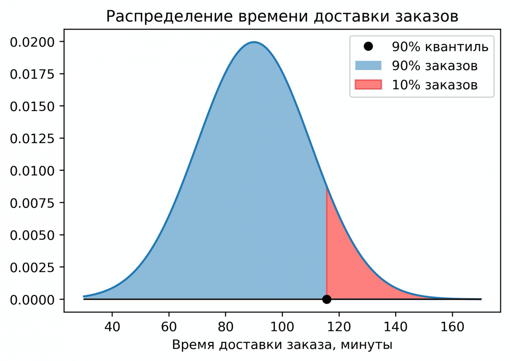
Квантили для времени доставки заказов. 90-й квантиль равен примерно 120 минутам: слева от этой границы лежит 90% заказов, справа — оставшиеся 10%. Такую картинку удобно использовать для SLA: компания может заявлять, что «90% заказов доставляются менее чем за 2 часа». Квантиль уровня $0.5$ — это медиана. По смыслу квантиль уровня $\alpha$ делит выборку на две части, причём слева лежит доля $\alpha$ данных. Медиана делит выборку пополам: слева от неё половина наблюдений.
Другие популярные частные случаи:
- квартили — уровни 0.25, 0.5, 0.75;
- перцентили — те же квантили, выраженные в процентах;
- децили — уровни 0.1, 0.2, …, 0.9.
Отсортированная выборка времени ответа сервиса (мс): $[80, 95, 110, 120, 140, 160, 190, 250, 400, 1200]$, $n = 10$.
- $q_{0.5}$ (медиана) $= (140 + 160)/2 = 150$ мс;
- $q_{0.9}$ — граница верхних 10%: примерно 400 мс;
- среднее при этом равно 274.5 мс — оно вытянуто вверх единственным значением 1200.
Обратите внимание, насколько разную картину дают три числа. Медиана 150 мс говорит «типичный пользователь ждёт 0.15 секунды», а $q_{0.9} = 400$ мс — «каждый десятый ждёт почти полсекунды». Именно вторая цифра определяет ощущение от сервиса.
Тонкость, которая регулярно приводит к расхождениям в отчётах: когда $\alpha \cdot n$ не целое, «нужного» наблюдения в выборке просто нет, и его приходится как-то достраивать между соседними.
Способов сделать это существует девять (в
numpy.percentileони задаются параметромmethod), и разные инструменты используют разные умолчания: numpy, Excel, R и SQL могут дать слегка разные числа на одних и тех же данных.На больших выборках разница ничтожна, на маленьких — заметна. Если цифры из двух систем не сходятся на пару единиц, первым делом проверьте метод интерполяции, а не ищите баг в данных.
Главная причина — они описывают хвосты распределения, о которых среднее умалчивает.
Классический пример из эксплуатации сервисов: среднее время ответа 200 мс выглядит прекрасно, но если $q_{0.99} = 5$ секунд, то каждый сотый запрос фактически «висит». При миллионе запросов в день это десять тысяч недовольных пользователей — а среднее об этом не сообщает ничего.
Поэтому в SLA и мониторинге всегда фигурируют не средние, а перцентили: p50, p95, p99. Формулировка «95% заказов доставляются быстрее 2 часов» и проверяема, и понятна клиенту.
Квантили сохраняются при любом монотонно возрастающем преобразовании: медиана логарифмов равна логарифму медианы. Для среднего это неверно — среднее логарифмов не равно логарифму среднего.
Практическое следствие: если вы прологарифмировали скошенный признак, посчитали квантили и вернулись обратно экспонентой, вы получите ровно те же квантили, что и на исходных данных. Со средним такой фокус не пройдёт, и именно поэтому обратное преобразование прогнозов из лог-шкалы — источник систематического смещения.
- Клиппинг и винзоризация признаков: обрезка значений по 1-му и 99-му перцентилю убирает влияние выбросов, не удаляя объекты.
- Дискретизация признаков по квантилям (
KBinsDiscretizer(strategy="quantile")) — бины получаются равнонаполненными, в отличие от разбиения на равные интервалы. - QuantileTransformer приводит любое распределение к равномерному или нормальному, работая именно через квантили.
- Квантильная регрессия и
loss="quantile"в градиентном бустинге предсказывают не среднее, а заданный перцентиль — так строят интервальные прогнозы «сверху» и «снизу». - Мониторинг моделей: сравнение квантилей признака в проде и в обучающей выборке — простой и надёжный детектор дрейфа данных.
Что такое квантиль уровня $\alpha$ и что означает $P(X \leq q_\alpha) = \alpha$?
Квантиль $q_\alpha$ — значение, левее которого лежит доля $\alpha$ данных. Например, $q_{0.9}$ — число, меньше которого 90% наблюдений. Уровень задаёт долю слева, а не справа.
Как квантиль связан с функцией распределения?
Это обратная к ней функция: $q_\alpha = F^{-1}(\alpha)$. Функция распределения по значению даёт долю, квантиль по доле даёт значение. В
scipy.statsэто методыcdfиppf.Чем квантиль отличается от перцентиля?
Это одно и то же в разных единицах: квантиль уровня $\alpha = 0.9$ и 90-й перцентиль — одно и то же число.
Какой квантиль является медианой?
Квантиль уровня $\alpha = 0.5$: он делит выборку ровно пополам.
Почему разные инструменты дают немного разные квантили?
Когда $\alpha \cdot n$ не целое, нужного наблюдения в выборке нет и значение достраивается интерполяцией. Существует девять способов это сделать, и умолчания в numpy, R, Excel и SQL различаются. На малых выборках расхождения заметны.
Почему квантили важнее среднего при мониторинге сервисов?
Они описывают хвост распределения. Среднее время ответа 200 мс может скрывать $q_{0.99} = 5$ с — каждый сотый запрос фактически зависает. Поэтому в SLA используют p50, p95 и p99.
Как квантили ведут себя при монотонных преобразованиях?
Сохраняются: медиана логарифмов равна логарифму медианы. Для среднего это неверно, из-за чего обратное преобразование прогнозов из логарифмической шкалы даёт систематическое смещение.
Как квантили используются в ML?
Для клиппинга и винзоризации выбросов, для квантильной дискретизации признаков, в
QuantileTransformer, в квантильной регрессии для интервальных прогнозов и при мониторинге дрейфа признаков.Как квантили применяются в бизнесе для описания качества сервиса (SLA)?
Компания гарантирует, что «90% заказов доставляются быстрее $q_{0.9}$ минут». Такая формулировка описывает хвост распределения и проверяема, в отличие от среднего, чувствительного к выбросам.
-
Квартили
Квартили — частный случай квантилей, делящих данные на четыре равные части, каждая из которых содержит $25\%$ наблюдений.
Слово происходит от латинского quartus — «четвёртый». Трёх точек достаточно, чтобы разрезать выборку на четыре куска.
- $Q_1=q_{0.25}$ — первый квартиль
- $Q_2=q_{0.5}$ — второй квартиль, медиана
- $Q_3=q_{0.75}$ — третий квартиль
- $\operatorname{IQR}=Q_3-Q_1$ — межквартильный размах (interquartile range)
Представьте, что вы выстроили всех студентов группы по росту в одну шеренгу:
- Тот, кто стоит на границе первой четверти, — это $Q_1$.
- Тот, кто стоит ровно посередине, — это $Q_2$ (медиана).
- Тот, кто стоит на границе последней четверти, — это $Q_3$.
Межквартильный размах $\operatorname{IQR} = Q_3 - Q_1$ охватывает центральную половину данных — тех, кто не слишком высокий и не слишком низкий. Это устойчивая к выбросам мера разброса.
$Q_1$ и $Q_3$ определяются позициями в отсортированном ряду, а не величинами значений. Замените самого высокого студента на баскетболиста ростом три метра — граница верхней четверти не сдвинется, потому что человек как стоял последним, так и стоит.
Со среднеквадратическим отклонением иначе: в него входят квадраты отклонений, и один выброс способен раздуть его в разы. Поэтому пара «медиана + IQR» — робастный аналог пары «среднее + СКО».
Для нормально распределённых данных они связаны соотношением $\operatorname{IQR} \approx 1.35\,\sigma$ — полезно помнить, чтобы переводить одно в другое.
Выборка (отсортированная): $[160, 163, 165, 170, 172, 174, 178, 180, 185, 190]$ — $n=10$.
- $Q_1 = 165$ (25-й перцентиль)
- $Q_2 = 173$ (медиана, среднее двух центральных: $(172+174)/2$)
- $Q_3 = 180$ (75-й перцентиль)
- $\operatorname{IQR} = 180 - 165 = 15$
Читается это так: центральная половина студентов имеет рост от 165 до 180 см, а типичный рост — 173 см.
На основе IQR часто определяют выбросы: точками-выбросами считаются значения за пределами
$$[\,Q_1 - 1.5 \cdot \operatorname{IQR},\ \ Q_3 + 1.5 \cdot \operatorname{IQR}\,]$$
Для примера выше границы равны $165 - 22.5 = 142.5$ и $180 + 22.5 = 202.5$ — ни одно наблюдение за них не выходит, выбросов нет.
Этот критерий используется, например, в box-plot.
Коэффициент выбран не случайно, но и не выведен из строгой теории — это удачный компромисс, предложенный Джоном Тьюки.
Для нормального распределения границы $Q_1 - 1.5\,\text{IQR}$ и $Q_3 + 1.5\,\text{IQR}$ соответствуют примерно $\mu \pm 2.7\sigma$, за которые выходит около 0.7% наблюдений. То есть на нормальных данных правило помечает примерно 7 точек из тысячи — достаточно редко, чтобы пометки означали что-то содержательное, и достаточно часто, чтобы реальные аномалии не проскакивали.
Иногда используют коэффициент 3.0 — это «дальние выбросы» (far outliers), заведомо экстремальные значения.
Две ошибки, которые совершают почти все новички.
Первая: удалять всё помеченное. Правило — эвристика, а не детектор ошибок. На скошенных данных (доходы, длительности) оно помечает выбросами десятки процентов совершенно нормальных наблюдений просто потому, что распределение несимметрично. Удалив их, вы выбросите самую содержательную часть данных — крупных клиентов, дорогие заказы, реальные аномалии.
Вторая: доверять правилу на маленькой выборке. При $n = 8$ квартили оцениваются крайне грубо, и метка «выброс» почти ничего не значит.
Правильный порядок действий: посмотреть на помеченные точки глазами и решить, что это — ошибка ввода (лишний ноль, отрицательный возраст), реальное редкое событие или признак того, что данные скошены и просятся в логарифм.
- RobustScaler масштабирует признаки по медиане и IQR вместо среднего и СКО — на данных с выбросами работает заметно надёжнее.
- Box-plot в EDA: квартили — его основа, за секунду показывающая разброс, скошенность и наличие выбросов.
- Винзоризация по границам $1.5\,\text{IQR}$: значения не удаляют, а «подтягивают» к границе, сохраняя объём выборки.
- Мониторинг метрик: алерт при выходе значения за исторический IQR — простое и устойчивое правило детекции аномалий, не требующее предположения о нормальности.
Что такое квартили и на сколько частей они делят данные?
Квартили делят упорядоченные данные на четыре равные части по 25% наблюдений: $Q_1$ (25%), $Q_2$ — медиана (50%), $Q_3$ (75%).
Что такое межквартильный размах и чем он полезен?
$\operatorname{IQR} = Q_3 - Q_1$ — размах центральных 50% данных. Это устойчивая к выбросам мера разброса: экстремальные значения не меняют положения $Q_1$ и $Q_3$.
Почему IQR устойчив к выбросам, а СКО нет?
$Q_1$ и $Q_3$ определяются позициями в отсортированном ряду, а не величинами значений. СКО же складывает квадраты отклонений, поэтому одно экстремальное наблюдение может раздуть его в разы.
Как IQR связан с $\sigma$ для нормального распределения?
$\operatorname{IQR} \approx 1.35\,\sigma$. Это позволяет переводить робастную оценку разброса в привычные сигмы и обратно.
Как на основе IQR определяют выбросы?
Выбросами считают точки за пределами $[Q_1 - 1.5\,\operatorname{IQR},\ Q_3 + 1.5\,\operatorname{IQR}]$. Этот критерий используется в box-plot; коэффициент 3.0 выделяет «дальние» выбросы.
Почему коэффициент равен именно 1.5?
Это эвристика Тьюки: для нормального распределения такие границы соответствуют примерно $\mu \pm 2.7\sigma$, за которые выходит около 0.7% наблюдений — редко, но не исчезающе редко.
Можно ли автоматически удалять всё, что правило пометило выбросом?
Нет. На скошенных данных правило помечает много нормальных наблюдений, а на малых выборках квартили оцениваются грубо. Помеченные точки нужно рассматривать вручную: это может быть ошибка ввода, реальное редкое событие или сигнал о том, что признак стоит логарифмировать.
Вычислите квартили для выборки $[160, 163, 165, 170, 172, 174, 178, 180, 185, 190]$.
$Q_1 = 165$, $Q_2 = 173$ (среднее 172 и 174), $Q_3 = 180$, $\operatorname{IQR} = 15$. Границы выбросов: $[142.5,\ 202.5]$ — выбросов нет.
Где квартили применяются в ML?
В
RobustScaler(масштабирование по медиане и IQR), при винзоризации признаков, в box-plot при разведочном анализе и в правилах детекции аномалий при мониторинге метрик.
-
Перцентили
Перцентили — это квантили, выраженные в процентах. $23$-й перцентиль ($q_{0.23}$) — значение, левее которого лежит $23\%$ выборки. Медиана — $50$-й перцентиль, $Q_3$ — $75$-й перцентиль.
Перцентиль и квантиль — одна и та же величина, только выраженная в разных единицах. Квантиль уровня $\alpha = 0.9$ и $90$-й перцентиль — одно и то же число.
Перцентиль удобнее в повседневной речи: «ты в топ-10% по зарплате» понятнее, чем «твоя зарплата выше квантиля уровня 0.9». Поэтому в отчётах, медицинских таблицах и мониторинге используют именно проценты, а в формулах и коде — доли.
Родственные единицы того же семейства: децили (десять частей), квартили (четыре), квинтили (пять). Все они — просто квантили на определённых уровнях.
- Тест IQ: если твой результат — $90$-й перцентиль, значит $90\%$ людей, прошедших тест, набрали меньше тебя.
- Рост: $5$-й перцентиль роста для новорождённых — граница, ниже которой находятся самые маленькие $5\%$ детей. Педиатры используют такие таблицы для мониторинга развития.
- В ML: клиппинг признаков на 1-м и 99-м перцентиле убирает выбросы и стабилизирует обучение модели.
Классическая ловушка: «я набрал 90 баллов из 100» и «я на 90-м перцентиле» — совершенно разные утверждения.
Первое говорит о вашем результате, второе — о вашем месте среди остальных. Можно набрать 40 баллов из 100 и оказаться на 95-м перцентиле, если тест был очень трудным для всех. И наоборот: 90 баллов при лёгком тесте могут соответствовать 30-му перцентилю.
Перцентиль всегда относителен: он зависит не только от вас, но и от того, с кем вас сравнивают.
Отсюда следует и главная практическая оговорка: одно и то же значение даёт разные перцентили в разных совокупностях.
Зарплата 150 тысяч — это, возможно, 85-й перцентиль по стране и 40-й перцентиль среди senior-разработчиков Москвы. Ни одно из чисел не «правильнее» другого, но использовать их надо с явным указанием, относительно кого считалось.
Та же логика в детских таблицах роста: перцентили считаются отдельно для мальчиков и девочек и отдельно по возрастам — иначе сравнение бессмысленно.
В эксплуатации сервисов латентность почти всегда описывают перцентилями: p50, p95, p99, p99.9.
Причина в форме распределения времени ответа: у него длинный правый хвост. Среднее по такому распределению малоинформативно — оно и типичное поведение не описывает, и про хвост молчит.
- p50 (медиана) — что чувствует типичный пользователь.
- p95 / p99 — что чувствуют самые невезучие. Именно эти запросы порождают жалобы.
- p99.9 — важен при большом объёме: при миллиарде запросов в день это миллион медленных.
Отдельная тонкость: у пользователя, делающего много запросов на страницу, шанс попасть в «хвост» хотя бы раз — высокий. Поэтому в распределённых системах говорят, что p99 определяет ощущение от продукта сильнее, чем p50.
Частая инженерная ошибка: посчитать p95 на каждом из десяти серверов и усреднить эти десять чисел, объявив результат «общим p95».
Так делать нельзя: перцентиль — не аддитивная величина. Средний p95 может оказаться и выше, и ниже настоящего, и предсказать направление ошибки невозможно.
Правильно считать перцентиль по объединённым данным. Поскольку хранить все значения дорого, в мониторинге используют приближённые структуры — гистограммы с фиксированными бинами, t-digest, HdrHistogram, — которые как раз позволяют корректно объединять данные с разных источников.
- Клиппинг и винзоризация: обрезка значений признака на 1-м и 99-м перцентиле позволяет убрать влияние выбросов, не удаляя объекты из выборки.
- Квантильная дискретизация: разбиение признака на бины по перцентилям даёт равнонаполненные группы, устойчивые к скошенности.
- QuantileTransformer переводит признак в равномерное или нормальное распределение через его перцентили — мощный приём для сильно скошенных данных.
- Интервальные прогнозы: модель, обученная на pinball loss, предсказывает, например, p10 и p90 — «оптимистичный» и «пессимистичный» сценарии.
- Пороги в детекции аномалий: объект считается аномальным, если его скор превышает, скажем, 99-й перцентиль скоров на обучающей выборке.
Что такое перцентиль и как он связан с квантилем?
Перцентиль — квантиль, выраженный в процентах. Квантиль уровня $\alpha = 0.9$ и 90-й перцентиль — одно и то же число; отличаются только единицы записи.
Что означает «находиться на 90-м перцентиле» по результатам теста?
90% участников набрали меньше вашего результата, то есть вы входите в верхние 10%.
Чем перцентиль отличается от процента правильных ответов?
Процент баллов описывает ваш собственный результат, перцентиль — ваше место относительно других. При трудном тесте 40 баллов из 100 могут соответствовать 95-му перцентилю, при лёгком 90 баллов — 30-му.
Как медиана, $Q_1$ и $Q_3$ связаны с перцентилями?
Медиана — 50-й перцентиль, $Q_1 = q_{0.25}$ — 25-й, $Q_3 = q_{0.75}$ — 75-й. Квартили, децили и квинтили — частные случаи перцентилей.
Зависит ли перцентиль от группы сравнения?
Да, полностью. Одна и та же зарплата может быть 85-м перцентилем по стране и 40-м среди узкой профессиональной группы, поэтому совокупность сравнения нужно указывать явно.
Почему в мониторинге сервисов используют p95 и p99, а не среднее?
У времени ответа длинный правый хвост: среднее не описывает ни типичного пользователя, ни худшие случаи. p50 показывает типичный опыт, p95 и p99 — опыт самых невезучих, которые и формируют жалобы.
Почему нельзя усреднять перцентили с разных серверов?
Перцентиль неаддитивен: среднее из p95 нескольких источников не равно p95 объединённых данных и может отклоняться в любую сторону. Корректно считать по объединённой выборке или использовать структуры вроде t-digest и HdrHistogram.
Как перцентили применяются при предобработке данных в ML?
Клиппинг на 1-м и 99-м перцентиле удаляет влияние выбросов без потери объектов; квантильная дискретизация даёт равнонаполненные бины;
QuantileTransformerнормализует сильно скошенные признаки.Где ещё перцентили используются в ML?
В интервальных прогнозах через квантильную регрессию (например, p10 и p90) и при выборе порога в детекции аномалий — по 99-му перцентилю скоров обучающей выборки.
-
Box-plot (ящик с усами)
Box-plot, или ящик с усами, — визуализация распределения данных на основе пяти чисел: минимального значения, $Q_1$, $Q_2$ (медианы), $Q_3$ и максимального значения.
Если совсем простыми словами: это сжатый портрет распределения, из которого за секунду видно, где сидит основная масса данных, симметричны ли они и есть ли аномалии.
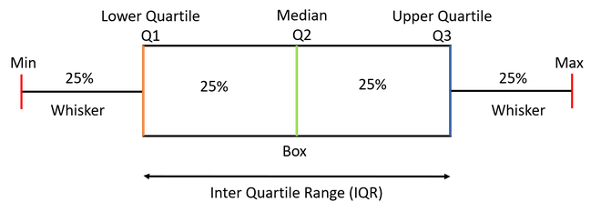
Строение box-plot: прямоугольник охватывает центральные 50% данных от $Q_1$ до $Q_3$, линия внутри — медиана, усы тянутся до самых крайних наблюдений в пределах $1.5\cdot\text{IQR}$, а точки за усами помечены как выбросы. - Ящик (прямоугольник) охватывает центральные 50% данных — от $Q_1$ до $Q_3$. Его ширина и есть межквартильный размах IQR: чем шире ящик, тем больше разброс.
- Линия внутри ящика — медиана ($Q_2$). Если она сдвинута к одному краю — распределение скошено.
- Усы (отрезки за ящиком) — обычно доходят до $Q_1 - 1.5 \cdot \text{IQR}$ и $Q_3 + 1.5 \cdot \text{IQR}$.
- Точки за усами — выбросы (outliers).
Тонкость, которую упускают почти все: ус рисуется не до самой границы $Q_3 + 1.5\,\text{IQR}$, а до самого крайнего реального наблюдения, которое эту границу ещё не превысило.
То есть граница $1.5\,\text{IQR}$ — это правило отбора, а конец уса — фактическое значение из данных. Поэтому усы почти всегда несимметричны и разной длины, даже если само правило симметрично. Это не ошибка построения, а как раз полезная информация о форме распределения.
По box-plot удобно и быстро посмотреть, как распределён тот или иной признак:
- длинный правый ус и много точек справа — правая скошенность (типично для доходов, длительностей, цен);
- медиана прижата к нижнему краю ящика — скошенность вправо и внутри центральной половины;
- широкий ящик — большой разброс основной массы данных;
- точки далеко за усами — кандидаты в аномалии, которые стоит рассмотреть отдельно.
Именно поэтому box-plot стал стандартным инструментом первого взгляда на признак.
Пошаговое построение ящика с усами по выборке.
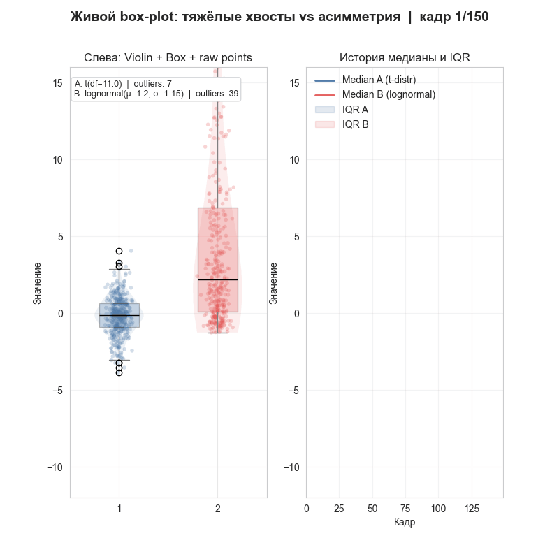
Как строится box-plot: данные сортируются, вычисляются квартили, из них собирается ящик, затем усы дотягиваются до крайних наблюдений внутри границ, а оставшиеся точки помечаются выбросами. Один box-plot полезен, но по-настоящему он раскрывается, когда рядом стоят несколько.
Поставьте box-plot зарплаты по каждому отделу, времени доставки по каждому городу, длительности сессии по каждой платформе — и различия между группами станут видны мгновенно: где выше медиана, где больше разброс, где аномалии. Ни одна таблица со средними такого не даёт.
Это же делает box-plot удобным для быстрой диагностики признака относительно целевой переменной: если распределения признака в двух классах заметно разошлись, признак информативен.
Существенное ограничение: пять чисел не отличают бимодальное распределение от унимодального.
Данные с двумя выраженными пиками (например, время доставки: курьер за 30 минут и почта за 90) и данные, равномерно размазанные по тому же диапазону, дадут практически одинаковый box-plot. Обе группы скрыты внутри ящика, и о смеси вы не узнаете.
Поэтому box-plot дополняют:
- гистограммой — она показывает форму;
- violin plot — тот же ящик, но с профилем плотности по бокам;
- strip / swarm plot — сами точки поверх ящика, особенно полезно при малом $n$.
Хорошая практика при EDA — смотреть box-plot и гистограмму вместе, а не выбирать одно.
- Малая выборка. При $n < 10$ квартили оцениваются крайне грубо, и ящик может ввести в заблуждение. Лучше показать сами точки.
- Автоматическое удаление «выбросов». Точки за усами — это метка правила $1.5\,\text{IQR}$, а не приговор. На скошенных данных туда попадают десятки процентов совершенно нормальных наблюдений: у распределения доходов «выбросами» окажутся все обеспеченные клиенты. Удалять их — значит терять самое ценное.
Box-plot незаменим при разведочном анализе данных (EDA):
- за несколько секунд показывает, есть ли выбросы в признаке, симметрично ли распределение, насколько велик разброс;
- длинный правый ус у признака «зарплата» — сигнал рассмотреть логарифмирование признака перед обучением модели;
- сравнение box-plot признака по классам целевой переменной показывает, разделяет ли он классы;
- box-plot метрик по фолдам кросс-валидации показывает не только среднее качество, но и его стабильность: широкий ящик означает, что модель сильно зависит от разбиения.
На каких пяти числах основан box-plot?
Минимальное значение (конец левого уса), $Q_1$, $Q_2$ (медиана), $Q_3$ и максимальное значение (конец правого уса). Точки за усами отображаются отдельно как выбросы.
Что такое IQR и как определяются усы?
$\text{IQR} = Q_3 - Q_1$ — межквартильный размах, ширина ящика. Границы для выбросов — $Q_1 - 1.5\,\text{IQR}$ и $Q_3 + 1.5\,\text{IQR}$; ус дотягивается до самого крайнего реального наблюдения, не выходящего за эту границу.
Почему усы обычно имеют разную длину?
Потому что они заканчиваются на фактических наблюдениях, а не на самих границах $1.5\,\text{IQR}$. Разная длина усов — признак асимметрии распределения.
О чём говорит положение медианы внутри ящика?
Смещение медианы к одному краю означает скошенность распределения. Медиана в центре ящика — признак симметрии.
Какое главное ограничение у box-plot?
Он не показывает форму распределения: бимодальные данные и равномерные данные того же диапазона дают практически одинаковый ящик. Поэтому его дополняют гистограммой, violin plot или отображением самих точек.
Можно ли удалять точки, помеченные box-plot как выбросы?
Не автоматически. Это результат эвристического правила $1.5\,\text{IQR}$: на скошенных данных им помечаются десятки процентов нормальных наблюдений. Каждую точку нужно оценивать по смыслу — ошибка это или реальное редкое событие.
Как box-plot применяется при разведочном анализе в ML?
Позволяет быстро обнаружить выбросы, оценить разброс и симметрию признака. Длинный правый ус у признака вроде зарплаты — сигнал рассмотреть логарифмирование перед обучением.
Чем полезно сравнение нескольких box-plot рядом?
Оно мгновенно показывает различия между группами по медиане, разбросу и аномалиям — по отделам, городам, платформам или классам целевой переменной. Так же сравнивают метрики по фолдам кросс-валидации, оценивая стабильность модели.
-
Гомоскедастичность и гетероскедастичность
Эти понятия встречаются в регрессии и описывают однородность дисперсий ошибок модели:
- Гомоскедастичность — одинаковая дисперсия ошибок по всей выборке. Это хорошо.
- Гетероскедастичность — дисперсия ошибок зависит от значений признаков (например, чем больше доход, тем сильнее «разброс» расходов).
Слова греческие: homos — «одинаковый», heteros — «разный», skedasis — «рассеяние». Буквально — «одинаковое рассеяние» и «разное рассеяние».
Гомоскедастичность означает, что модель одинаково хорошо работает для маленьких и больших значений признаков: величина ошибки не зависит от того, где мы находимся.
Гетероскедастичность — что для одних диапазонов значений ошибки маленькие и стабильные, а для других — большие и хаотичные.
Аналогия: представьте стрелка, который стреляет по мишеням на разных дистанциях. Если кучность одинакова на всех дистанциях — это гомоскедастичность. Если на близких мишенях он кладёт пули в десятку, а на дальних разброс метровый — гетероскедастичность.
Важное уточнение, которое часто теряется: гомоскедастичность — свойство остатков модели, а не самих данных.
Признаки могут иметь любые распределения и любой разброс — это ни на что не влияет. Требование относится к $\varepsilon = y - \hat{y}$: разброс остатков должен быть постоянным при любом значении предсказания.
Сверху данные и линия регрессии, снизу остатки $y-\hat y$ против $x$ и коридор $\pm 2\sigma(x)$. Пока разброс ошибок постоянен, коридор — параллельные линии. Когда $\sigma$ начинает расти с $x$, облако остатков превращается в «воронку»: на данных это едва заметно, на графике остатков — сразу. Основной диагностический инструмент — график остатков против предсказанных значений (residuals vs fitted).
- Гомоскедастичность: бесформенное горизонтальное облако одинаковой высоты, симметричное относительно нуля. Скучная картинка — и это хорошо.
- Гетероскедастичность: «воронка» или «веер» — разброс расширяется (реже сужается) вместе с ростом предсказания.
Заодно на этом же графике проверяют другое: если облако изгибается дугой, значит модель упустила нелинейную зависимость, и проблема уже не в дисперсии.
Представьте модель, предсказывающую расходы домохозяйства по доходу:
- Семьи с доходом 30 000 руб./мес. тратят примерно одинаково — почти всё уходит на обязательные нужды, разброс небольшой.
- Семьи с доходом 300 000 руб./мес. тратят очень по-разному — один путешествует, другой откладывает, третий содержит два дома. Разброс огромный.
Это типичная гетероскедастичность: у богатых больше свободы выбора, а значит и больше вариативность. Модель может предсказывать расходы бедной семьи с точностью до пары тысяч, а богатой — с точностью до сотни тысяч.
Гетероскедастичность — не экзотика, а типичное свойство реальных данных. Основные механизмы:
- Мультипликативная природа величин. Ошибка часто пропорциональна масштабу: цена квартиры предсказывается «плюс-минус 10%», а не «плюс-минус 200 тысяч». В абсолютных числах это и даёт растущий разброс.
- Разная свобода поведения. Как в примере с расходами: чем больше ресурс, тем шире диапазон возможных решений.
- Неоднородность выборки. Данные объединяют разные группы (регионы, сегменты, каналы) с разной внутренней изменчивостью.
- Разный объём агрегации. Метрика по магазину с 10 продажами в день шумит сильнее, чем по магазину с 10 000.
Гетероскедастичность нарушает предположения классической линейной регрессии (МНК). При этом важно понимать, что ломается, а что нет:
- Не ломается: сами оценки коэффициентов остаются несмещёнными. Модель в среднем предсказывает правильно.
- Ломается: оценки становятся неэффективными (существуют более точные), а главное — стандартные ошибки коэффициентов считаются неверно.
Последнее и есть настоящая проблема: неверные стандартные ошибки означают неверные $p$-значения и доверительные интервалы. Признак может выглядеть статистически значимым, не будучи таковым, — вы делаете уверенные выводы на основе испорченной арифметики.
Второе практическое следствие: MSE как функция потерь неявно считает все ошибки равноценными, и при гетероскедастичности модель непропорционально подстраивается под самую шумную часть данных.
- Визуально — график остатков против предсказаний. Самый быстрый и надёжный способ, начинать стоит с него.
- Тест Бройша — Пагана — проверяет, объясняются ли квадраты остатков признаками. $H_0$ — гомоскедастичность.
- Тест Уайта — более общий, ловит и нелинейные формы зависимости дисперсии.
Как и с тестами на нормальность, злоупотреблять формальными критериями не стоит: на большой выборке они отвергают гомоскедастичность из-за ничтожных отклонений. График информативнее.
- Логарифмирование целевой переменной. Самый частый и действенный приём: если ошибка мультипликативна («±10%»), в лог-шкале она становится аддитивной и постоянной. Работает для цен, доходов, длительностей.
- Взвешенная регрессия (WLS). Наблюдениям с меньшей дисперсией даётся больший вес. Требует оценки дисперсии, но даёт эффективные оценки.
- Робастные стандартные ошибки (Huber — White, «HC»). Коэффициенты не меняются, но их стандартные ошибки пересчитываются корректно. Самое дешёвое решение, если вас интересуют выводы о значимости; в
statsmodelsэтоfit(cov_type="HC3"). - Обобщённые линейные модели. Регрессия Пуассона или гамма-регрессия изначально предполагают связь дисперсии со средним — то есть моделируют гетероскедастичность, а не борются с ней.
- Более гибкие модели. Градиентный бустинг и нейросети не делают предположения о постоянной дисперсии; проблема значимости коэффициентов для них попросту не стоит.
Стоит трезво оценивать масштаб проблемы. Если цель — вывод («значим ли этот признак, каков доверительный интервал коэффициента»), гетероскедастичность критична: без поправок все $p$-значения неверны.
Если цель — предсказание и качество измеряется на отложенной выборке, она мешает куда меньше: модель просто будет менее точной в шумной области, что видно и по метрикам. Но и здесь она полезна как диагностика: «воронка» на графике остатков — сигнал, что стоит логарифмировать цель или что в данных смешаны разнородные группы.
Что такое гомоскедастичность и гетероскедастичность?
Гомоскедастичность — постоянная дисперсия ошибок регрессии по всей выборке. Гетероскедастичность — зависимость дисперсии ошибок от значений признаков или от величины предсказания.
К чему относится это требование — к данным или к модели?
К остаткам модели $\varepsilon = y - \hat{y}$, а не к распределению признаков. Признаки могут иметь любой разброс, важно лишь постоянство разброса ошибок.
Как гетероскедастичность выглядит на графике остатков?
Как «воронка» или «веер»: облако остатков расширяется (реже сужается) с ростом предсказанного значения. При гомоскедастичности облако имеет одинаковую высоту по всей оси.
Почему гетероскедастичность встречается так часто?
Из-за мультипликативной природы многих величин (ошибка пропорциональна масштабу), разной свободы поведения у объектов с разным ресурсом, неоднородности выборки и разного объёма агрегации.
Что именно портит гетероскедастичность в линейной регрессии?
Оценки коэффициентов остаются несмещёнными, но становятся неэффективными, а стандартные ошибки вычисляются неверно. Из-за этого искажаются $p$-значения и доверительные интервалы, и признак может ложно выглядеть значимым.
Как обнаружить гетероскедастичность?
Прежде всего визуально — по графику остатков против предсказаний. Формально — тестами Бройша — Пагана и Уайта, но на больших выборках они отвергают гомоскедастичность при ничтожных отклонениях.
Какие способы борьбы существуют?
Логарифмирование целевой переменной (переводит мультипликативную ошибку в аддитивную), взвешенная регрессия WLS, робастные стандартные ошибки Хьюбера — Уайта, обобщённые линейные модели (Пуассона, гамма) и более гибкие модели вроде бустинга.
Насколько это критично для задач машинного обучения?
Критично, когда нужен статистический вывод о коэффициентах. Для чисто предсказательных задач влияние меньше — модель просто менее точна в шумной области, — но «воронка» остаётся полезным диагностическим сигналом о необходимости преобразовать цель или разделить неоднородные группы.
-
Многомерное нормальное распределение
Это обобщение обычного нормального распределения на случай, когда у нас несколько переменных сразу.
$$f(\mathbf{x})=\dfrac{1}{\sqrt{(2\pi)^{k}\det \Sigma}}\exp\left(-\dfrac{1}{2}(\mathbf{x}- \boldsymbol{\mu})^T\Sigma^{-1}(\mathbf{x}-\boldsymbol{\mu})\right)$$
где:
- $\mathbf{x}$ — вектор случайных величин;
- $\boldsymbol{\mu}$ — вектор средних значений;
- $\Sigma$ — ковариационная матрица;
- $k$ — размерность (число переменных);
- $\exp(x) = e^x$ — обозначение для удобства.
Записывают как $\mathbf{x} \sim \mathcal{N}(\boldsymbol{\mu}, \Sigma)$.
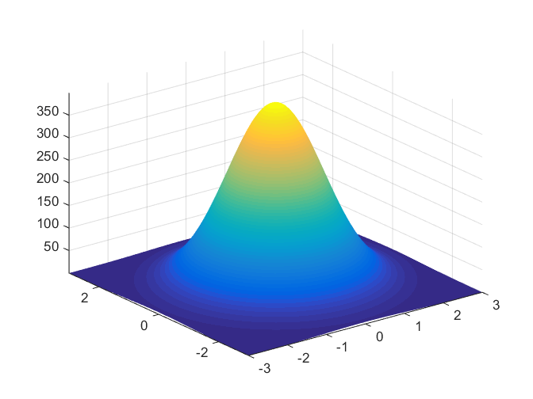
Плотность двумерного нормального распределения: вместо одномерного «колокола» получается холм над плоскостью. Его вершина стоит в точке $\boldsymbol{\mu}$, а форма основания — вытянутость и наклон эллипса — задаётся ковариационной матрицей $\Sigma$. Одномерное нормальное распределение — колокол над прямой. Двумерное — холм над плоскостью: чем выше холм в точке, тем чаще встречается такая пара значений.
Если разрезать холм горизонтальной плоскостью, в сечении получится эллипс — линия уровня, вдоль которой плотность одинакова. Именно эти эллипсы и рисуют, когда изображают двумерную гауссиану на плоскости.
Параметры отвечают ровно за то же, что и в одномерном случае, только «по всем направлениям сразу»:
- $\boldsymbol{\mu}$ — где стоит центр холма;
- $\Sigma$ — насколько он широкий, вытянутый и в какую сторону наклонён.
Ковариационная матрица — аналог дисперсии в многомерном случае. Она задаёт форму эллипса тремя способами:
- Диагональная с равными элементами ($\Sigma = \sigma^2 I$) — эллипс превращается в круг: обе переменные имеют одинаковый разброс и не связаны.
- Диагональная с разными элементами — эллипс, вытянутый вдоль осей: разброс разный, но связи нет.
- С ненулевыми внедиагональными элементами — эллипс наклонён. Наклон и есть визуальное проявление ковариации: положительная ковариация даёт наклон вправо-вверх, отрицательная — влево-вверх.
Иными словами, глядя на облако двумерных точек, вы буквально видите $\Sigma$: длины полуосей эллипса — это разбросы вдоль главных направлений, а поворот — корреляция.
Облако точек из двумерного нормального распределения и его эллипсы уровня $1\sigma$ и $2\sigma$. Корреляция $\rho$ (внедиагональные элементы $\Sigma$) наклоняет и вытягивает эллипс вдоль диагонали; дисперсии на диагонали растягивают или сжимают облако вдоль своей оси. Отсюда прямой мостик к методу главных компонент. Собственные векторы матрицы $\Sigma$ — это направления осей эллипса, а собственные значения — квадраты его полуосей.
PCA как раз и ищет собственные векторы ковариационной матрицы: первая главная компонента — самая длинная ось эллипса, направление максимального разброса. Так что «повернуть данные так, чтобы признаки стали независимыми» и «привести $\Sigma$ к диагональному виду» — это одно и то же действие.
Формула выглядит устрашающе, но каждый её кусок — прямой аналог одномерного случая:
Одномерный случай Многомерный случай Смысл $(x - \mu)^2$ $(\mathbf{x} - \boldsymbol{\mu})^T \Sigma^{-1} (\mathbf{x} - \boldsymbol{\mu})$ квадрат «расстояния» до центра деление на $\sigma^2$ умножение на $\Sigma^{-1}$ перевод в единицы разброса $\frac{1}{\sqrt{2\pi\sigma^2}}$ $\frac{1}{\sqrt{(2\pi)^k \det\Sigma}}$ нормировка на единичный объём Выражение $(\mathbf{x} - \boldsymbol{\mu})^T \Sigma^{-1} (\mathbf{x} - \boldsymbol{\mu})$ имеет собственное имя — квадрат расстояния Махаланобиса. Это «расстояние с поправкой на форму облака»: отклонение вдоль вытянутой оси считается менее удивительным, чем такое же отклонение поперёк.
Рост и вес человека сильно коррелированы. Человек ростом 190 см и весом 60 кг по каждому признаку в отдельности выглядит нормально: и рост встречается, и вес встречается.
Но пара этих значений аномальна — при таком росте столько не весят. Обычное евклидово расстояние до центра облака этого не заметит, а расстояние Махаланобиса заметит: точка лежит далеко поперёк вытянутого эллипса.
Именно поэтому многомерная детекция аномалий строится на $\Sigma^{-1}$, а не на покомпонентной проверке признаков.
Если вспомнить условие для плотности распределения, то там требуется, чтобы интеграл от плотности по всей области был равен 1. Но как быть, если переменных несколько? В этом случае интегрируют по всем переменным — в двумерном случае по $x$ и по $y$.
Для одномерного случая площадь под графиком приближали прямоугольниками, варьируя их ширину. В двумерном случае варьируют одновременно и ширину по $x$, и ширину по $y$.
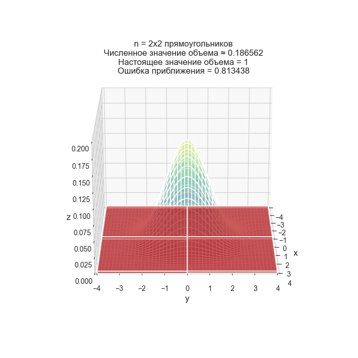
Объём под плотностью двумерного нормального распределения приближается столбиками с основанием $\Delta x \times \Delta y$. Чем мельче сетка, тем точнее приближение; в пределе сумма объёмов столбиков превращается в двойной интеграл, который для плотности обязан равняться единице. Объём можно приблизить прямоугольными столбиками: объём одного — это высота $f(x_i, y_j)$, умноженная на ширину $\Delta x_i$ и на ширину $\Delta y_j$. Чем больше столбиков, тем точнее приближение. В пределе, когда их число стремится к бесконечности, а $\Delta x_i$ и $\Delta y_j$ — к нулю, сумма стремится к точному объёму. Это и есть определение двойного интеграла:
$$\int_{-\infty}^{+\infty} \int_{-\infty}^{+\infty} f(x, y)\, dx \, dy = \lim_{\Delta x_i,\, \Delta y_j \to 0} \sum_{i=1}^{n} \sum_{j=1}^{m} f(x_i, y_j) \cdot \Delta x_i \cdot \Delta y_j = 1$$
То есть смысл тот же, что и в одномерном случае: вся «масса вероятности» под графиком равна единице, только теперь это объём, а не площадь.
Многомерное нормальное распределение сохраняет всё, за что любят одномерное:
- Маргинальные распределения нормальны: если взять только один признак из вектора, он тоже будет нормальным.
- Условные распределения нормальны: зная значение одной компоненты, распределение остальных снова оказывается гауссовским — на этом стоят гауссовские процессы и калмановская фильтрация.
- Линейные преобразования сохраняют нормальность: $A\mathbf{x} + \mathbf{b}$ снова нормально распределён.
- Для гауссовских векторов нулевая корреляция влечёт независимость — редкий случай, когда обратное к «независимость ⟹ некоррелированность» тоже верно.
Утверждение «некоррелированность означает независимость» верно только для совместно нормальных величин. В общем случае это неверно: величины могут иметь нулевую корреляцию и при этом быть жёстко связаны нелинейно (классический пример — $\eta = \xi^2$ при симметричном $\xi$).
Ещё тонкость: недостаточно, чтобы каждая компонента была нормальной по отдельности — требуется именно совместная нормальность вектора. Существуют примеры пар нормальных величин, чей совместный закон гауссовским не является.
- LDA и QDA: линейный и квадратичный дискриминантный анализ прямо предполагают, что каждый класс распределён многомерно нормально. Из общей $\Sigma$ получается линейная граница, из разных $\Sigma_k$ — квадратичная.
- Gaussian Mixture Models (GMM): кластеризация смесью гауссиан. В отличие от k-means, кластеры могут быть вытянутыми и наклонёнными — за это отвечает $\Sigma$ каждой компоненты.
- Гауссовские процессы: регрессия, где любое конечное множество точек имеет совместное нормальное распределение; предсказание получается из формулы условного распределения.
- PCA и whitening: диагонализация $\Sigma$ через её собственные векторы.
- Детекция аномалий по расстоянию Махаланобиса.
- VAE и диффузионные модели: латентное пространство и шум моделируются многомерными гауссианами.
Что такое многомерное нормальное распределение и каковы его параметры?
Обобщение одномерного нормального распределения на вектор случайных величин. Параметры: вектор средних $\boldsymbol{\mu}$ (положение центра) и ковариационная матрица $\Sigma$ (форма и ориентация облака).
Как выглядят линии уровня двумерного нормального распределения?
Это эллипсы. Их длины полуосей задаются разбросом вдоль главных направлений, а наклон — ковариацией: положительная даёт наклон вправо-вверх, отрицательная — влево-вверх.
Что играет роль дисперсии в многомерном случае?
Ковариационная матрица $\Sigma$: на диагонали — дисперсии отдельных компонент, вне диагонали — их попарные ковариации. Она описывает и разброс, и взаимозависимость.
Что такое расстояние Махаланобиса и зачем оно нужно?
Величина $(\mathbf{x}-\boldsymbol{\mu})^T\Sigma^{-1}(\mathbf{x}-\boldsymbol{\mu})$ — расстояние до центра с поправкой на форму облака. Оно позволяет обнаружить аномальные комбинации признаков, каждый из которых по отдельности выглядит нормально (рост 190 см при весе 60 кг).
Как многомерное нормальное распределение связано с PCA?
Собственные векторы $\Sigma$ задают оси эллипса рассеяния, собственные значения — квадраты полуосей. PCA ищет именно их, то есть приводит ковариационную матрицу к диагональному виду.
Каково условие нормировки для многомерной плотности?
Интеграл по всему пространству равен единице: $\int\cdots\int f(\mathbf{x})\,d\mathbf{x} = 1$. В двумерном случае это объём под поверхностью плотности.
Какие удобные свойства есть у многомерного нормального распределения?
Маргинальные и условные распределения снова нормальны, линейные преобразования сохраняют нормальность, а для совместно гауссовских величин некоррелированность равносильна независимости.
Всегда ли из нулевой корреляции следует независимость?
Нет, только для совместно нормальных векторов. В общем случае величины могут быть некоррелированы и при этом нелинейно зависимы. Поточечной нормальности каждой компоненты недостаточно — нужна именно совместная нормальность.
Где в ML используется многомерное нормальное распределение?
В LDA и QDA, в гауссовских смесях (GMM), в гауссовских процессах, при PCA и whitening, в детекции аномалий по расстоянию Махаланобиса, а также в латентных пространствах VAE и диффузионных моделей.
-
Ковариация
Ковариация показывает, как совместно изменяются две случайные величины $\xi$ и $\eta$:
$$\operatorname{Cov}(\xi, \eta) = \mathbb{E}\left[(\xi - \mathbb{E}\xi)(\eta - \mathbb{E}\eta)\right]$$
Обозначают также $\sigma_{\xi\eta}$. По сути это дисперсия, обобщённая на пару величин: если подставить $\eta = \xi$, получится ровно $\mathbb{D}\xi$.
Если когда $\xi$ выше своего среднего, $\eta$ тоже выше своего среднего (и наоборот), то произведения $(\xi - \mathbb{E}\xi)(\eta - \mathbb{E}\eta)$ чаще положительны, и ковариация положительна — величины «движутся вместе».
Если одна растёт, а другая падает — произведения чаще отрицательны, ковариация отрицательна.
Если связи нет — положительные и отрицательные слагаемые взаимно гасятся, и ковариация оказывается около нуля.
Ключ здесь — знак произведения. Оба отклонения в плюс: $(+) \cdot (+) = +$. Оба в минус: $(-) \cdot (-) = +$. Разнонаправленные: $(+)\cdot(-) = -$. Ковариация просто усредняет эти знаки с весами, равными величине отклонений.
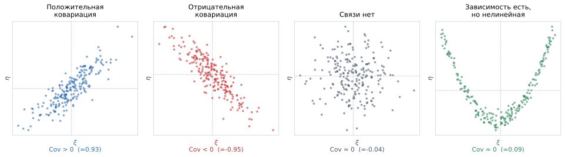
Четыре облака точек с одинаковыми средними. Слева — положительная ковариация: точки идут вверх-вправо, отклонения обеих величин чаще совпадают по знаку. Далее — отрицательная: одна растёт, другая падает. Третья панель — нулевая ковариация при отсутствии связи. Справа — важный случай: связь между величинами жёсткая (парабола), но ковариация всё равно равна нулю, потому что она измеряет только линейную составляющую зависимости. Если расписывать выражение, то получится следующее:
Дискретный случай:
$$\operatorname{Cov}(\xi, \eta) = \sum_{i}\sum_{j} (a_i - \bar{a})(b_j - \bar{b})\, \mathbb{P}(\xi = a_i, \eta = b_j),$$
где $\bar{a}, \bar{b}$ — средние значения $\xi$ и $\eta$.
Непрерывный случай:
$$\operatorname{Cov}(\xi, \eta) = \int_{-\infty}^{+\infty} \int_{-\infty}^{+\infty} (x - \mu_\xi)(y - \mu_\eta) f_{\xi,\eta}(x, y) \, dx \, dy,$$
где $f_{\xi,\eta}(x, y)$ — совместная плотность распределения, $\mu_\xi = \mathbb{E}\xi$, $\mu_\eta = \mathbb{E}\eta$.
На практике удобнее пользоваться развёрнутым видом — точным аналогом формулы «средний квадрат минус квадрат среднего» для дисперсии:
$$\operatorname{Cov}(\xi, \eta) = \mathbb{E}[\xi\eta] - \mathbb{E}\xi \cdot \mathbb{E}\eta$$
Она требует одного прохода по данным: достаточно накопить суммы $\sum x_i$, $\sum y_i$ и $\sum x_i y_i$.
Отсюда же читается критерий: ковариация равна нулю ровно тогда, когда $\mathbb{E}[\xi\eta] = \mathbb{E}\xi \cdot \mathbb{E}\eta$ — то есть когда среднее произведения «распадается» на произведение средних, как это происходит у независимых величин.
Реклама и продажи за 5 месяцев (млн руб.):
Реклама $x$ 1 2 3 4 5 Продажи $y$ 12 15 17 22 24 $\bar{x} = 3$, $\bar{y} = 18$. Считаем произведения отклонений:
$(-2)(-6) = 12$, $(-1)(-3) = 3$, $(0)(-1) = 0$, $(1)(4) = 4$, $(2)(6) = 12$.
$$\operatorname{Cov} = \frac{12 + 3 + 0 + 4 + 12}{5} = 6.2$$
Ковариация положительна — бюджет и продажи растут вместе. А вот насколько сильно — по числу 6.2 сказать невозможно: чтобы это понять, его придётся нормировать.
Ковариация зависит от масштаба переменных: рост в сантиметрах и рост в метрах дадут числа, отличающиеся в 100 раз, при абсолютно одинаковой реальной связи.
Более того, у ковариации есть единицы измерения — «рубли $\times$ штуки», «сантиметры $\times$ килограммы». Такое произведение никакого физического смысла не имеет.
Поэтому по значению ковариации осмысленно читать только знак: связь прямая, обратная или её нет. Чтобы сравнивать силу связей между разными парами переменных, используют корреляцию — нормированную ковариацию, всегда лежащую в отрезке $[-1, 1]$.
Ковариация измеряет только линейную составляющую связи. Величины могут быть жёстко связаны и при этом иметь нулевую ковариацию.
Классический пример: $\xi$ симметрично распределена вокруг нуля, а $\eta = \xi^2$. Зависимость идеальная — зная $\xi$, мы знаем $\eta$ точно. Но отрицательным и положительным $\xi$ соответствуют одинаковые $\eta$, вклады симметрично гасятся, и ковариация равна нулю (правая панель на картинке выше).
Верно только одностороннее утверждение: независимость $\Rightarrow$ нулевая ковариация, но не наоборот. Исключение — совместно нормальные величины: для них равносильность работает в обе стороны.
- Симметрия: $\operatorname{Cov}(\xi, \eta) = \operatorname{Cov}(\eta, \xi)$.
- Связь с дисперсией: $\operatorname{Cov}(\xi, \xi) = \mathbb{D}\xi$.
- Билинейность: $\operatorname{Cov}(a\xi + b, c\eta + d) = ac \cdot \operatorname{Cov}(\xi, \eta)$ — сдвиги не влияют, множители выносятся.
- Дисперсия суммы: $\mathbb{D}(\xi + \eta) = \mathbb{D}\xi + \mathbb{D}\eta + 2\operatorname{Cov}(\xi, \eta)$.
Последнее свойство и объясняет, почему дисперсия суммы равна сумме дисперсий только для независимых величин: в общем случае добавляется удвоенная ковариация.
Формула дисперсии суммы имеет прямое практическое применение. Пусть вы вкладываете деньги в два актива.
- Активы сильно положительно коррелированы (две нефтяные компании): $\operatorname{Cov} > 0$, риск портфеля больше суммы отдельных рисков — активы падают одновременно.
- Активы не связаны: $\operatorname{Cov} = 0$, риски складываются, и относительный риск портфеля снижается.
- Активы отрицательно коррелированы (авиакомпания и нефтедобытчик): $\operatorname{Cov} < 0$, они частично гасят колебания друг друга, и общий риск падает сильнее всего.
Та же математика работает в бэггинге: усреднение моделей снижает дисперсию тем эффективнее, чем менее скоррелированы их ошибки. Именно поэтому случайный лес дополнительно перемешивает признаки — чтобы деревья получались непохожими.
- Ковариационная матрица признаков — основа PCA, LDA, GMM и детекции аномалий по расстоянию Махаланобиса.
- Bias-variance разложение и анализ ансамблей: ковариация ошибок отдельных моделей определяет, насколько усреднение снизит итоговую дисперсию.
- Отбор признаков: пары признаков с высокой ковариацией (после нормировки — корреляцией) дублируют информацию и вызывают мультиколлинеарность в линейных моделях.
- Гауссовские процессы: ядро (kernel) — это функция, задающая ковариацию между значениями функции в разных точках.
Что такое ковариация и что она показывает?
$\operatorname{Cov}(\xi, \eta) = \mathbb{E}[(\xi - \mathbb{E}\xi)(\eta - \mathbb{E}\eta)]$ — мера совместного изменения двух величин. Положительная означает, что переменные движутся вместе, отрицательная — в противоположных направлениях.
Как ковариация связана с дисперсией?
Это её обобщение на пару величин: $\operatorname{Cov}(\xi, \xi) = \mathbb{D}\xi$. Кроме того, $\mathbb{D}(\xi + \eta) = \mathbb{D}\xi + \mathbb{D}\eta + 2\operatorname{Cov}(\xi, \eta)$.
Запишите удобную для вычислений формулу ковариации.
$\operatorname{Cov}(\xi, \eta) = \mathbb{E}[\xi\eta] - \mathbb{E}\xi \cdot \mathbb{E}\eta$ — аналог формулы «среднее произведения минус произведение средних», требующий одного прохода по данным.
Почему величину ковариации нельзя интерпретировать?
Она зависит от масштаба и имеет бессмысленные единицы измерения («рубли $\times$ штуки»). Рост в метрах и в сантиметрах дадут числа, различающиеся в 100 раз при одной и той же связи. Осмысленно читать только знак.
Что делают, чтобы сравнивать силу связи разных пар переменных?
Нормируют ковариацию на произведение стандартных отклонений и получают корреляцию — безразмерную величину из отрезка $[-1, 1]$.
Что означает нулевая ковариация?
Отсутствие линейной связи. Нелинейная зависимость при этом может быть сколь угодно сильной: у $\eta = \xi^2$ при симметричном $\xi$ ковариация равна нулю, хотя зависимость идеальная.
Как связаны независимость и нулевая ковариация?
Независимость влечёт нулевую ковариацию, но обратное неверно. Равносильность выполняется только для совместно нормально распределённых величин.
Запишите формулу ковариации для дискретного случая.
$\operatorname{Cov}(\xi, \eta) = \sum_i \sum_j (a_i - \bar{a})(b_j - \bar{b})\,\mathbb{P}(\xi=a_i, \eta=b_j)$, где $\bar{a}, \bar{b}$ — средние значения величин.
Как ковариация связана с идеей диверсификации и с бэггингом?
Дисперсия суммы включает удвоенную ковариацию, поэтому объединение отрицательно или слабо связанных активов снижает риск портфеля. Точно так же усреднение моделей в бэггинге снижает дисперсию тем сильнее, чем менее скоррелированы их ошибки.
-
Ковариационные матрицы
Если есть несколько случайных величин $\xi_1, \xi_2, \dots, \xi_n$, их ковариационная матрица — это таблица, в которой:
- на диагонали — дисперсии;
- вне диагонали — ковариации:
$$\Sigma=\left( \begin{matrix} \mathbb{D}\xi_1 &\text{Cov}(\xi_1, \xi_2) &\cdots&\text{Cov}(\xi_1, \xi_n)\\ \text{Cov}(\xi_2, \xi_1)& \mathbb{D}\xi_2&\cdots& \text{Cov}(\xi_2, \xi_n)\\ \vdots &\vdots&\ddots&\vdots\\ \text{Cov}(\xi_n, \xi_1)&\text{Cov}(\xi_n, \xi_2)&\cdots&\mathbb{D}\xi_n \end{matrix}\right)_{n\times n}$$
Ковариация показывает, насколько две величины меняются «вместе» — это их совместная дисперсия. Ковариационная матрица просто собирает все попарные ковариации сразу в одну таблицу.
Читается она так: элемент $\Sigma_{ij}$ — это связь между $i$-м и $j$-м признаками. На диагонали стоит связь признака с самим собой, а это и есть его собственная дисперсия ($\operatorname{Cov}(\xi_i, \xi_i) = \mathbb{D}\xi_i$).
Одним объектом $\Sigma$ описывает всё, что можно сказать о разбросе набора величин второго порядка: и насколько каждая гуляет сама по себе, и как они гуляют совместно.
Признаки: рост (см), вес (кг), возраст (лет). Ковариационная матрица могла бы выглядеть так:
$$\Sigma = \begin{pmatrix} 49 & 38 & 2 \\ 38 & 100 & 15 \\ 2 & 15 & 225 \end{pmatrix}$$
Читаем:
- диагональ: дисперсия роста 49 (то есть $\sigma = 7$ см), веса 100 ($\sigma = 10$ кг), возраста 225 ($\sigma = 15$ лет);
- $\Sigma_{12} = 38 > 0$ — рост и вес растут вместе, связь сильная;
- $\Sigma_{13} = 2$ — рост и возраст почти не связаны (у взрослых);
- $\Sigma_{23} = 15 > 0$ — вес слегка растёт с возрастом.
Заметьте, что сравнивать числа 38 и 15 между собой напрямую нельзя: у них разные единицы («см $\times$ кг» и «кг $\times$ год»). Для сравнения нужна корреляционная матрица.
Ковариационная матрица симметрична ($\Sigma = \Sigma^\top$, потому что $\text{Cov}(\xi_i, \xi_j) = \text{Cov}(\xi_j, \xi_i)$) и положительно полуопределена.
Второе свойство означает, что $\mathbf{a}^\top \Sigma \mathbf{a} \ge 0$ для любого вектора $\mathbf{a}$. Содержательно это просто утверждение «дисперсия не бывает отрицательной»: величина $\mathbf{a}^\top \Sigma \mathbf{a}$ — это как раз дисперсия линейной комбинации $a_1\xi_1 + \dots + a_n\xi_n$.
Из этих двух свойств вытекает всё остальное: у $\Sigma$ есть полный набор ортогональных собственных векторов, а все собственные значения неотрицательны. Именно на этом стоят PCA, разложение Холецкого и вывод формул многомерной гауссианы.
Если ковариация $\text{Cov}(\xi_i, \xi_j)$ положительна — переменные $\xi_i, \xi_j$ растут вместе. Отрицательна — одна растёт, другая падает. Равна нулю — переменные не связаны линейно (нелинейная зависимость при этом возможна).
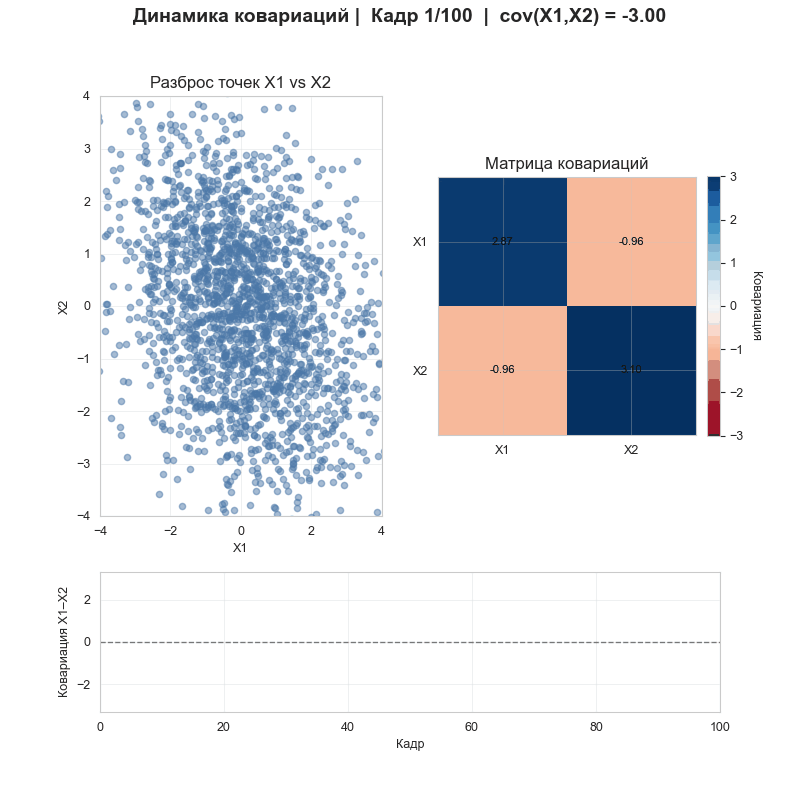
Как меняется облако точек при изменении ковариации: при нулевой ковариации оно круглое, с ростом положительной вытягивается вдоль диагонали вверх-вправо, при отрицательной — вниз-вправо. Форма и наклон облака — это и есть визуальное изображение матрицы $\Sigma$. У ковариационной матрицы есть прямая геометрическая интерпретация: она описывает эллипс рассеяния облака данных.
- Собственные векторы $\Sigma$ — направления осей этого эллипса.
- Собственные значения — квадраты длин полуосей, то есть дисперсии вдоль этих направлений.
- Диагональная $\Sigma$ означает, что оси эллипса совпадают с осями координат: признаки не связаны.
PCA — это ровно поиск собственных векторов $\Sigma$: первая главная компонента есть направление наибольшего собственного значения, то есть самая длинная ось эллипса.
Практическая проблема, с которой сталкиваются постоянно. Матрица $\Sigma$ имеет размер $n \times n$, и для её надёжной оценки нужно много объектов — эмпирическое правило требует, чтобы их было заметно больше, чем признаков.
Если объектов меньше, чем признаков, выборочная $\Sigma$ вырождена ($\det\Sigma = 0$), и обратной матрицы $\Sigma^{-1}$ не существует. А она нужна и в формуле многомерной гауссианы, и в расстоянии Махаланобиса, и в LDA, и в аналитическом решении линейной регрессии.
Та же беда возникает при мультиколлинеарности: если один признак — линейная комбинация других (например, «цена в рублях» и «цена в тысячах рублей»), матрица вырождена даже при большом числе объектов.
Лечится это регуляризацией (
shrinkage: $\Sigma + \lambda I$), удалением зависимых признаков или снижением размерности через PCA.Чтобы элементы стали сравнимы между собой, каждую ковариацию делят на произведение соответствующих СКО:
$$R_{ij} = \frac{\Sigma_{ij}}{\sqrt{\Sigma_{ii}}\sqrt{\Sigma_{jj}}}$$
Получается корреляционная матрица: единицы на диагонали, значения от $-1$ до $1$ вне её. Она же равна ковариационной матрице стандартизованных признаков — то есть стандартизация данных и переход к корреляциям это одно и то же действие.
- PCA: диагонализация $\Sigma$ и отбор направлений с наибольшими собственными значениями.
- LDA и QDA: в формулах разделяющих поверхностей фигурирует $\Sigma^{-1}$; общая матрица для всех классов даёт линейную границу, разные $\Sigma_k$ — квадратичную.
- Многомерная гауссиана и GMM: $\Sigma$ задаёт форму каждой компоненты смеси. Часто её ограничивают (диагональной или сферической), чтобы уменьшить число параметров.
- Детекция аномалий по расстоянию Махаланобиса $(\mathbf{x}-\boldsymbol{\mu})^\top\Sigma^{-1}(\mathbf{x}-\boldsymbol{\mu})$.
- Whitening — преобразование данных к $\Sigma = I$: признаки становятся некоррелированными и с единичной дисперсией.
- Гауссовские процессы: ядро задаёт ковариационную матрицу между значениями функции в точках.
Что содержит ковариационная матрица на диагонали и вне диагонали?
На диагонали — дисперсии $\mathbb{D}\xi_i$ (ковариация признака с самим собой), вне диагонали — попарные ковариации $\operatorname{Cov}(\xi_i, \xi_j)$.
Каков размер ковариационной матрицы для $n$ величин?
$n \times n$: она квадратная и содержит все попарные ковариации, включая диагональные дисперсии.
Какими математическими свойствами обладает ковариационная матрица?
Симметричностью ($\Sigma = \Sigma^\top$) и положительной полуопределённостью ($\mathbf{a}^\top\Sigma\mathbf{a} \ge 0$). Второе — просто утверждение, что дисперсия линейной комбинации признаков не может быть отрицательной.
Какой геометрический смысл у ковариационной матрицы?
Она описывает эллипс рассеяния данных: собственные векторы задают направления его осей, собственные значения — квадраты полуосей. Диагональная матрица означает, что оси эллипса совпадают с осями координат.
Как ковариационная матрица связана с PCA?
PCA ищет собственные векторы $\Sigma$; первая главная компонента соответствует наибольшему собственному значению, то есть направлению максимального разброса.
Почему элементы ковариационной матрицы нельзя сравнивать между собой?
У них разные единицы измерения («см $\times$ кг», «кг $\times$ год») и разный масштаб. Для сравнения переходят к корреляционной матрице, деля каждый элемент на произведение соответствующих СКО.
Когда ковариационная матрица становится вырожденной и чем это опасно?
Когда объектов меньше, чем признаков, или при мультиколлинеарности (один признак — линейная комбинация других). Тогда $\Sigma^{-1}$ не существует, а она нужна для гауссианы, расстояния Махаланобиса, LDA и аналитического решения линейной регрессии.
Как борются с вырожденностью?
Регуляризацией (shrinkage: $\Sigma + \lambda I$), удалением линейно зависимых признаков или снижением размерности через PCA.
Как ковариационная матрица используется в многомерном нормальном распределении?
В плотности $\mathcal{N}(\boldsymbol{\mu}, \Sigma)$ она играет роль дисперсии одномерного случая, задавая форму, размер и ориентацию облака: через $\Sigma^{-1}$ в показателе экспоненты и через $\det\Sigma$ в нормировке.
-
Корреляция
Коэффициент корреляции Пирсона между переменными (признаками) $X_i, X_j$ считается по формуле
$$R_{ij} = \frac{\operatorname{Cov}(X_i, X_j)}{\sqrt{\mathbb{D}X_i} \cdot \sqrt{\mathbb{D}X_j}} = \rho_{X_i, X_j}$$
Корреляционная матрица — полезная штука при визуализации признаков, она помогает искать взаимосвязи между переменными. Матрица содержит коэффициенты корреляции между всеми парами переменных; на диагонали всегда стоят единицы.
Из формулы видно, что корреляция получается нормализацией ковариации: мы делим её на произведение стандартных отклонений. Это даёт два принципиальных улучшения.
- Корреляция безразмерна. Единицы «см $\times$ кг» из числителя сокращаются с «см» и «кг» из знаменателя. Поэтому рост в метрах и в сантиметрах дадут одну и ту же корреляцию с весом, тогда как ковариации различались бы в сотню раз.
- Корреляция всегда лежит в отрезке $[-1, 1]$. Появляется абсолютная шкала: теперь число можно интерпретировать само по себе, а не только по знаку.
Ковариация отвечает на вопрос «в какую сторону связь», корреляция — ещё и «насколько сильная».
- $\rho = 1$ — идеальная прямая линейная связь: все точки лежат ровно на прямой с положительным наклоном.
- $\rho = -1$ — идеальная обратная линейная связь.
- $\rho = 0$ — линейной связи нет.
- $|\rho| > 0.7$ обычно называют сильной связью, $0.3$–$0.7$ — умеренной, меньше $0.3$ — слабой.
Эти пороги — конвенция, а не закон: в физике $\rho = 0.9$ может считаться посредственным результатом, а в социальных науках $\rho = 0.3$ — заметным открытием.
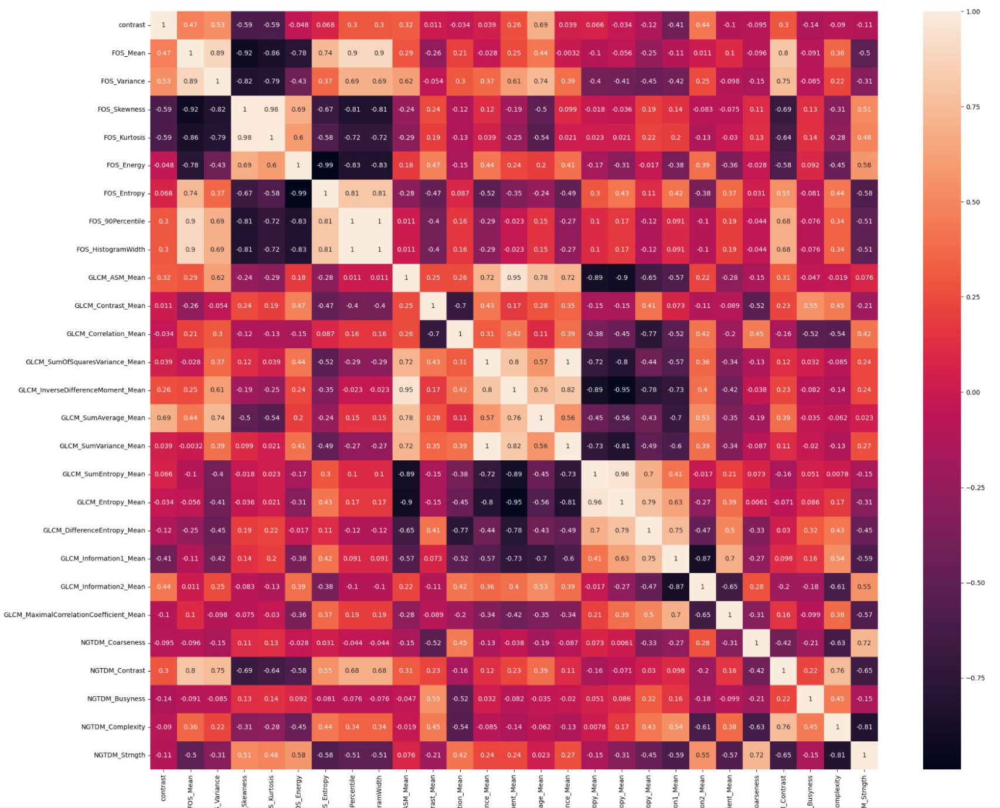
Матрица корреляций между признаками: на диагонали единицы, цвет ячейки кодирует силу и знак связи. Такая тепловая карта — стандартный первый шаг разведочного анализа: по ней сразу видны группы дублирующих друг друга признаков и признаки, связанные с целевой переменной. На практике корреляционную матрицу почти всегда смотрят как heatmap, и ищут в ней две вещи:
- Ярко окрашенные пары признаков — сильно скоррелированные предикторы. Они дублируют информацию и вызывают мультиколлинеарность: в линейной регрессии коэффициенты при них становятся неустойчивыми и меняют знак от выборки к выборке. Обычно один из пары убирают.
- Строку целевой переменной — признаки с высокой корреляцией с целью выглядят перспективными. Но это лишь первый взгляд: корреляция ловит только линейную связь и не учитывает взаимодействия признаков.
Одни и те же точки при $\rho=0.9$, $0$ и $-0.9$: облако вытягивается вдоль прямой, круглеет, меняет наклон. В конце — строгая зависимость $y=x^2$, у которой $\rho\approx 0$: коэффициент Пирсона измеряет только линейную связь и ничего не знает о нелинейной. Коэффициент Пирсона измеряет исключительно линейную составляющую зависимости. Из $\rho = 0$ не следует, что связи нет.
Показательный пример: если $y = x^2$ и $x$ симметрично распределён вокруг нуля, то $\rho = 0$ при идеальной, полностью детерминированной зависимости. Такая же нулевая корреляция получится у точек, лежащих ровно на окружности.
Обратная сторона той же медали — квартет Энскомба: четыре набора данных с одинаковыми средними, дисперсиями и корреляцией $\rho \approx 0.82$, но совершенно разной структурой. Мораль одна: всегда стройте scatter plot, не полагайтесь на одно число.
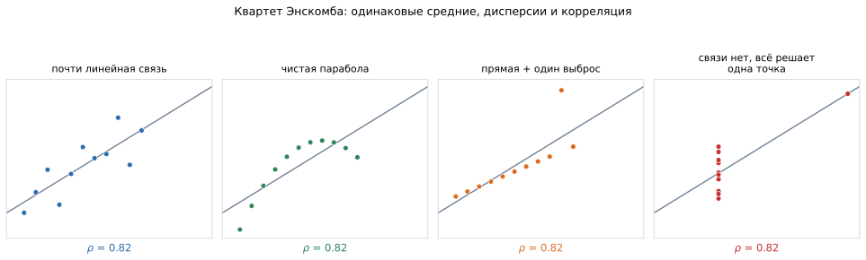
Четыре набора данных с одинаковыми средними, дисперсиями, корреляцией $\rho = 0.82$ и одной и той же линией регрессии — но совершенно разной природой. Слева направо: настоящая линейная связь; идеальная парабола, для которой линейная модель бессмысленна; линейная связь, испорченная единственным выбросом; и набор, где связи нет вовсе, а всю корреляцию создаёт одна отдалённая точка. Ни одно из этих различий по числу $\rho$ не видно. Корреляция Пирсона построена на ковариации и дисперсиях, а те основаны на квадратах отклонений. Поэтому один-единственный выброс способен как создать корреляцию из ничего, так и уничтожить настоящую.
Пример: 50 точек без всякой связи ($\rho \approx 0$) плюс одна точка далеко в углу — и корреляция подскакивает до 0.8. Формально сильная связь, содержательно — артефакт одной точки.
Защита простая: смотреть на диаграмму рассеяния и параллельно считать ранговую корреляцию Спирмена. Если Пирсон и Спирмен сильно расходятся, ищите выбросы или нелинейность.
Матрица корреляций бывает разной: линейной, ранговой, нелинейной.
- Пирсона — линейная связь между самими значениями. Мощнее всего, когда связь действительно линейна, но чувствительна к выбросам.
- Спирмена — та же формула Пирсона, применённая к рангам. Ловит любую монотонную связь (в том числе нелинейную вроде экспоненциальной) и устойчива к выбросам.
- Кендалла ($\tau$) — доля согласованных пар наблюдений. Ещё устойчивее, лучше работает на малых выборках, но считается дольше.
- $\varphi_k$ и взаимная информация — улавливают произвольные, в том числе немонотонные зависимости, и работают со смешанными типами признаков.
Это самое известное предупреждение статистики — и его действительно нарушают постоянно.
Если $X$ и $Y$ скоррелированы, возможны четыре объяснения:
- $X$ влияет на $Y$;
- $Y$ влияет на $X$ (обратная причинность);
- есть общий скрытый фактор, влияющий на оба (confounder);
- совпадение, особенно если перебрано много пар признаков.
Классический пример третьего случая: продажи мороженого коррелируют с числом утоплений. Мороженое ни при чём — оба показателя растут летом. Пример четвёртого: при переборе сотен временных рядов легко найти пары с $\rho > 0.9$ без какой-либо связи.
Установить причинность из наблюдений нельзя в принципе. Нужен эксперимент со случайным распределением (A/B-тест) или методы причинного вывода.
- EDA и отбор признаков: корреляционная матрица — стандартный первый взгляд на датасет. Из пар сильно скоррелированных признаков обычно оставляют один.
- Борьба с мультиколлинеарностью: в линейной регрессии скоррелированные признаки делают коэффициенты неустойчивыми и неинтерпретируемыми. Помогают удаление признаков, $L_2$-регуляризация или PCA.
- Метрики качества: коэффициент корреляции Мэтьюса (MCC) для несбалансированной классификации, корреляция Спирмена для оценки качества ранжирования.
- Feature engineering: слабая линейная корреляция признака с целью — не повод его выбрасывать; деревья и бустинг прекрасно используют нелинейные и взаимодействующие признаки.
- Ансамбли: чем ниже корреляция ошибок базовых моделей, тем сильнее усреднение снижает дисперсию — на этом стоит случайный лес.
Как вычисляется корреляция Пирсона?
$\rho_{X_i, X_j} = \dfrac{\operatorname{Cov}(X_i, X_j)}{\sqrt{\mathbb{D}X_i}\cdot\sqrt{\mathbb{D}X_j}}$ — ковариация, нормированная на произведение стандартных отклонений. Значение всегда лежит в отрезке $[-1, 1]$.
Почему корреляция удобнее ковариации?
Она безразмерна и не зависит от масштаба: рост в метрах и в сантиметрах дают одинаковую корреляцию с весом. Кроме того, ограниченность отрезком $[-1,1]$ создаёт абсолютную шкалу, по которой силу связи можно интерпретировать.
Что стоит на диагонали корреляционной матрицы и почему?
Единицы: корреляция переменной с самой собой максимальна, так как $\operatorname{Cov}(X,X) = \mathbb{D}X$, и после нормировки получается ровно 1.
Что означает $\rho = 0$?
Отсутствие линейной связи. Нелинейная зависимость может быть сколь угодно сильной: у $y = x^2$ при симметричном $x$ и у точек на окружности корреляция равна нулю при полностью детерминированной связи.
Что такое квартет Энскомба и чему он учит?
Четыре набора данных с одинаковыми средними, дисперсиями и корреляцией $\approx 0.82$, но совершенно разной структурой (линия, парабола, выброс). Вывод: одного числа недостаточно, всегда нужно смотреть на диаграмму рассеяния.
Насколько корреляция Пирсона устойчива к выбросам?
Совсем неустойчива: одна экстремальная точка способна и создать сильную корреляцию там, где связи нет, и скрыть существующую. Расхождение между корреляциями Пирсона и Спирмена — надёжный сигнал о выбросах или нелинейности.
Чем корреляция Спирмена отличается от корреляции Пирсона?
Спирмена — это Пирсон, применённый к рангам значений. Она ловит любую монотонную связь, включая нелинейную, и устойчива к выбросам, но теряет информацию о величинах и потому чуть менее мощна при действительно линейной зависимости.
Почему корреляция не означает причинность?
Связь может объясняться обратной причинностью, общим скрытым фактором (продажи мороженого и утопления объясняются летом) или случайным совпадением при переборе многих пар. Причинность устанавливается только экспериментом с рандомизацией или методами causal inference.
Зачем корреляционная матрица нужна в ML?
Для разведочного анализа, обнаружения дублирующих друг друга признаков и борьбы с мультиколлинеарностью в линейных моделях, а также для первичной оценки связи признаков с целевой переменной.
-
Центральная предельная теорема (ЦПТ)
ЦПТ говорит о том, что если взять выборку из $n$ независимых одинаково распределённых наблюдений, посчитать их среднее, вычесть из него математическое ожидание $\mu = \mathbb{E}X$ и поделить на стандартное отклонение среднего, то в пределе при $n \to \infty$ получится величина, распределённая стандартно нормально:
$$\frac{\bar{X}_{n}-\mu}{\sigma/\sqrt{n}} \xrightarrow{n\to\infty} \mathcal{N}(0,1),$$
где $\bar{X}_n = \frac{1}{n}\sum_{i=1}^n X_i$ — выборочное среднее, $\sigma = \sqrt{\mathbb{D}X}$ — стандартное отклонение одного наблюдения, а $\mathcal{N}(0,1)$ означает нормальное распределение с $\mu = 0$ и $\sigma^2 = 1$.
Как читать
$\frac{\bar{X}_{n}-\mu}{\sigma/\sqrt{n}} \xrightarrow{n\to\infty} \mathcal{N}(0,1)$ — «икс с чертой эн минус мю, делённое на сигма, делённую на корень из эн, при эн, стремящемся к бесконечности, сходится к стандартному нормальному распределению — эн от нуля и единицы».
Это главное недопонимание вокруг ЦПТ, и оно стоит того, чтобы проговорить его отдельно.
ЦПТ не утверждает, что при большой выборке ваши данные станут нормальными. Доходы останутся скошенными хоть при миллионе наблюдений — гистограмма самих данных к колоколу не сходится.
ЦПТ утверждает другое: нормальным становится распределение выборочного среднего. То есть если много раз брать новую выборку и каждый раз считать по ней среднее, вот эти средние и лягут в колокол. Одна выборка даёт одну точку такого распределения.
Слева — исходное распределение наблюдений (сначала равномерное, затем экспоненциальное), справа — гистограмма стандартизованного среднего $(\bar X_n-\mu)/(\sigma/\sqrt n)$ при $n=1,2,5,30$. При $n=1$ гистограмма повторяет форму исходного распределения, при $n=30$ почти совпадает с розовой кривой $\mathcal N(0,1)$ — независимо от того, с чего начинали. Дисперсия среднего $n$ независимых величин равна $\sigma^2/n$, а значит его стандартное отклонение — $\sigma/\sqrt{n}$. Это и есть стандартная ошибка среднего.
Смысл прост: чем больше выборка, тем меньше «дрожит» среднее. И дрожит оно не как $1/n$, а как $1/\sqrt{n}$ — вчетверо больше данных дают вдвое меньшую погрешность.
Именно этот $\sqrt{n}$ потом всплывает во всех формулах — в доверительных интервалах, в $t$-статистике, в расчёте размера выборки для A/B-теста. По сути вся практическая статистика — это следствия ЦПТ.
У ЦПТ есть три условия, и их полезно помнить:
- Независимость наблюдений. Зависимые наблюдения (временной ряд, несколько записей одного пользователя) ломают теорему.
- Одинаковое распределение (i.i.d.). Существуют обобщения и на разнораспределённые слагаемые, но с дополнительными требованиями.
- Конечная дисперсия. Это важнее всего: у распределений с очень тяжёлыми хвостами (Коши, Парето с $\alpha \le 2$) дисперсия бесконечна, и ЦПТ не работает — среднее по ним не стабилизируется вообще.
Обратите внимание, чего в списке нет: никаких требований к форме исходного распределения. Оно может быть дискретным, скошенным, двугорбым, каким угодно.
При достаточно большом $n$ мы всегда можем привести i.i.d. случайные величины к стандартному нормальному распределению. Это важно потому, что множество методов и статистических тестов рассчитаны на работу именно с нормально распределёнными величинами.
Практически это означает: даже если отдельные наблюдения имеют «странное» распределение (скошенное, дискретное и т.д.), их среднее по большой выборке ведёт себя почти нормально. Именно поэтому нормальное распределение так часто встречается на практике — многие реальные величины являются суммами или средними множества случайных факторов.
Один бросок правильного кубика даёт равномерное распределение: значения от 1 до 6 равновероятны, никакого колокола.
Бросим два кубика и возьмём сумму. Значения от 2 до 12 уже неравновероятны: семёрка выпадает чаще (шесть способов её получить), двойка и двенадцатка — реже (по одному способу). Появляется «горка».
Бросим пять кубиков и усредним — распределение среднего уже вполне похоже на колокол. При тридцати кубиках отличить его от нормального на глаз невозможно.
За три-четыре шага равномерное распределение превращается в нормальное. Никакой мистики: крайние значения требуют, чтобы все кубики выпали одинаково экстремально, а средние получаются множеством способов.
Практическое правило: при $n \geq 30$ обычно считают, что ЦПТ «работает» и среднее приближённо нормально. Но это грубая эвристика, а не теорема.
- Для симметричных распределений хватает и $n = 10$.
- Для умеренно скошенных (время ответа, длительность сессии) нужно $n$ порядка сотен.
- Для сильно скошенных метрик с редкими огромными значениями (выручка, где 0.1% клиентов даёт половину оборота) не хватает и тысяч наблюдений.
- Для бинарных данных (конверсия) ориентируются на другое правило: нужно не менее 10 успехов и 10 неудач в каждой группе. При конверсии 0.1% это означает минимум 10 000 наблюдений.
Скорость сходимости определяется не $n$ самим по себе, а асимметрией исходного распределения.
Практический вывод для A/B-тестов на денежных метриках: если у метрики очень тяжёлый хвост, $t$-тест может давать неверный уровень значимости даже на больших выборках, потому что среднее ещё не «донормализовалось».
Что делать: логарифмировать метрику, использовать винзоризацию (обрезать верхний хвост по 99-му перцентилю), перейти к бутстрапу или тестировать более устойчивую метрику вроде доли покупателей вместо средней выручки.
- Обоснование $t$-теста и z-теста на ненормальных данных — работает ровно благодаря ЦПТ.
- Доверительные интервалы для метрик модели: формула $\bar{x} \pm 1.96\,s/\sqrt{n}$ существует только потому, что среднее нормально.
- Расчёт размера выборки в A/B-тестах.
- Инициализация весов нейросетей: сумма многих входов с случайными весами по ЦПТ нормальна — из этого выводятся формулы Xavier и He, задающие дисперсию так, чтобы сигнал не затухал и не взрывался по слоям.
- Обоснование гауссовского шума в моделях: если шум складывается из множества мелких независимых источников, он приближённо нормален — отсюда и MSE как функция потерь.
- Стохастический градиентный спуск: градиент по мини-батчу — это среднее по случайной подвыборке, и его отклонение от полного градиента приближённо нормально с масштабом $1/\sqrt{\text{batch size}}$.
Что утверждает центральная предельная теорема?
При большом $n$ нормированное выборочное среднее i.i.d. величин сходится к стандартному нормальному распределению: $\frac{\bar{X}_n - \mu}{\sigma/\sqrt{n}} \to \mathcal{N}(0,1)$, независимо от формы исходного распределения.
Что именно становится нормальным — данные или их среднее?
Только среднее (или сумма). Сами данные своей формы не меняют: доходы остаются скошенными при любом объёме выборки. Нормальным оказывается распределение выборочного среднего при повторении эксперимента.
Откуда в формуле берётся $\sqrt{n}$?
Дисперсия среднего $n$ независимых величин равна $\sigma^2/n$, поэтому его стандартное отклонение равно $\sigma/\sqrt{n}$ — это стандартная ошибка среднего. Отсюда же следует, что для вдвое большей точности нужно вчетверо больше данных.
Какие условия нужны для применимости ЦПТ?
Независимость наблюдений, одинаковое распределение и конечная дисперсия. Требований к форме распределения нет — она может быть любой.
Когда ЦПТ не работает?
При бесконечной дисперсии (распределение Коши, Парето с $\alpha \le 2$) и при зависимых наблюдениях — например, во временных рядах или когда несколько записей относятся к одному пользователю.
При каком $n$ на практике считают, что ЦПТ применима?
Обычно ориентируются на $n \geq 30$, но это лишь эвристика: для симметричных распределений хватает и 10, для сильно скошенных не хватает и тысяч. Для бинарных данных используют правило «не менее 10 успехов и 10 неудач».
Почему ЦПТ важна для статистических тестов?
Многие тесты требуют нормальности статистики. ЦПТ гарантирует приближённую нормальность выборочного среднего, благодаря чему $t$-тест и доверительные интервалы применимы к данным произвольной формы.
Что делать, если у метрики очень тяжёлый хвост?
Логарифмировать её, применить винзоризацию по высокому перцентилю, перейти к бутстрапу или выбрать более устойчивую метрику (например, долю покупателей вместо средней выручки).
Почему нормальное распределение так часто встречается в природе?
Многие реальные величины складываются из множества независимых случайных факторов, а по ЦПТ сумма большого числа таких факторов стремится к нормальному распределению.
-
Закон больших чисел
Закон больших чисел (ЗБЧ) показывает, что при большом количестве наблюдений среднее наблюдаемое значение сходится к истинному. Иными словами, выборочное среднее $\bar{X}_n$ стремится к математическому ожиданию $\mathbb{E}X$:
$$\bar{X}_n = \frac{1}{n}\sum_{i=1}^{n} X_i \ \xrightarrow{\ n \to \infty\ }\ \mathbb{E}X$$
Если совсем простыми словами: чем больше данных, тем ближе среднее по ним к правде.
Как читать
$\bar{X}_n = \frac{1}{n}\sum_{i=1}^{n} X_i \ \xrightarrow{\ n \to \infty\ }\ \mathbb{E}X$ — «икс с чертой эн, то есть одна энная суммы икс итых по и от одного до эн, стремится при эн, стремящемся к бесконечности, к матожиданию икс». Черта над буквой — «среднее», $\mathbb{E}$ — «математическое ожидание».
ЗБЧ — тихий фундамент, на котором держится вся эмпирическая работа с данными. Он отвечает на вопрос, который обычно даже не задают: почему вообще имеет смысл что-то считать по выборке?
Мы постоянно оцениваем неизвестные величины средними: конверсию — долей покупок, точность модели — долей верных ответов на тесте, среднюю выручку — средним по чекам. ЗБЧ гарантирует, что такие оценки не просто «примерно похожи» на истину, а сходятся к ней с ростом объёма данных.
Без ЗБЧ статистика была бы бессмысленна: не было бы оснований считать, что выборка вообще что-то говорит о генеральной совокупности.
Закон больших чисел гарантирует стабильные долгосрочные результаты для средних значений случайных событий. Например, казино может проиграть деньги за один спин рулетки, но его прибыль будет стремиться к предсказуемому проценту за большое количество спинов.
Закон применяется (как следует из названия) только тогда, когда рассматривается большое количество наблюдений. Про отдельный спин он не говорит ничего.
Если подбрасывать монетку, мы получаем два исхода: орёл и решка с вероятностями 50 на 50, оба события равновероятны. Но вполне может оказаться, что подряд выпадет 5 решек и только 1 орёл. Если же подбросить монетку очень много раз, количество выпавших орлов и решек будет практически поровну.
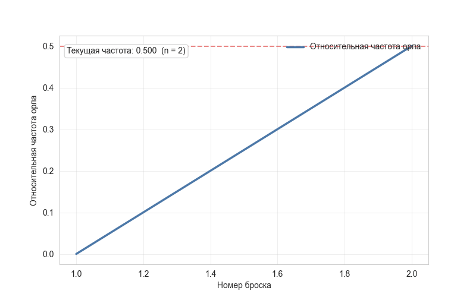
Относительная частота выпадения орла по мере роста числа бросков. Вначале линия скачет — на первых десятках бросков перевес в одну сторону обычен, — но с ростом $n$ колебания затухают, и частота всё плотнее прижимается к 0.5. На графике рисуется относительная частота выпадения орла — доля выпадений орла в общем количестве подбрасываний. Видно, как при увеличении количества наблюдений относительная частота всё ближе к $0.5$.
Это говорит о том, что вероятность выпадения орла стремится к $0.5$ при увеличении количества подбрасываний. Если подбросить монетку бесконечное количество раз, относительная частота будет равна $0.5$. Это и есть закон больших чисел.
Заодно обратите внимание на форму сходимости: линия не приближается к 0.5 монотонно, а колеблется вокруг неё со всё меньшей амплитудой. Размах этих колебаний убывает как $1/\sqrt{n}$ — ровно то, что описывает ЦПТ.
Самое распространённое заблуждение вокруг ЗБЧ — так называемая ошибка игрока (gambler's fallacy): «выпало пять решек подряд, значит теперь должен выпасть орёл, чтобы восстановить баланс».
Это неверно. Монетка не имеет памяти: вероятность орла в следующем броске всегда ровно 0.5, независимо от предыдущих исходов.
Как же тогда частота приходит к 0.5? Не за счёт компенсации, а за счёт разбавления. Перевес в 5 решек при 10 бросках — это отклонение частоты на 25 процентных пунктов. Тот же самый перевес в 5 решек при 10 000 бросках — отклонение всего на 0.05 пункта. Абсолютный дисбаланс не исчезает и даже может расти, но на фоне растущего $n$ он становится всё менее заметен.
Формально различают две версии:
- Слабый ЗБЧ: для любого $\varepsilon > 0$ вероятность отклонения $|\bar{X}_n - \mu| > \varepsilon$ стремится к нулю (сходимость по вероятности). «Для достаточно большого $n$ большое отклонение маловероятно».
- Усиленный ЗБЧ: $\bar{X}_n \to \mu$ почти наверное. «Почти для каждой бесконечной последовательности бросков средние действительно сойдутся».
Для практики разница несущественна, но знать о существовании двух формулировок полезно.
ЗБЧ требует независимости наблюдений и существования математического ожидания. Для распределений с очень тяжёлыми хвостами (классический пример — распределение Коши) ожидание не определено, и закон не работает: выборочное среднее не стабилизируется вообще, а продолжает скакать сколь угодно далеко даже при миллионах наблюдений.
Второе типичное нарушение — зависимость наблюдений. Если данные коррелированы (временной ряд, несколько событий одного пользователя, кластеризованные данные), эффективный объём выборки меньше формального, и сходимость идёт заметно медленнее.
Эти две теоремы часто идут в паре, но отвечают на разные вопросы:
- ЗБЧ: куда сходится выборочное среднее. Ответ — к $\mu$. Это утверждение о точке.
- ЦПТ: как быстро и с каким разбросом оно сходится. Ответ — отклонение имеет масштаб $\sigma/\sqrt{n}$ и приближённо нормально. Это утверждение о форме погрешности.
ЗБЧ обещает, что оценка будет верной; ЦПТ позволяет сказать, насколько она уже верна — и потому именно на ней строятся доверительные интервалы и статистические тесты.
- Метод Монте-Карло: любые оценки через случайное сэмплирование (интегралы, ожидания в RL, дропаут-ансамбли) работают благодаря ЗБЧ.
- Стохастический градиентный спуск: градиент по мини-батчу — это среднее по случайной подвыборке; ЗБЧ гарантирует, что в среднем он совпадает с полным градиентом, а шум усредняется по итерациям.
- Оценка метрик на тесте: accuracy на тестовой выборке сходится к истинному качеству модели — тем точнее, чем больше тест. Отсюда и требование к его размеру.
- Обучение с подкреплением: оценка ценности состояния как среднего по многим эпизодам.
- Бутстрап: ресемплинг работает потому, что эмпирическое распределение по ЗБЧ приближает истинное.
Что утверждает закон больших чисел?
При большом числе наблюдений выборочное среднее $\bar{X}_n$ сходится к истинному математическому ожиданию $\mathbb{E}X$. Чем больше данных, тем ближе среднее по ним к истине.
Почему закон больших чисел важен для всей статистики?
Он обосновывает саму возможность оценивать неизвестные величины по выборке: конверсию — долей покупок, качество модели — точностью на тесте. Без него не было бы оснований считать, что выборка что-то говорит о генеральной совокупности.
Как ЗБЧ обосновывает частотное понимание вероятности?
Он гарантирует, что относительная частота события при большом числе испытаний стремится к его вероятности: доля орлов при бесконечном числе бросков равна 0.5.
Что такое ошибка игрока и почему она неверна?
Убеждение, что после серии решек «должен» выпасть орёл. Монетка не имеет памяти, вероятность каждого броска неизменна. Частота выравнивается не компенсацией, а разбавлением: фиксированный перевес становится незаметным на фоне растущего $n$.
Чем слабый закон больших чисел отличается от усиленного?
Слабый утверждает сходимость по вероятности: $P(|\bar{X}_n - \mu| > \varepsilon) \to 0$. Усиленный — сходимость почти наверное: сами траектории средних сходятся к $\mu$. Для практики различие несущественно.
При каких условиях закон больших чисел применим?
Нужны независимость наблюдений и существование математического ожидания. У распределения Коши ожидание не определено, и среднее не стабилизируется; при зависимых наблюдениях сходимость сильно замедляется.
Чем закон больших чисел отличается от центральной предельной теоремы?
ЗБЧ говорит, куда сходится среднее (к $\mu$), ЦПТ — как быстро и с каким разбросом: отклонение имеет масштаб $\sigma/\sqrt{n}$ и приближённо нормально. Доверительные интервалы строятся именно на ЦПТ.
Как ЗБЧ связан с надёжностью казино?
За один спин казино может проиграть, но при огромном числе спинов средняя прибыль стремится к математическому ожиданию, заложенному в правила игры, что и обеспечивает устойчивый доход.
Где закон больших чисел применяется в ML?
В методах Монте-Карло, в стохастическом градиентном спуске (градиент по мини-батчу как оценка полного), при оценке метрик на тестовой выборке, в обучении с подкреплением и в обосновании бутстрапа.